<title>MTJ LFE Families</title>
<meta name="claude:viewport-fit-sides" content="cover">
<link rel="preconnect" href="https://fonts.googleapis.com">
<link rel="stylesheet" href="https://fonts.googleapis.com/css2?family=IBM+Plex+Mono:wght@400;500&family=IBM+Plex+Sans:wght@400;500;600&family=IBM+Plex+Serif:wght@500;600&display=swap">
<style>
/* layout: single reading column with wide figure/table bands; sticky family index */
:root{
  --bg:#f6f7f8; --surface:#ffffff; --fg:#1b2026; --muted:#5b6672; --line:#d9dee4;
  --accent:#1f5f8b; --accent-soft:#e3eef6; --strong:#a3321f; --weak:#a86c12; --ok:#2f6f4f;
  --display:"IBM Plex Serif", Georgia, serif; --body:"IBM Plex Sans", system-ui, sans-serif;
  --mono:"IBM Plex Mono", ui-monospace, monospace;
}
@media (prefers-color-scheme: dark){:root:not([data-theme="light"]){
  --bg:#12161a; --surface:#1a2026; --fg:#e4e8ec; --muted:#9aa6b2; --line:#2c353e;
  --accent:#7fb6dc; --accent-soft:#1d2e3b; --strong:#f08a74; --weak:#e2b05c; --ok:#7cc59f; color-scheme:dark}}
:root[data-theme="dark"]{
  --bg:#12161a; --surface:#1a2026; --fg:#e4e8ec; --muted:#9aa6b2; --line:#2c353e;
  --accent:#7fb6dc; --accent-soft:#1d2e3b; --strong:#f08a74; --weak:#e2b05c; --ok:#7cc59f; color-scheme:dark}
body{background:var(--bg);color:var(--fg);font:15px/1.6 var(--body);
  padding-left:max(16px,env(safe-area-inset-left,0px));padding-right:max(16px,env(safe-area-inset-right,0px));padding-block:24px 64px}
main{max-width:1080px;margin:0 auto;display:flex;flex-direction:column;gap:40px}
h1,h2,h3{font-family:var(--display);font-weight:600;text-wrap:balance;line-height:1.2;margin:0}
h1{font-size:2.1rem} h2{font-size:1.5rem;padding-bottom:6px;border-bottom:1px solid var(--line)} h3{font-size:1.15rem}
p{margin:0;max-width:72ch} section{display:flex;flex-direction:column;gap:16px;min-width:0}
.lede{color:var(--muted);max-width:72ch}
.eyebrow{font:500 .75rem var(--mono);letter-spacing:.08em;text-transform:uppercase;color:var(--accent)}
.findings{display:grid;gap:12px;grid-template-columns:repeat(auto-fit,minmax(300px,1fr))}
.finding{background:var(--surface);border:1px solid var(--line);border-radius:8px;padding:16px;display:flex;flex-direction:column;gap:8px;min-width:0}
.finding h3{font-size:1.02rem}
.finding p{font-size:.93rem}
.tbl{overflow-x:auto;border:1px solid var(--line);border-radius:8px;background:var(--surface)}
table{border-collapse:collapse;width:100%;font-size:.86rem;font-variant-numeric:tabular-nums}
th,td{padding:6px 10px;text-align:right;border-bottom:1px solid var(--line);white-space:nowrap}
th:first-child,td:first-child{text-align:left}
th{font-weight:600;color:var(--muted);background:var(--accent-soft);position:sticky;top:0}
tr:last-child td{border-bottom:none}
td a{color:var(--accent);text-decoration:none;font-weight:600}
.val{font-family:var(--mono);font-size:.82rem}
.z{font:500 .72rem var(--mono);padding:1px 5px;border-radius:4px}
.z.strong{color:var(--strong);background:color-mix(in srgb,var(--strong) 14%,transparent)}
.z.weak{color:var(--weak);background:color-mix(in srgb,var(--weak) 14%,transparent)}
.z.none{color:var(--muted)}
.na{color:var(--muted)}
figure{margin:0;display:flex;flex-direction:column;gap:6px}
figure img{width:100%;height:auto;border:1px solid var(--line);border-radius:6px;background:#fff}
figcaption{font-size:.82rem;color:var(--muted)}
.famnav{display:flex;flex-wrap:wrap;gap:6px}
.famnav a{font:500 .85rem var(--mono);color:var(--accent);background:var(--surface);border:1px solid var(--line);
  border-radius:6px;padding:3px 9px;text-decoration:none}
.famnav a:hover,.famnav a:focus-visible{background:var(--accent-soft);outline:2px solid var(--accent);outline-offset:1px}
.fam{background:var(--surface);border:1px solid var(--line);border-radius:10px;padding:20px;display:flex;flex-direction:column;gap:14px}
.fam h3{font-size:1.3rem}
.kv{display:grid;grid-template-columns:repeat(auto-fit,minmax(230px,1fr));gap:10px 24px}
.kv div{display:flex;flex-direction:column;gap:2px;min-width:0}
.kv .k{font:500 .72rem var(--mono);letter-spacing:.06em;text-transform:uppercase;color:var(--muted)}
.kv .v{font-size:.9rem}
.two{display:grid;grid-template-columns:repeat(auto-fit,minmax(320px,1fr));gap:14px}
ul{margin:0;padding-left:1.2em;display:flex;flex-direction:column;gap:6px;max-width:80ch}
.note{font-size:.88rem;color:var(--muted)}
@media (prefers-reduced-motion: reduce){*{scroll-behavior:auto}}
</style>
<main>
<header style="display:flex;flex-direction:column;gap:10px">
  <span class="eyebrow">Mendocino triple junction · Shelly v2 LFE catalog · 2008–2026</span>
  <h1>MTJ LFE families</h1>
  <p class="lede">Per-family results for all 27 low-frequency-earthquake families: 3D locations, relative relocations
  through time, coda-wave dv/v measured CWIRE-style on stacks of repeats, and the response to the 2021 M6.2 Petrolia,
  2022 M6.4 Ferndale and 2024 M7.0 Mendocino earthquakes. dv/v values are in %, positive = faster.
  ± values are bootstrap/jackknife standard errors; chips give the significance.</p>
</header>

<section><h2>What we learned</h2>
<p class="lede">The M7.0 acted as a natural clamp-and-hold experiment on a very weak, deep strike-slip fault. These are the results
that survived null tests and controls, grouped by how new they are.</p>
<h3>New</h3><ul>
<li><b>Only the M7 lowered pore pressure at the LFE fault, and only the M7 silenced it.</b> Of 12 nearby quake dates, Coulomb stress and
clamping do not single out the M7 (Ferndale was larger on both); the undrained pore-pressure drop does, in every model variant.</li>
<li><b>The fault's frictional state did not change.</b> Tidal sensitivity (±28% for M2) stayed the same across all three quakes (a drop of
more than ~55% is excluded), LFE sizes did not change and there is no healing with hold time (≤3.5% per decade). The missing moment was
repaid within ~60–90 days. With ~3.5 kPa of extra effective clamping, the unchanged tidal response implies an effective normal stress of
at least ~6 kPa (rough): a fault held near lithostatic pore pressure.</li>
<li><b>The tides and the M7 cannot be explained by one static fault response.</b> With a converged ocean-tide load at LFE depth (SPOTL,
layered Earth), the LFE rate follows right-lateral tidal shear on the 293°/40° plane (no bootstrap replicate prefers left-lateral), with a low
effective friction μ′ = 0.09 ± 0.01 and aσ ≈ 0.63 kPa (with the local rigidity). Written in Shelly &amp; Materna’s undrained poroelastic form,
the tides want a small Skempton B (0–0.5) and μ ≈ 0.1, as Lu, Ide &amp; Ren found for tremor, and reject Shelly &amp; Materna’s B ≈ 1, μ = 0.6
in 24 of 26 families. Yet making the M7 discourage slip needs B ≈ 1 and μ ≳ 0.5, and the tidal-best parameters predict a ~25× rate
increase after the M7. No single static (B, μ) fits both, so the silencing needs a timescale-dependent or nonlinear mechanism
(for example drained vs undrained behaviour, a permeability change, or a threshold response to a large step).</li>
<li><b>The LFEs switched back on abruptly, ~18 days after the M7, not diffusively.</b> Per-family rate fits give a median half-recovery
time of 18 d (9–30 d). A step switch-on or a rate-and-state negative step fits best; half-space diffusion is worse in 27 of 27 families, and a
network-scale diffusive front would need a diffusivity of ~180–1500 m²/s, over 100× fault-zone values. The restart was synchronous
(17 of 27 first events within 1.3 d) with no along-strike or depth order. In rate-and-state terms the silence matches the ~3.5 kPa effective
clamping with loading of ~71 kPa/yr (41–93), the rate expected from cm/yr slip across the whole LFE zone, not a single patch.</li>
<li><b>LFE patches are resolved and small:</b> ~560 × 350 m, elongated along strike and lying in Shelly's NE-dipping fault plane, smaller
than Cascadia patches. Deconvolved images show patches elongated along strike and flatter-topped than a Gaussian (5–7 families
significant), with no resolvable sub-asperities or rings above ~150–200 m and no shape change at the M7. Bursts re-rupture one sub-region
within minutes; patch size does not explain how long each family stayed silent.</li>
<li><b>Families talk to each other.</b> A burst in one family makes a burst in another ~9× more likely within 10 minutes. Coupling decays with
distance and is stronger along strike. Network episodes sweep inward from both ends of the 15-km array at ~80–100 km/day, in the range of
rapid tremor reversals, and the M7 did not change this.</li>
<li><b>Surface waves from distant large earthquakes trigger LFEs</b> (tentative). Burst onsets in the hour after teleseismic surface waves
are 1.44× the tide- and time-of-day-matched expectation (p = 0.0015), and 3.2× for the 30 quakes with the strongest expected shaking (p = 0.013).
A waveform check classifies 82% of these detections as real LFEs (87% for ordinary detections at the same quality). Thirteen quakes drive the
strong-shaking result, led by the 2020 Perryville and 2021 Chignik earthquakes in Alaska. Measured at a local broadband station (789 quakes),
triggering switches on above ~0.6 kPa of dynamic stress (68% range 0.2–1.4 kPa; 2.6× above vs 1.1× below), the same scale as the tidal
stresses and aσ, and then saturates: local quakes with 100–1000× more dynamic stress trigger about as much in the first hour. Shear stress
resolved on the fault predicts slightly better (threshold ~0.36 kPa). Rate-and-state with the measured stress and aσ ≈ 0.5 kPa predicts only
1.2× where 2.4× is seen, so this looks like threshold-and-saturation release of patches near failure. Dynamic stress
does not predict which local quake silenced the LFEs (Petrolia 173 kPa: rate up; M7 229 kPa: silenced), so the silencing needs a static
cause such as the pore-pressure drop.</li>

<li><b>The LFE rate has an annual cycle</b> of ~5–7%, peaking in August–September, in phase with the fastest coda velocities.</li>
<li><b>Coda dv/v from repeating LFEs gives an 18-year record</b> of the crust near the stations. Calibrated against random-date placebos:
an annual cycle (surface 0.045%, borehole 0.020%; z ≈ 4–10) and a decline since 2021 that has not recovered (surface −0.08 to −0.12%, borehole −0.06%
by 2025; z ≈ −6 to −7 on unsmoothed monthly data) are robust. The decline is the same for every LFE family, somewhat larger at surface sites than in boreholes (1.2–1.5×; an earlier factor of 2 depended on instrument breaks), starts no earlier than the Petrolia quake and is not explained by rainfall, so it is a near-surface change tied to
the 2021–24 quakes rather than a change at the LFE sources. The annual cycle tracks rainfall and is likely hydrological. Velocity drops at the quakes are real but modest (M7 surface −0.05%, z ≈ −2 to −3; Ferndale and
borehole steps marginal; Petrolia not significant).
<b>Ambient noise confirms the decline independently</b> (no LFE source involved): 2021→2025 change −0.27% at KMPB, −0.17% at BRIC,
−0.32% at B045 (1–4 Hz; LFE coda −0.24, −0.19, −0.13%) and none at the control station HAYF (−0.01%), against ±0.07% in pre-2021 placebo
years. Noise and LFE monthly series correlate at r = 0.6–0.75. Noise also shows clear drops at all three quakes at BRIC and B045
(M7 −0.3 to −0.75%; Ferndale at B045 z −5 to −9), while KMPB declines gradually from 2022 without a jump at the M7. After the instrument check, the KMPB and B045 declines and the BRIC and B045 M7 drops survive on the vertical component alone; BRIC’s 1–4 Hz decline does not survive an offset at its 2024 sensor reinstall, and the Ferndale drop at B045 is not seen on the vertical.</li>
</ul>
<h3>Confirms earlier work</h3><ul>
<li>All 27 families stopped after the M7 for ~7–25 days (Shelly &amp; Materna 2026), as did tremor in the same zone (Lu &amp; Ide 2026;
Lu, Ide &amp; Ren 2026); no other M≥5.5 within 200 km since 2008 did this to the LFEs.</li>
<li>The families define a plane dipping ~45° NNE (toward 28°), consistent with the dipping strike-slip fault of Shelly et al. (2025, 2026),
whose hypocentral plane is 293°/48° and composite P mechanism 292/34/177.</li>
<li>Right-lateral slip on the 293°/40° plane from the tides (Shelly et al. 2026, Science), now with a converged ocean load. Repeating their
dip-and-rake scan gives the maximum at dip 35°, rake 180°, with 40°/180° close; the left-lateral peak is negligible and appears only when
the ocean load is too strong relative to the body tide, which is the likely origin of their secondary left-lateral peak (unconfirmed without
their supplement).</li>
<li>Strong tidal modulation (Shelly et al. 2026); in our data the M2 tide modulates the rate by ±28% and the response is linear across
constituents (N2/M2 and K1/O1 ratios at their equilibrium values).</li>
</ul>
<h3>Tested and not supported</h3><ul>
<li>Fault healing during the silence (an apparent effect was a detection-threshold artefact).</li>
<li>Source migration at the M7 or since 2020 (common to all families and dependent on the station set), and relative migration between families
faster than ~1 m/yr.</li>
<li>A velocity change at the depth of the LFEs. The coseismic drops scale with local shaking only weakly (slope significant on all 14 surface
stations, but not on the 6 with long records), and the post-2021 decline does not scale with shaking beyond what random pre-2021 windows
produce; where the changes occur is therefore not established. A 60-day early-coda drop after the
M7 survived location and event-mix controls in three families, but across 18 families it is not significant against random-date placebos
(early minus late z = −1.2), is absent in boreholes, and similar drops follow Petrolia and Ferndale. Formal dv/v errors understate
the real scatter by 2–3×.</li>
<li>Detectable aseismic slip during LFE episodes on borehole strainmeters (B045, B933–B935): stacking 132 clean episodes gives nothing
(p = 0.70 vs 32,000 random windows). This only excludes episodes with more than ~180× the LFE moment (Mw 4.4 per episode); the expected
slow slip is ~15× below that bound, so the strainmeters are not sensitive enough to test it. GNSS likewise detects no slip on the LFE zone
(bounds Mw 5.1–5.6; see Newest results).</li>
<li>Fronts sweeping through individual patches (explained by overlapping LFEs pulling locations by ~50 m), tidal shifts in where LFEs occur,
and a restart after the M7 that propagates as a front. An apparent east–west gradient in restart delay was an artefact of normalising by
each family’s background rate; the restart time itself has no along-strike trend.</li>
<li>A single static poroelastic Coulomb model for both the tides and the M7 (see above), and diffusive re-pressurisation as the recovery
mechanism.</li>
<li>Changes across the silence in Vp/Vs (bound ~0.3%) or in slip direction (SH/SV and P/S amplitude ratios), and reversed-polarity (left-lateral)
LFEs during the silence (Vp/Vs and amplitude ratios tested on family 23; the reversed-polarity scan on every family).</li>
<li>Patch “breathing” (size changes with tide, season or the M7) is inconclusive: too few events are well located in both station halves.</li>

</ul></section>
<section><h2>Newest results (round 4, 23 Nov 2026)</h2>
<div class="findings">
<div class="finding"><span class="eyebrow">Tides</span><h3>Right-lateral slip confirmed; one static pore-pressure model cannot explain both the tides and the M7</h3>
<p>With a converged ocean-tide load at LFE depth (SPOTL with the OSU usawest + TPXO7.2 model, layered Earth; validated on 11 tide gauges and
4 strainmeters), right-lateral slip on the 293°/40° plane wins decisively (no bootstrap replicate prefers left-lateral; robust to 9 ocean models).
Effective friction μ′ = 0.09 ± 0.01 and aσ ≈ 0.63 kPa (with the local rigidity at 29 km). Fitting the tides with the undrained poroelastic
form of Shelly &amp; Materna (2026), CFS = τ + μ(σn − B·mean stress), gives a best fit at small B (0–0.5) and μ ≈ 0.1. Their B ≈ 1, μ = 0.6 is
rejected (24 of 26 families). Yet making the M7 discourage slip needs B ≈ 1 and μ ≳ 0.5, and the tidal-best parameters predict a ~25×
rate increase after the M7 instead of the observed silence. No single static (B, μ) fits both, so the M7 silencing needs a mechanism beyond the
static stress-and-fluid response that governs the tides (for example timescale-dependent fluid behaviour, a permeability change, or a
nonlinear response to a large step).</p></div>
<div class="finding"><span class="eyebrow">Tides</span><h3>Details, and one open issue</h3>
<p>The LFE rate is in phase with stress, not stressing rate (it leads total right-lateral shear by 13 ± 2.5°; 3° with the body tide alone),
shear matters far more than normal stress, and an exponential response beats a linear one. Per constituent, aσ is 0.72 kPa (M2), 0.57 (N2),
0.22 (K1) and 0.23 (O1): the diurnal tides need ~3× more sensitivity than M2. All 26 fitted families are right-lateral with positive shear
sensitivity (median aσ 0.71 kPa), but lag and μ′ increase westward (lag vs longitude ρ = −0.59, p = 0.002); the ocean load does not explain this.
<b>Open issue:</b> the body tide alone fits better than body tide plus the modelled ocean load (the best ocean-load scale is 0; no bootstrap
replicate prefers the ocean load; 11 of 26 families individually fit better with the body tide only). Either the load at depth is overestimated, the body tide is underestimated, or this is an
LFE property. Relative to Shelly et al. (2026, Science), new here are the phase, shear vs normal stress, aσ and μ′, per-family fits, the
explicit ocean-load test and the time-resolved sensitivity (unchanged across the M7).</p></div>
<div class="finding"><span class="eyebrow">Patches</span><h3>Sharpened images: elongated, flat-topped patches without sub-asperities</h3>
<p>Deconvolving the empirical (non-Gaussian) location error makes the images 2–3× sharper than raw densities (resolution ~110 m along strike,
~90 m down dip; two sources 200 m apart are always separated in synthetic tests). 22 families could be imaged. Patches are elongated along
strike and flatter than Gaussian (significant in 5–7 families; binomial p ≤ 0.004): family 23 is a ~550 m × ≤125 m band, families 18 and 20
are similar, and family 8 has two lobes ~250 m apart (two sub-patches or one flat-topped patch). No family shows a ring or separated
sub-asperities, and patch shape does not change at the M7 or between early and late years beyond chance.</p></div>
<div class="finding"><span class="eyebrow">Geodesy</span><h3>No aseismic slip detected with GNSS or strainmeters</h3>
<p>56 GNSS stations within 110 km (NGL daily series) show no slip on the LFE zone during the 20 largest multi-week LFE-rate peaks
(stack p = 0.80; 95% bound Mw 5.1 for the average peak). Regressing the LFE-patch motion on the cumulative excess LFE count over 2009–2026 gives
86 ± 108 m³ of aseismic potency per LFE, so &lt; ~300 m³ (95%), ~40× the seismic potency of an Mw 1.5 LFE: if slip tracks LFE activity, the
aseismic/seismic ratio on the patch is below ~40. There is no LFE-zone signal in the M7 afterslip (bound Mw 5.5–5.6 at 3–90 days, nothing at
the ~18-day restart; the regional postseismic signal is clear). The patch slip rate after 2021 did not change detectably (−27 to +62 mm/yr
across model variants, all |z| ≤ 1.7; 95% limits 1.4–8× the plate rate), and the 2-year patch velocity does not track the LFE rate (r = −0.35,
p = 0.28). Borehole strainmeters bound slip during individual LFE episodes to below Mw 4.4.</p></div>
<div class="finding"><span class="eyebrow">Literature</span><h3>Graded response to the three quakes, not "ceased after each"</h3>
<p>Lu, Ide &amp; Ren (2026) report tremor stopping after each of the 2021, 2022 and 2024 quakes. In the LFE catalogue Petrolia caused only a 1–2-day
dip (4 LFEs in the first day; 30-day count unchanged), Ferndale a sustained halving (no shutdown), and only the M7 a full 7–25-day silence,
consistent with the M7 being the only quake that lowered pore pressure at the LFEs. (Measured against the preceding year, the Petrolia
30-day rate was 1.32×; against the 30 days before, it was unchanged.) The restart after the M7 shows no along-strike order (t50 vs along-strike
position p ≥ 0.38; first-event time vs longitude ρ = 0.04): Lu et al. report east-to-west recovery, Shelly &amp; Materna suggest, if anything, the
opposite. Lu, Ide &amp; Ren’s tidal intrinsic friction of ~0.1 agrees with our tidal fit; Shelly &amp; Materna’s 0.6 is what the M7 requires.
Whether the Petrolia/Ferndale dips are partly detection loss is being tested with our own matched-filter scan (in progress).</p></div>
<div class="finding"><span class="eyebrow">Setting</span><h3>Where the LFEs sit relative to the slab</h3>
<p>In McCrory et al. (2012) and Slab2 the LFEs lie 0.5–3 km above the plate interface. In the newest, receiver-function model (Bloch, Bostock &amp;
Audet 2023), the McCrory interface corresponds to the slab Moho (~30 km) and all 27 families lie inside the low-velocity layered package
above it (3–8 km below its top at ~20 km), the zone Shelly et al. (2026) interpret as material accreted to the southern edge of the Gorda slab.</p></div>
</div>
<div class="finding"><span class="eyebrow">dv/v depth</span><h3>The velocity decline sits in the top few hundred metres near the stations</h3>
<p>Combining borehole sensor depth (8 PB sensors at 139–592 m), frequency and coda lapse time in LFE coda and ambient noise with depth-sensitivity
kernels: half of the decline lies above ~0.1–0.3 km and 90% above ~0.2–0.7 km; the M7 drop is shallower still (half above ~50–150 m). The decline
sits in the early coda, varies strongly between stations only 5–11 km apart, and is absent at the control station, consistent with damaged or
fractured near-surface rock (deeper than a soil layer of tens of metres) that has not healed, possibly with near-surface fluid changes; a km-scale
regional process is disfavoured but not excluded. Open tension: boreholes at 412–592 m decline as much as those at 175–218 m, which on its own
suggests a deeper change unless borehole sensors also sample the near surface through surface-reflected waves. The depth estimate rests mainly on
ambient noise at KMPB.</p></div>
<div class="finding"><span class="eyebrow">Sources</span><h3>The M7 changed when the patches slip, not how they rupture</h3>
<p>Source spectra of all 27 families were compared within each family on the same channel and instrument epoch (matched-filter band amplitudes,
2–6.5 Hz, amplitude-matched, borehole and surface stations separately, 200 placebo dates). Spectral shape, S-wave duration and size do not change at
the M7, Ferndale or Petrolia (all |z| &lt; 1.7; 7 of 142 tests exceed |z| = 2, as expected by chance): corner frequency is unchanged within about
±20%, i.e. stress drop at fixed moment by less than ~2×. Restart events after the M7 look larger only because post-quake noise lets mainly larger
events be detected; size-matched, their spectra are ordinary. No source change over 18 years that both station groups agree on. Duration barely
grows with size (2–4%), favouring near-constant duration, though self-similar scaling is not excluded. Individual LFEs genuinely differ in spectral
shape (up to ±0.2 log10, reproduced on independent stations). Tentative: LFEs within bursts have slightly shorter S envelopes (−8 ms, z −4).</p></div>
<div class="finding"><span class="eyebrow">Sources</span><h3>Families differ only slightly in spectrum; LFE size is not set by patch size</h3>
<p>Comparing families with each other on the same stations (neighbours closer than 3 km share the path, so the ratio cancels it) shows small real
differences between patches: about 8% in corner frequency and 11% in typical LFE amplitude (borehole and surface stations agree for the corner).
Typical LFE amplitude does not grow with patch size, which rules out LFEs rupturing the whole patch at constant stress drop or constant slip. The
corner frequency tends to drop as the patch gets larger (sign as fc ∝ 1/L in 12 of 13 variants, but p = 0.10). Suggestive only (about 16 variables
tested): families that recur more often have higher-frequency LFEs (ρ = −0.5 to −0.6), hinting that loading rate, not geometry, sets LFE dynamics.
The size range between families is too narrow to tell self-similar from constant-duration scaling.</p></div>
<div class="finding"><span class="eyebrow">Anisotropy</span><h3>Shear-wave splitting did not change; it exposed instrument problems instead</h3>
<p>Monthly S-wave splitting from isolated LFEs at 28 stations (Silver–Chan, 2–8 and 2–5 Hz, bootstrap, half-splits; precision ~1–2 ms in delay and
1–2° in fast direction; an injection test recovers rotations fully and delay changes at about half size). No change at Petrolia, Ferndale or the
M7 (network |z| ≤ 1.5; delay bound ~1–2 ms), no counterpart of the post-2021 dv/v decline, no coherent annual cycle, and no difference between
borehole and surface stations. The method proved a sensitive check of horizontal components: it found instrument problems at B933 (2017–2021, and
from 2024-08), B935 (from 2024-05), BRIC (Dec 2022 to its May 2024 reinstall), RVIT and BJES (until their 2024 reinstalls), KMR and KMPB. Re-running every dv/v claim with these windows excluded (and with free offsets at the reinstalls): the annual cycle, the borehole decline, the decline onset after mid-2021 and the M7 surface step survive; the surface decline is ~20% smaller; the surface/borehole factor of 2 drops to 1.2–1.5×; the 1–4 Hz noise decline at BRIC does not survive an offset at its 2024 reinstall (its 2–8 Hz decline and M7 drop do, also on the vertical alone); Ferndale steps at RVIT, BRIC and BJES cannot be separated from instrument changes that began with that quake. Absolute splitting values are ambiguous (delays near half a period).</p></div>
<div class="finding"><span class="eyebrow">dv/v (source side)</span><h3>No velocity change detected at the LFEs themselves; deep changes are bounded, not seen</h3>
<p>All 1.83 million instrument-cleaned coda measurements were fitted jointly as a receiver term per station channel plus a source term per family
(sum of family terms fixed at zero, because a change common to every path cannot be told from a change at every station). Only how families
differ from each other is identifiable. Balanced panel of 8 long-record stations and 25 families; errors calibrated with bootstrap, placebo dates and
family-label permutations. Family deviations are null at the M7 (step scatter &lt; 0.03%, 60-day transient &lt; 0.13%), Ferndale, Petrolia and over
the post-2021 decline (&lt; 0.06%); no family exceeds |z| = 1.6 for any step, and nothing scales with silence duration, modelled stress change or position
(one lead: family 27, transient −0.15 ± 0.06%, not significant after correction for 25 families). Synthetics with the real design recover injected
family steps (slope 1.1) without leakage. The common deep term is bounded only: apparent M7 change −0.04 ± 0.03% (95% −0.10 to +0.02%), decline
−0.07 ± 0.03%, which every station decline explains equally well. Converted to local dv/v this excludes percent-level changes (MPa-scale pore pressure
or damage) near the LFEs, but expected kPa-level stress effects are 10–1000× below detection. Inter-family coda coherence is at chance, so the coda
sensitivity to the source region could not be measured.</p></div>
</div>
<p class="note">In progress: our own
matched-filter scan of continuous data around Petrolia and Ferndale (real rate change vs detection loss).</p>
<figure>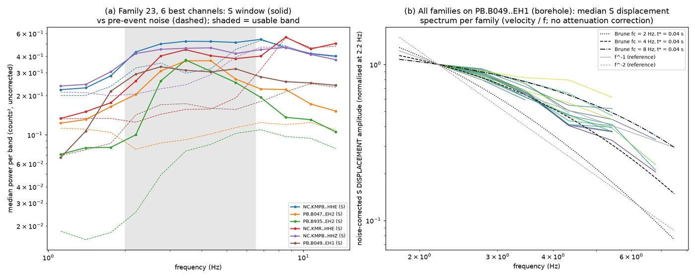<figcaption>LFE S-wave spectra. (a) Family 23 on its six best channels: S window vs pre-event noise; the LFE signal clearly exceeds noise only at about 2-7 Hz. (b) Median displacement spectrum of every family on borehole PB.B049 (velocity divided by f, normalised at 2.2 Hz): the falloff over 2-7 Hz lies between Brune shapes with corner 4 and 8 Hz for t* = 0.04 s; the corner frequency trades off with the unknown attenuation, so the absolute corner is not resolved.</figcaption></figure>
<figure>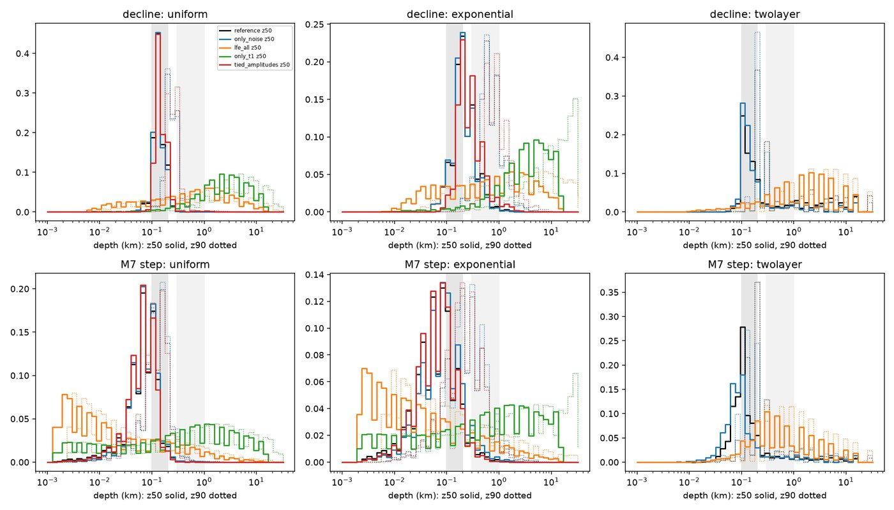<figcaption>Depth extent of the dv/v decline: posterior depth distributions from the joint inversion of sensor-depth, frequency and lapse-time observations (LFE coda and ambient noise) for uniform, exponential and two-layer models.</figcaption></figure>
<figure>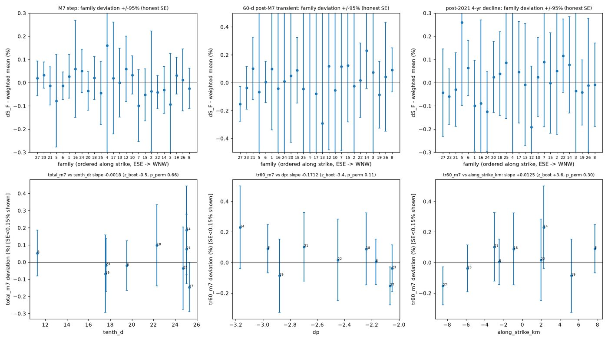<figcaption>Source-receiver separation: family deviations from the weighted mean (95% honest errors) for the M7 step, the 60-day post-M7 transient and the post-2021 decline, ordered along strike (top), and the transient versus silence duration, modelled pore-pressure change and along-strike position (bottom). All consistent with zero.</figcaption></figure>
<figure>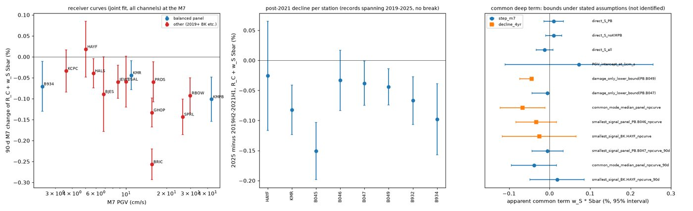<figcaption>Source-receiver separation: receiver curves at the M7 versus peak ground velocity (left), post-2021 decline per long-record station (centre) and bounds on the common deep term under different stated assumptions (right); the common term is bounded, not identified.</figcaption></figure>
<figure>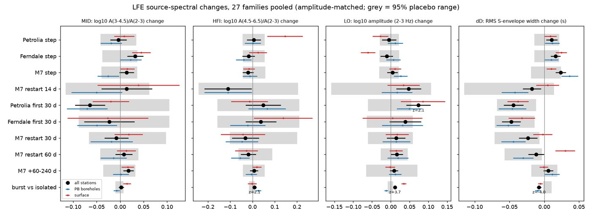<figcaption>Source-spectral indices (mid- and high-frequency ratios, low-frequency size proxy, S-envelope width) before and after each quake and in the first weeks after the M7, pooled over 27 families, compared with 200 random placebo dates: no change.</figcaption></figure>
<figure>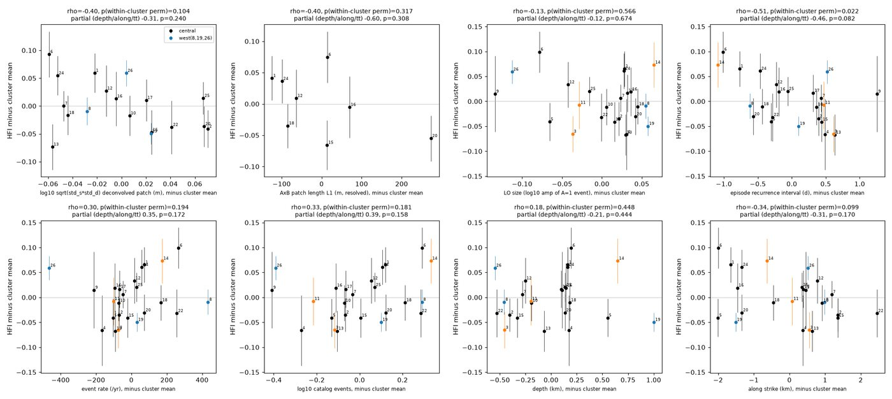<figcaption>Relative source spectra between families (within clusters of neighbouring families): high-frequency falloff and typical amplitude versus patch size, recurrence interval and depth, with permutation nulls.</figcaption></figure>
<figure>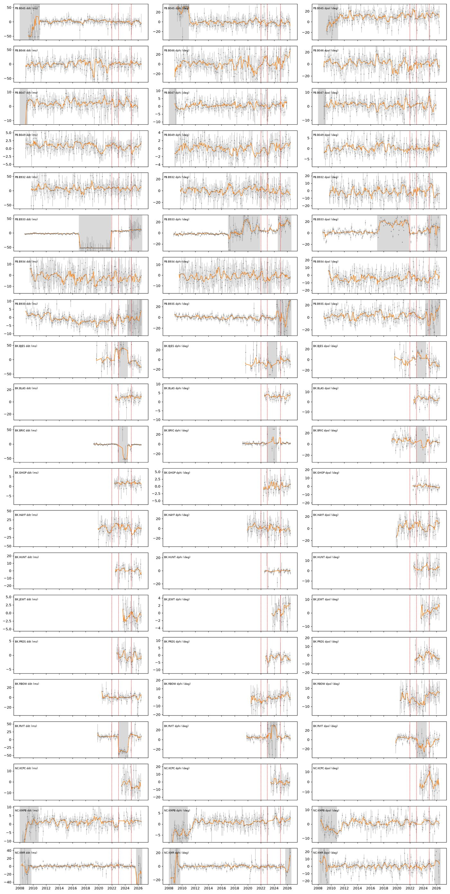<figcaption>Shear-wave splitting through time (delay along the reference fast direction and fast-direction change) per station; shaded windows are instrument problems found by this analysis; dashed lines mark the three quakes.</figcaption></figure>
<figure><figcaption>Tidal fits with the converged ocean load (log-likelihood gain over a constant rate). Top left: fit vs effective friction mu&#x27; for several load models (solid right-lateral, dashed left-lateral; right-lateral wins in every model). Top right: fit vs ocean-load scale factor and phase shift; the best fit is at scale 0, i.e. body tide only (the open issue). Bottom left: strike scan at dip 40 deg, right-lateral (dashed line = 293 deg). Bottom right: phase of the LFE rate relative to right-lateral shear per constituent (0 = in phase with right-lateral shear, +-180 = left-lateral).</figcaption></figure>
<figure>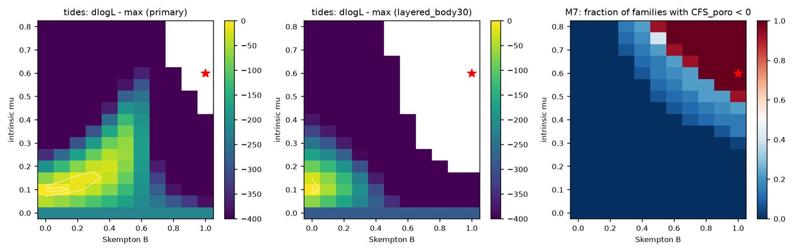<figcaption>Poroelastic test. Left/centre: tidal fit quality over Skempton B and intrinsic friction (yellow = best; the Shelly &amp; Materna point B=1, mu=0.6 is the red star). Right: fraction of families for which the M7 discourages slip. The regions allowed by the tides and required by the M7 do not overlap.</figcaption></figure>
<figure>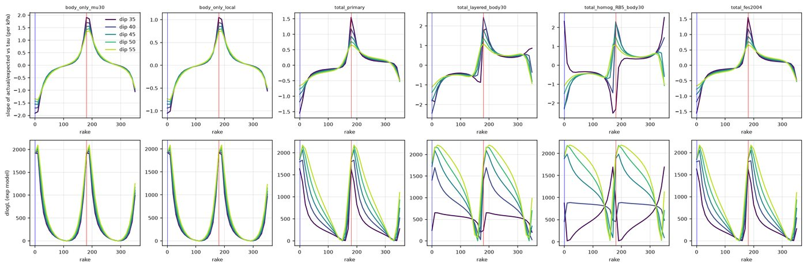<figcaption>Shelly et al. (2026) tidal test repeated with the converged ocean load: the right-lateral optimum on 293° holds; a secondary left-lateral peak appears only when the ocean load is too strong relative to the body tide.</figcaption></figure>
<figure>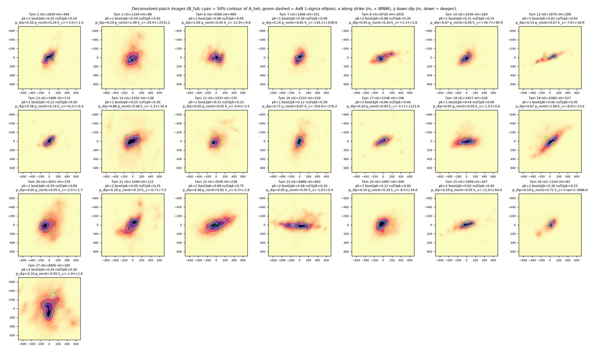<figcaption>Deconvolved (sharpened) patch image of each family in its fault plane (x along strike, + WNW; y down dip). Cyan: 50% contour of the alternative method; green dashed: split-station 1-sigma ellipse.</figcaption></figure>
<figure>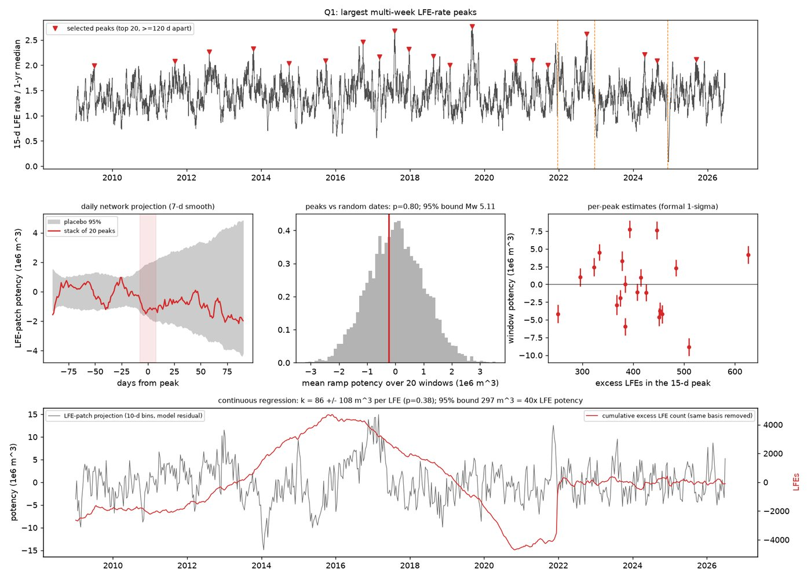<figcaption>GNSS vs LFE activity. Top: 15-day LFE rate relative to the 1-year median, with the 20 largest peaks (red; dashed lines = the three quakes). Middle: stacked LFE-patch potency around the peaks vs the 95% placebo band, the stack against random dates (p = 0.80; 95% bound Mw 5.1) and per-peak estimates. Bottom: patch projection vs cumulative excess LFE count, giving 86 +- 108 m3 per LFE (95% bound ~300 m3, ~40x the LFE seismic potency).</figcaption></figure>
<figure>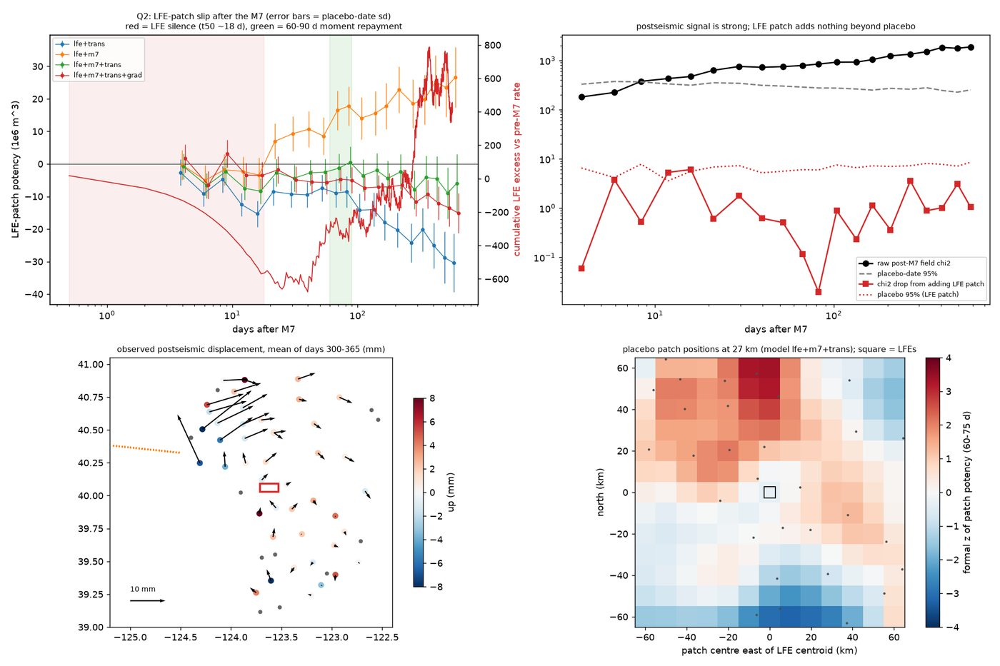<figcaption>GNSS after the M7: regional postseismic motion is clear, but no slip on the LFE zone is required beyond the placebo level.</figcaption></figure>
<figure>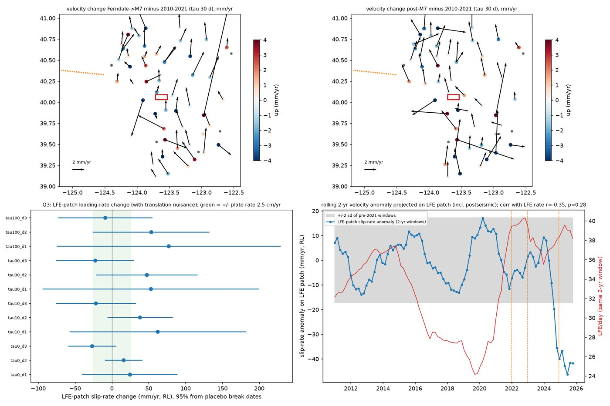<figcaption>GNSS velocity changes after 2021. Top: change of velocity between Ferndale and the M7 (left) and after the M7 (right) relative to 2010-2021 (red box = LFE zone). Bottom left: change of LFE-patch slip rate for each model variant with 95% placebo ranges (green band = +-plate rate 2.5 cm/yr). Bottom right: rolling 2-year patch slip-rate anomaly (blue) vs LFE rate (red); the drop in windows spanning the M7 is postseismic leakage.</figcaption></figure>
<figure>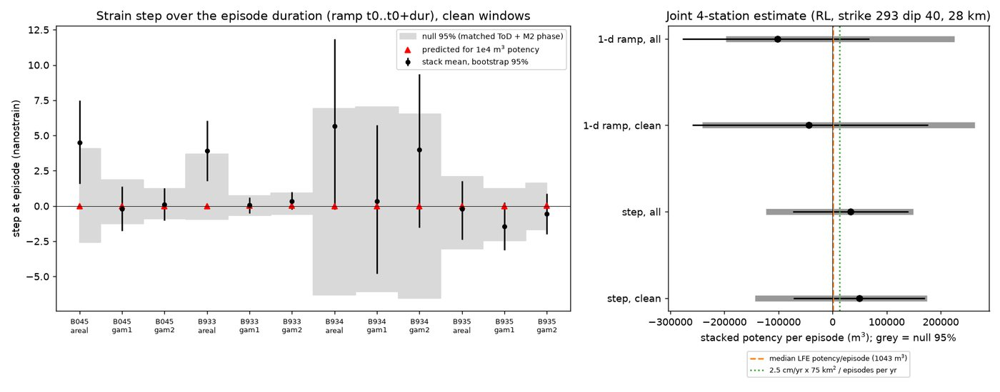<figcaption>Borehole strain stack on 132 clean LFE episodes. Left: strain step during the episode per gauge (B045, B933-B935; areal and shear) vs the 95% null from random windows matched in time of day and M2 phase; red = prediction for 1e4 m3 of right-lateral potency. Right: joint four-station potency estimate (293/40, 28 km) for step and 1-day-ramp variants; orange = median LFE potency per episode, green dotted = slip budget per episode at 2.5 cm/yr.</figcaption></figure>
</section>
<section><h2>Main findings</h2><div class="findings">
<div class="finding"><span class="eyebrow">Activity</span><h3>The M7.0 is the only quake that silenced the system</h3>
<p>Of 13 M≥5.5 earthquakes within 200 km since 2008, only the M7.0 shut the LFEs down: the 30-day rate of all families
fell to 0.45× normal (no random date in 3,000 reached this), and 24 of 27 families had one of
their 10 longest quiet periods since 2009 span it. After Ferndale the rate fell to 0.52× without long gaps;
after Petrolia it rose to 1.32×.</p></div>
<div class="finding"><span class="eyebrow">dv/v</span><h3>Modest velocity drops at the quakes</h3>
<p>Pooling all families per station (CWIRE layout), surface stations dropped -0.065 ± 0.011% at the M7
and boreholes -0.016 ± 0.005%. Against random-date placebos the M7 surface drop is
z ≈ −2 to −3, the Ferndale and borehole drops are marginal and Petrolia is not significant (formal errors understate the real scatter
by 1.5–3.5×). The M7 drop scales with measured local shaking across 14 surface stations (−0.12 ± 0.05% per tenfold PGV, p = 0.02),
but not significantly on the 6 stations with long pre-quake records, so near-station damage is plausible but not established. A further 60-day recovering drop follows the M7 (-0.110 ± 0.017% surface,
-0.056 ± 0.021% borehole). It sits in the early coda and does not scale with shaking, so it is the only
possible change near the LFE sources; it survives location and event-mix controls in three families but is not significant across 18 families against random-date placebos.</p></div>
<div class="finding"><span class="eyebrow">dv/v</span><h3>Stable for 13 years, then a decline since 2021 that has not recovered</h3>
<p>Yearly means (seasonal cycle removed) are flat from 2009 to 2021, then fall by about 0.06% in boreholes and 0.1–0.14% at surface
stations by 2025. This is far outside the 4-year changes seen before 2021 (all within ±0.022%;
z ≈ −7 surface, −6 borehole on unsmoothed monthly data). It starts no earlier than the Petrolia quake; at surface stations it is mostly a
drop at the M7 (−0.10%, z −4.3). It is the same for every LFE family (no family effect, z −2.2), so it is receiver-side, not at the sources;
it is only modestly larger at surface sites (1.2–1.5× once the instrument breaks at BRIC, RVIT and KMPB are given free offsets; the earlier factor of 2 does not hold). It is largest at KMPB, followed by BRIC, RVIT, RBOW and the borehole B045. A rainfall-storage model
consistent with 2009–2021 explains at most a third of it, and no instrument change lines up with it. It is most consistent with a
near-surface change tied to the 2021–24 quakes; whether that is site damage or a regional shallow change is open. Borehole data from the local archive and from NCEDC are byte-identical, so the 2023 data-source switch
is not the cause. <b>Ambient-noise dv/v at the same stations reproduces it</b> (KMPB −0.27%, BRIC −0.17%, B045 −0.32%, control HAYF
−0.01%; monthly r = 0.6–0.75 with the LFE curves), so it is a real crustal change, not an LFE-source or catalog artefact. Noise does not
reproduce the surface-vs-borehole contrast (B045 changes most), as expected because 1–8 Hz noise samples the top ~1 km regardless of sensor depth.</p></div>
<div class="finding"><span class="eyebrow">dv/v</span><h3>An annual cycle every year since 2008</h3>
<p>Velocity is fastest around day 250–258 (early to mid September). The amplitude is
0.042% at surface stations and 0.018% in boreholes, so the seasonal signal is mostly shallow.
It reproduces in independent halves of the LFEs.</p></div>
<div class="finding"><span class="eyebrow">Locations</span><h3>27 families located in 3D</h3>
<p>Median horizontal offset from Shelly's locations is 0.68 km. Ours are
2.3 km deeper on median, of which ~2.5 km is our model bias found with earthquakes.
The families sit at two depth levels across ~15 km east–west.</p></div>
<div class="finding"><span class="eyebrow">Relocation</span><h3>Patches resolved: ~0.5–0.7 km long along the fault strike, thin across it</h3>
<p>Relocating each event twice with two independent halves of the stations separates real spread from error: in families 23, 8
and 27 the true spread is 160–210 m (standard deviation) along Shelly's strike of 293°, with little or none across the plane.
Raw single-event clouds (~1 km) are dominated by the near-vertical error ellipse and should not be read directly.
Bin centroids of 150 repeats are stable to 10–40 m over 18 years, and families move relative to each other by less than ~1 m/yr.
An apparent ~10 m shallowing at the M7 is common to all families, changes with the station set and shrinks to −3.5 ± 3.2 m
after reweighting by signal quality: it is not source motion (it matches a path-averaged velocity drop of ~0.03%).</p></div>
<div class="finding"><span class="eyebrow">Silent period</span><h3>No sign of hidden or reversed LFEs during the silence</h3>
<p>Reverse-polarity detections in the silence (0.53/day, median over families) occur at
or below the pre-M7 noise rate (0.85/day) and are mostly incoherent across stations or
coincide with local earthquakes. The scan recovers 68% of catalog events before the M7.</p></div>
</div></section>
<section><h2>LFE activity after every nearby earthquake</h2><p class="lede">All 27 families from Shelly's v2 catalog, for every M≥5.5 within 200 km. "Ratio" is the 30-day count after the quake divided by the rate over the preceding year. "Top-10 gaps" counts families whose quiet period spanning the quake ranks among their 10 longest since 2009.</p><div class="tbl"><table><tr><th>Earthquake</th><th>Distance (km)</th><th>30-day ratio</th><th>Top-10 gaps</th><th>Median gap (d)</th><th>Max gap (d)</th></tr>
<tr><td>2010-01-10 M6.5</td><td>112</td><td>0.63</td><td>0</td><td>3.5</td><td>9.2</td></tr>
<tr><td>2010-02-04 M5.9</td><td>120</td><td>0.87</td><td>0</td><td>3.3</td><td>18.9</td></tr>
<tr><td>2012-02-13 M5.6</td><td>121</td><td>0.81</td><td>0</td><td>3.5</td><td>8.9</td></tr>
<tr><td>2014-03-10 M6.8</td><td>154</td><td>0.81</td><td>6</td><td>4.6</td><td>12.0</td></tr>
<tr><td>2015-01-28 M5.7</td><td>88</td><td>0.78</td><td>0</td><td>3.1</td><td>10.2</td></tr>
<tr><td>2016-09-03 M5.6</td><td>178</td><td>1.12</td><td>2</td><td>5.4</td><td>25.4</td></tr>
<tr><td>2019-06-23 M5.6</td><td>62</td><td>0.94</td><td>3</td><td>5.8</td><td>25.8</td></tr>
<tr><td>2020-03-09 M5.8</td><td>130</td><td>0.73</td><td>3</td><td>3.9</td><td>15.7</td></tr>
<tr><td>2021-12-20 M5.7</td><td>89</td><td>1.32</td><td>4</td><td>5.1</td><td>12.0</td></tr>
<tr><td>2021-12-20 M6.2</td><td>68</td><td>1.32</td><td>4</td><td>5.1</td><td>12.0</td></tr>
<tr><td>2022-12-20 M6.4</td><td>85</td><td>0.52</td><td>0</td><td>2.6</td><td>5.2</td></tr>
<tr><td>2023-05-21 M5.6</td><td>169</td><td>0.79</td><td>0</td><td>2.1</td><td>7.0</td></tr>
<tr><td>2024-12-05 M7.0</td><td>124</td><td>0.45</td><td>24</td><td>20.0</td><td>33.1</td></tr>
</table></div></section>
<section><h2>dv/v per station, all families pooled</h2><p class="lede">The CWIRE layout (Hotovec-Ellis, USGS): one damped least-squares dv/v curve per station-channel, using stack pairs from every family. Stacks are 50 isolated LFEs (25 in the 6 months after each quake), aligned on direct S and stretched in the 2–8 Hz coda. Steps and the 60-day transient are fitted directly to the pair measurements. A synthetic −0.05% step was recovered at ~70%, because the late coda and 4–8 Hz recover only 33–47% (early coda and 2–4 Hz 70–78%), so steps here are if anything underestimated. The significance chips in these tables use formal errors, which pooled understate the real scatter by 1.5–3.5×; the placebo-calibrated values are given in the text above.</p>
<div class="tbl"><table><tr><th>Stations</th><th>Channels</th><th>Petrolia step</th><th>Ferndale step</th><th>M7 step</th><th>M7 60-day transient</th><th>Annual amp.</th><th>Fastest (day)</th></tr>
<tr><td>Surface (BK, NC)</td><td>36</td><td><span class="val">-0.033 ± 0.008</span> <span class="z strong">-4.1σ</span></td><td><span class="val">-0.037 ± 0.007</span> <span class="z strong">-5.1σ</span></td><td><span class="val">-0.065 ± 0.011</span> <span class="z strong">-5.8σ</span></td><td><span class="val">-0.110 ± 0.017</span> <span class="z strong">-6.6σ</span></td><td>0.042</td><td>250</td></tr>
<tr><td>Borehole (PB)</td><td>22</td><td><span class="val">-0.011 ± 0.005</span> <span class="z weak">-2.2σ</span></td><td><span class="val">-0.018 ± 0.007</span> <span class="z weak">-2.7σ</span></td><td><span class="val">-0.016 ± 0.005</span> <span class="z strong">-3.3σ</span></td><td><span class="val">-0.056 ± 0.021</span> <span class="z weak">-2.7σ</span></td><td>0.018</td><td>258</td></tr>
</table></div>
<figure>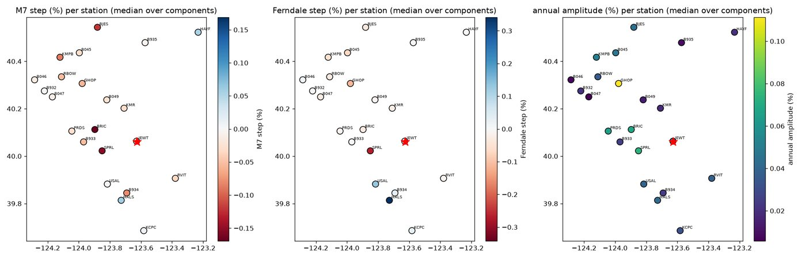<figcaption>M7 step, Ferndale step and annual amplitude per station (median over components); red star marks the LFE families. SPRL, USAL and HALS start after 2021, so their Petrolia and Ferndale steps cannot be separated.</figcaption></figure>
<div class="tbl"><table><tr><th>Station</th><th>Type</th><th>Distance (km)</th><th>Channels</th><th>Families</th><th>M7 step</th><th>M7 transient</th><th>Annual amp.</th><th>Fastest (day)</th></tr>
<tr><td>BK.BRIC</td><td>Surface</td><td>24</td><td>2</td><td>22</td><td><span class="val">-0.169 ± 0.024</span> <span class="z strong">-7.1σ</span></td><td><span class="val">-0.224 ± 0.058</span> <span class="z strong">-3.9σ</span></td><td>0.068</td><td>230</td></tr>
<tr><td>BK.SPRL</td><td>Surface</td><td>20</td><td>3</td><td>19</td><td><span class="val">-0.153 ± 0.051</span> <span class="z strong">-3.0σ</span></td><td><span class="val">-0.057 ± 0.094</span> <span class="z none">-0.6σ</span></td><td>0.073</td><td>228</td></tr>
<tr><td>BK.BJES</td><td>Surface</td><td>58</td><td>1</td><td>11</td><td><span class="val">-0.121 ± 0.072</span> <span class="z none">-1.7σ</span></td><td><span class="val">+0.238 ± 0.166</span> <span class="z none">+1.4σ</span></td><td>0.045</td><td>276</td></tr>
<tr><td>NC.KMPB</td><td>Surface</td><td>58</td><td>3</td><td>16</td><td><span class="val">-0.087 ± 0.035</span> <span class="z weak">-2.5σ</span></td><td><span class="val">-0.097 ± 0.107</span> <span class="z none">-0.9σ</span></td><td>0.051</td><td>260</td></tr>
<tr><td>PB.B934</td><td>Borehole</td><td>25</td><td>2</td><td>12</td><td><span class="val">-0.080 ± 0.037</span> <span class="z weak">-2.2σ</span></td><td><span class="val">+0.023 ± 0.132</span> <span class="z none">+0.2σ</span></td><td>0.025</td><td>271</td></tr>
<tr><td>BK.GHOP</td><td>Surface</td><td>41</td><td>3</td><td>24</td><td><span class="val">-0.056 ± 0.035</span> <span class="z none">-1.6σ</span></td><td><span class="val">-0.083 ± 0.072</span> <span class="z none">-1.2σ</span></td><td>0.111</td><td>241</td></tr>
<tr><td>PB.B933</td><td>Borehole</td><td>30</td><td>3</td><td>7</td><td><span class="val">-0.052 ± 0.052</span> <span class="z none">-1.0σ</span></td><td><span class="val">+0.042 ± 0.159</span> <span class="z none">+0.3σ</span></td><td>0.025</td><td>226</td></tr>
<tr><td>BK.RBOW</td><td>Surface</td><td>52</td><td>3</td><td>19</td><td><span class="val">-0.052 ± 0.033</span> <span class="z none">-1.6σ</span></td><td><span class="val">-0.150 ± 0.079</span> <span class="z none">-1.9σ</span></td><td>0.036</td><td>239</td></tr>
<tr><td>BK.RVIT</td><td>Surface</td><td>27</td><td>2</td><td>14</td><td><span class="val">-0.035 ± 0.058</span> <span class="z none">-0.6σ</span></td><td><span class="val">+0.060 ± 0.187</span> <span class="z none">+0.3σ</span></td><td>0.038</td><td>265</td></tr>
<tr><td>PB.B045</td><td>Borehole</td><td>53</td><td>3</td><td>21</td><td><span class="val">-0.030 ± 0.028</span> <span class="z none">-1.1σ</span></td><td><span class="val">-0.224 ± 0.087</span> <span class="z weak">-2.6σ</span></td><td>0.047</td><td>268</td></tr>
<tr><td>NC.KMR</td><td>Surface</td><td>18</td><td>3</td><td>21</td><td><span class="val">-0.030 ± 0.028</span> <span class="z none">-1.1σ</span></td><td><span class="val">-0.004 ± 0.085</span> <span class="z none">-0.1σ</span></td><td>0.019</td><td>249</td></tr>
<tr><td>BK.PRDS</td><td>Surface</td><td>36</td><td>3</td><td>19</td><td><span class="val">-0.027 ± 0.032</span> <span class="z none">-0.8σ</span></td><td><span class="val">-0.075 ± 0.082</span> <span class="z none">-0.9σ</span></td><td>0.064</td><td>261</td></tr>
<tr><td>PB.B049</td><td>Borehole</td><td>26</td><td>3</td><td>24</td><td><span class="val">-0.025 ± 0.014</span> <span class="z none">-1.8σ</span></td><td><span class="val">-0.028 ± 0.052</span> <span class="z none">-0.5σ</span></td><td>0.014</td><td>278</td></tr>
<tr><td>BK.JEWT</td><td>Surface</td><td>1</td><td>3</td><td>19</td><td><span class="val">-0.025 ± 0.051</span> <span class="z none">-0.5σ</span></td><td><span class="val">-0.094 ± 0.107</span> <span class="z none">-0.9σ</span></td><td>0.051</td><td>265</td></tr>
<tr><td>PB.B046</td><td>Borehole</td><td>64</td><td>3</td><td>21</td><td><span class="val">-0.014 ± 0.021</span> <span class="z none">-0.6σ</span></td><td><span class="val">-0.063 ± 0.085</span> <span class="z none">-0.7σ</span></td><td>0.008</td><td>262</td></tr>
<tr><td>PB.B047</td><td>Borehole</td><td>51</td><td>3</td><td>24</td><td><span class="val">-0.011 ± 0.019</span> <span class="z none">-0.6σ</span></td><td><span class="val">+0.003 ± 0.066</span> <span class="z none">+0.0σ</span></td><td>0.006</td><td>231</td></tr>
<tr><td>PB.B935</td><td>Borehole</td><td>47</td><td>2</td><td>12</td><td><span class="val">-0.005 ± 0.036</span> <span class="z none">-0.1σ</span></td><td><span class="val">+0.128 ± 0.126</span> <span class="z none">+1.0σ</span></td><td>0.009</td><td>253</td></tr>
<tr><td>PB.B932</td><td>Borehole</td><td>56</td><td>3</td><td>20</td><td><span class="val">-0.002 ± 0.024</span> <span class="z none">-0.1σ</span></td><td><span class="val">-0.135 ± 0.087</span> <span class="z none">-1.6σ</span></td><td>0.021</td><td>265</td></tr>
<tr><td>BK.USAL</td><td>Surface</td><td>26</td><td>2</td><td>13</td><td><span class="val">+0.004 ± 0.072</span> <span class="z none">+0.1σ</span></td><td><span class="val">-0.156 ± 0.135</span> <span class="z none">-1.2σ</span></td><td>0.040</td><td>270</td></tr>
<tr><td>NC.KCPC</td><td>Surface</td><td>42</td><td>3</td><td>8</td><td><span class="val">+0.010 ± 0.073</span> <span class="z none">+0.1σ</span></td><td><span class="val">-0.097 ± 0.133</span> <span class="z none">-0.7σ</span></td><td>0.033</td><td>226</td></tr>
<tr><td>BK.HAYF</td><td>Surface</td><td>61</td><td>2</td><td>10</td><td><span class="val">+0.054 ± 0.062</span> <span class="z none">+0.9σ</span></td><td><span class="val">-0.038 ± 0.131</span> <span class="z none">-0.3σ</span></td><td>0.020</td><td>302</td></tr>
<tr><td>BK.HALS</td><td>Surface</td><td>29</td><td>3</td><td>14</td><td><span class="val">+0.058 ± 0.061</span> <span class="z none">+1.0σ</span></td><td><span class="val">-0.137 ± 0.121</span> <span class="z none">-1.1σ</span></td><td>0.042</td><td>259</td></tr>
</table></div>
<figure>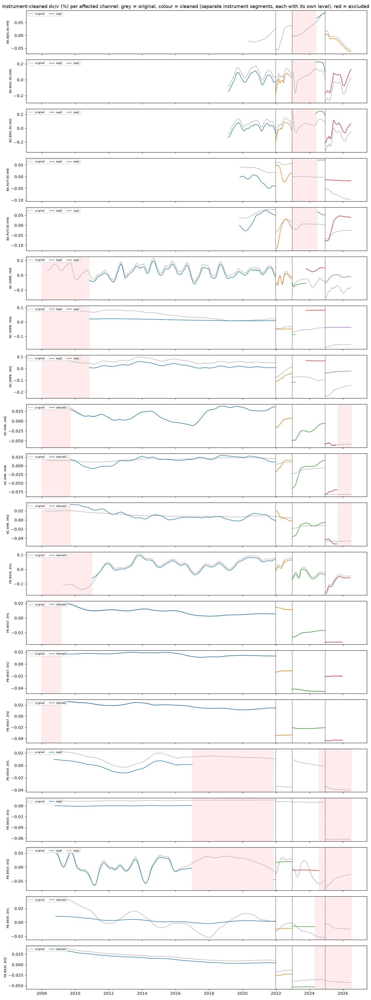<figcaption>Instrument-cleaned curves for the channels with instrument problems found by the shear-wave-splitting analysis (grey: original; colour: cleaned). Excluded windows are shaded red; at sensor reinstalls (B933, BRIC, RVIT, BJES, KMPB maintenance) each instrument segment is inverted separately with its own level, so reinstall jumps cannot appear as velocity changes. The table and map above use the original curves; for these stations use the cleaned values (data/dvv/pool_clean/).</figcaption></figure>
<figure>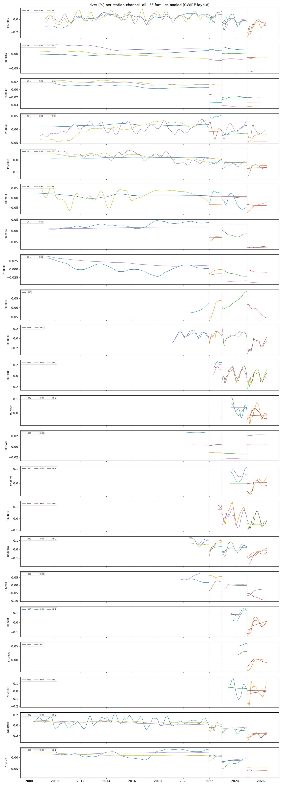<figcaption>dv/v curves per station-channel (all families pooled); dashed lines mark the three quakes.</figcaption></figure>
<figure>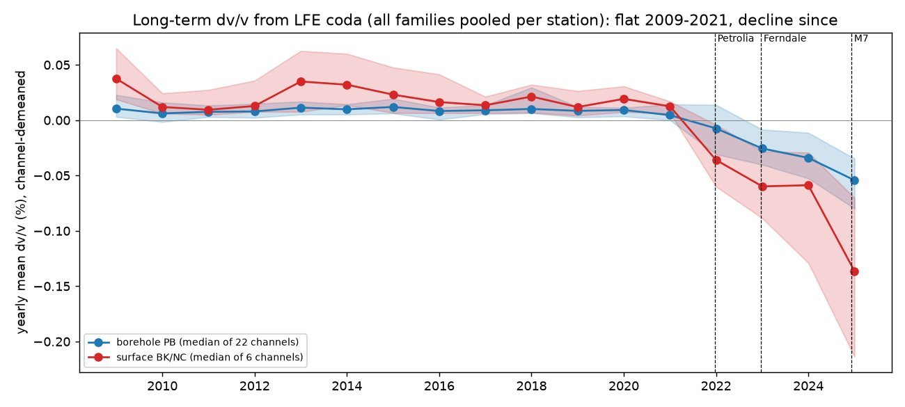<figcaption>Yearly-mean dv/v (seasonal cycle averaged out), median and interquartile range over channels.</figcaption></figure>
<figure>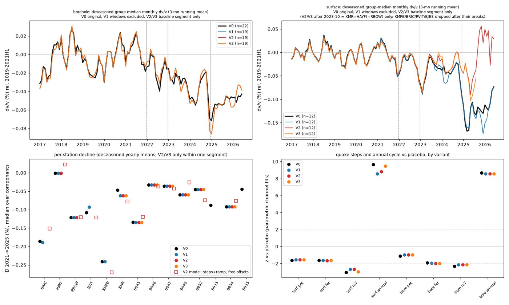<figcaption>dv/v claims re-run with the instrument-problem windows excluded and with free offsets at sensor reinstalls: the decline, its onset after mid-2021, the M7 surface step and the annual cycle survive; the surface/borehole contrast shrinks to 1.2-1.5x.</figcaption></figure>
<figure>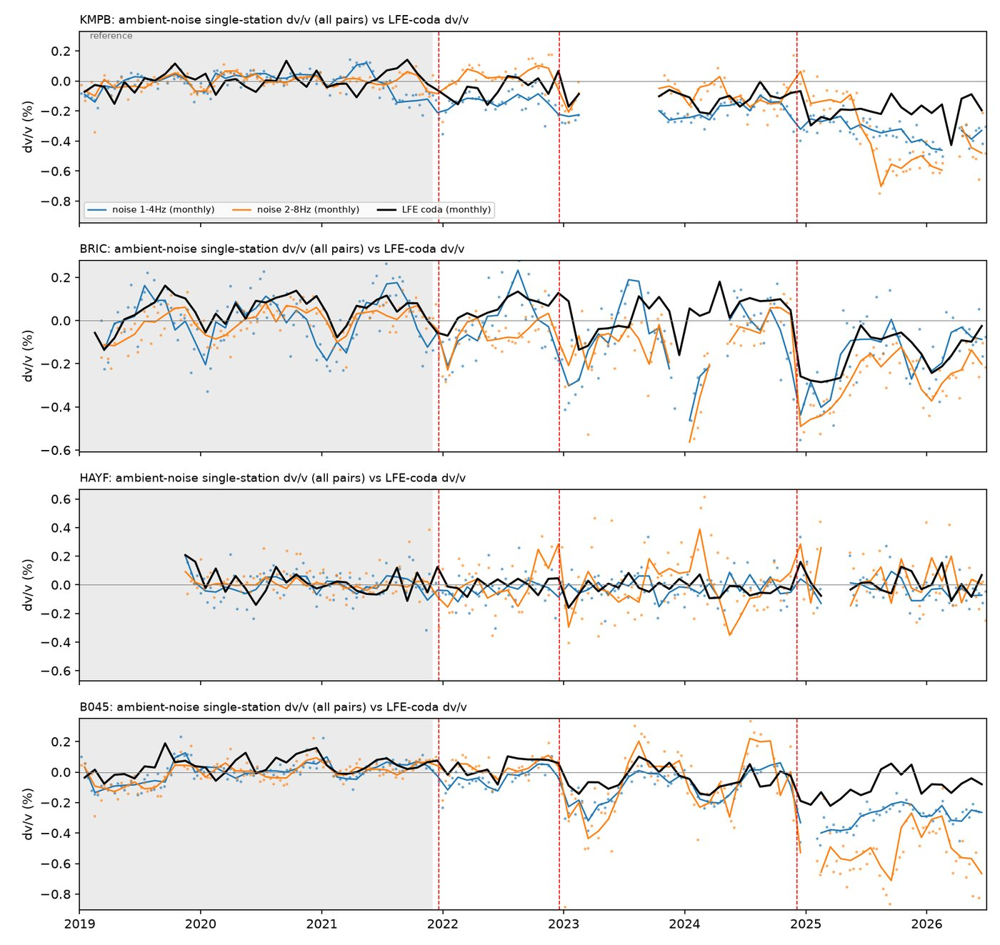<figcaption>Ambient-noise single-station dv/v (1–4 and 2–8 Hz, 2019–2026) at KMPB, BRIC, B045 and HAYF, compared with the LFE-coda curves; dashed lines mark the three quakes.</figcaption></figure>
<figure>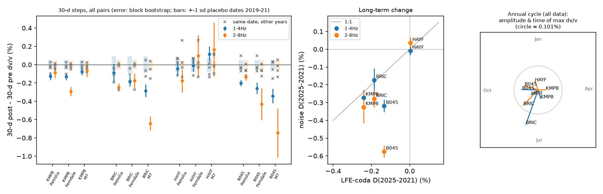<figcaption>Ambient-noise dv/v steps at Petrolia, Ferndale and the M7, per station and pair type, against the placebo spread.</figcaption></figure>
<figure>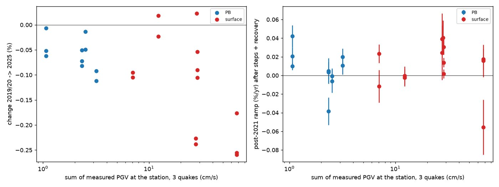<figcaption>Per station: total dv/v change from 2019–20 to 2025 vs the summed measured PGV of the three quakes (left); residual post-2021 ramp after steps and recovery terms (right).</figcaption></figure>
</section>
<section><h2>Patch physics and fault response</h2><p class="lede">Every event was relocated twice with two disjoint, azimuth-interleaved halves of the stations. Their errors are independent, so the covariance of the two locations measures the real extent of the source patch and half the variance of their difference measures the error. A patch counts as resolved when its long axis exceeds the 95th percentile of a shuffled-pairing null.</p>
<div class="findings">
<div class="finding"><span class="eyebrow">Patch size</span><h3>11 of 27 patches resolved, ~560 × 350 m</h3>
<p>Median 5–95% length 563 m and width 347 m (range 425–823 m).
Pooling the resolved patches, the long axis is near-horizontal at azimuth 102 deg (68%: 74–110) and the patches lie in a plane striking
286 deg and dipping 58 deg NNE (68%: 28–73 deg), consistent with Shelly's 293/40 deg NE fault. Smaller than Cascadia patches
(1–2 km; Sweet et al. 2014, Chestler &amp; Creager 2017).</p></div>
<div class="finding"><span class="eyebrow">Fault geometry</span><h3>The 27 families define a plane dipping ~45 deg NNE</h3>
<p>A plane through our 3D family locations dips 45 deg (68%: 38–52) toward 28 deg; through Shelly's locations, 46 deg toward 24 deg.
Two independent location sets and the within-patch shapes all agree on the NE-dipping strike-slip fault of Shelly et al. (2025, 2026).</p></div>
<div class="finding"><span class="eyebrow">Shelly &amp; Materna test</span><h3>M7 cessation time does not track patch size or pre-quake state</h3>
<p>Shelly &amp; Materna suggest the 7–25-day spread in cessation time may reflect patch size or proximity to failure. Across the 11 resolved
families, the gap after the M7 shows no correlation with patch length or area (Spearman p &gt; 0.4), with or without normalising by each
family's rate. Across all families, the time to the first post-M7 LFE does not correlate with patch length (ρ +0.14), area (+0.26), time since
the last pre-M7 LFE (+0.25), the 30-day pre-M7 rate (−0.29), longitude (+0.04) or depth (+0.17); all p &gt; 0.1. The time to the 10th event
simply follows each family's background rate. The size range is narrow (less than 2×), so the size test is weak.</p></div>
<div class="finding"><span class="eyebrow">Spatial memory</span><h3>Bursts re-rupture one sub-region</h3>
<p>LFEs less than a minute apart occur at the same spot (memory +0.16 ± 0.06). Events more than a day apart show no memory, and there
is no clear sign that the next event avoids the spot that just slipped. The mean squared separation between events is flat from 1 day
to 10 years, so each patch is fully sampled within minutes at 100–200 m precision.</p></div>
<div class="finding"><span class="eyebrow">Restart after the M7</span><h3>No resolvable change in where patches restarted</h3>
<p>The first 20 events after the silence sit +26 ± 11 m down-dip of each family's long-term centroid (15 of 24 families; sign test p = 0.31),
with no along-strike offset. Later tests do not confirm this: the first-60-day centroids of families 23, 8 and 27 are within the placebo
spread, and before/after density maps and deconvolved images show no family-specific shift beyond chance. Restart events are not larger once only
complete (above-threshold) events are used, so there is no sign of fault healing during the hold.</p></div>
<div class="finding"><span class="eyebrow">Moment budget</span><h3>The M7 deficit was repaid within ~60–90 days; no healing</h3>
<p>Relative moments from matched-filter S amplitudes on the 15 long-running stations (complete events only): the ~16 days of
missing moment during the silence were made up by a 1.48× moment rate in the first 30 days after restart, bringing the cumulative
moment back to the pre-M7 trend (offset +0.6%, 95% −17 to +21%, at 90 days). Petrolia, with no silence, also raised the rate (1.32×),
so this may be a triggered response rather than a repaid deficit. Healing with hold time is at most ~3.5% per decade.
Assuming a median LFE of Mw 1.5, patch slip rates are ~2–3 cm/yr, comparable to plate rates (uncertain by ~5×). LFE sizes did not change
at the M7 (characteristic amplitude 1.02×, 95% 0.96–1.09). Event counts overshoot by only 1.11× in the first 30 days, so the extra moment is
mostly not in event numbers.</p></div>
<div class="finding"><span class="eyebrow">Recovery model</span><h3>An abrupt switch-on at ~18 days, not diffusion</h3>
<p>Per-family fits of the post-M7 rate (rate-and-state negative step, on/off box, slab diffusion, half-space diffusion; compared by
overdispersion-corrected AIC): half-recovery at a median 18 d (9–30 d); the step and box models tie; half-space diffusion is worse in all
27 families because its slow tail is not seen. Recovery time has no relation to along-strike position, depth or distance (|ρ| ≤ 0.18), and
the restart was as synchronous as ordinary quiet gaps (placebo p = 0.69). At fault-zone diffusivities (0.001–1 m²/s) fluids move only
0.08–2.5 km in 18 d. The silence length matches rate-and-state with ~3.5 kPa of effective clamping and loading of ~71 kPa/yr (41–93),
consistent with zone-scale loading; family 23 alone gives aσ ≈ 0.5 kPa (0.08–1.6), compatible with the tides.</p></div>
<div class="finding"><span class="eyebrow">Why only the M7</span><h3>It was the only quake that lowered pore pressure at the LFEs</h3>
<p>Static stresses from Okada dislocations for 12 quake dates: Coulomb stress and clamping do not single out the M7 (Ferndale was
larger on both). The undrained pore-pressure change does, in every model variant: the M7 put the LFE zone in its dilatational
quadrant (−2.3 kPa), while Ferndale and the Gorda-slab quakes raised pore pressure. One positive case among 12, so this supports
Shelly &amp; Materna (2026) rather than proving a threshold. Measured shaking (PGV) ranks the rate drops better but has no clean threshold,
and Petrolia (small pore-pressure drop, rate up) breaks a simple dose-response. Across families within the M7, modelled stress does not
explain the cessation times (its range is smaller than the model uncertainty).</p></div>
<div class="finding"><span class="eyebrow">Tides and seasons</span><h3>Tidal sensitivity unchanged by the M7; an annual LFE-rate cycle</h3>
<p>The M2 tide modulates LFE rate by ±28% (20 of 27 families), with a linear response across constituents, and this did not change
at any quake (M7 after/before 0.85, 95% 0.47–1.44): a drop of more than ~55% is excluded. With ~3.5 kPa of extra effective clamping
from the M7, that implies an effective normal stress of at least ~6 kPa (rough). LFE rate also varies by ~5–7% over the year
(7.2 ± 0.9% in the main fit, 4.6% in a simpler independent check; 21 of 27 families significant; consistent phase over 17 years),
peaking in late August to mid-September, in phase with the fastest dv/v rather than opposite to it. A detection-threshold cycle (1.1%) cannot
produce it; a shared hydrological driver is speculative.</p></div>
<div class="finding"><span class="eyebrow">Cascades</span><h3>Bursts sweep the array from both ends at ~80–100 km/day</h3>
<p>31% of 4,117 network episodes show significant spatial ordering of burst onsets
(time-shuffled catalogs: 4%). End-of-array families lead 2–3× more often than chance
(correlation with distance from the array centre r = 0.81); delay grows linearly with distance
(~0.3 h/km), fitting a front better than diffusion. The shallow and deep families start together. In a constant-completeness
catalog (mean CC ≥ 0.13, from 2009) 55% of 2,618 episodes propagate (median 91 km/day) with no trend through time; the rise in the full
catalog is a station artefact. Pairwise triggering gain is ~9× at 10 minutes, decays with distance, is stronger along strike than across,
and did not change after the M7 (p = 0.85).</p></div>
</div>
<figure>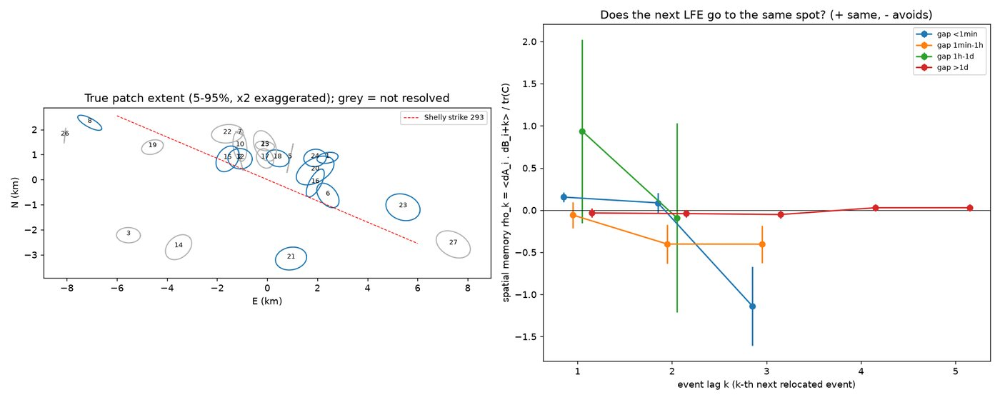<figcaption>Left: true patch extent per family (5–95%, drawn 2× larger; blue = resolved). Right: spatial memory between an LFE and the k-th next one, by time gap.</figcaption></figure>
<figure>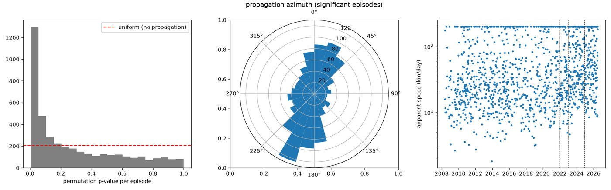<figcaption>Burst cascades: per-episode permutation p-values (uniform = no propagation), propagation azimuths, apparent speeds through time.</figcaption></figure>
<figure>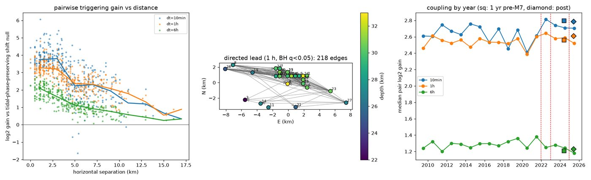<figcaption>Inter-family coupling. Left: pairwise triggering gain (log2, relative to a null of circular shifts by whole M2 cycles) vs separation at 10 min, 1 h and 6 h. Centre: significant directed lead relations at 1 h on the family map, coloured by depth. Right: median coupling by year; squares and diamonds are the year before and after the M7 (no change).</figcaption></figure>
<figure><figcaption>Dose-response for 12 quake dates (13 M&gt;=5.5 within 200 km; the two 2021-12-20 events merged). Rows: all-family 30-day rate ratio, number of families with a top-10 gap, median gap relative to the expected interval. Columns: modelled drivers at the LFE fault (Coulomb stress, shear, normal stress, undrained pore pressure, effective normal stress, octahedral shear, PGV). Red = M7, orange = Ferndale, green = Petrolia; bars = model-variant range. Only the pore-pressure drop sets the M7 apart.</figcaption></figure>
<figure>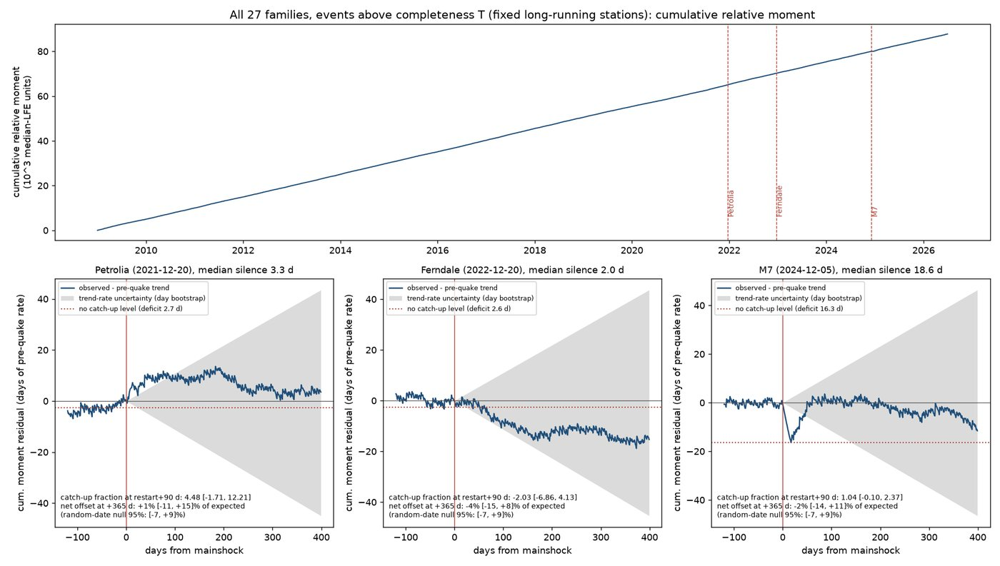<figcaption>Moment budget. Top: cumulative relative moment of all 27 families (events above completeness, fixed long-running stations). Bottom: residual from the pre-quake trend in days of pre-quake rate for Petrolia, Ferndale and the M7; dotted = level if the deficit were never repaid, grey = trend uncertainty. The M7 deficit (16.3 days) is made up within ~60-90 days.</figcaption></figure>
<figure>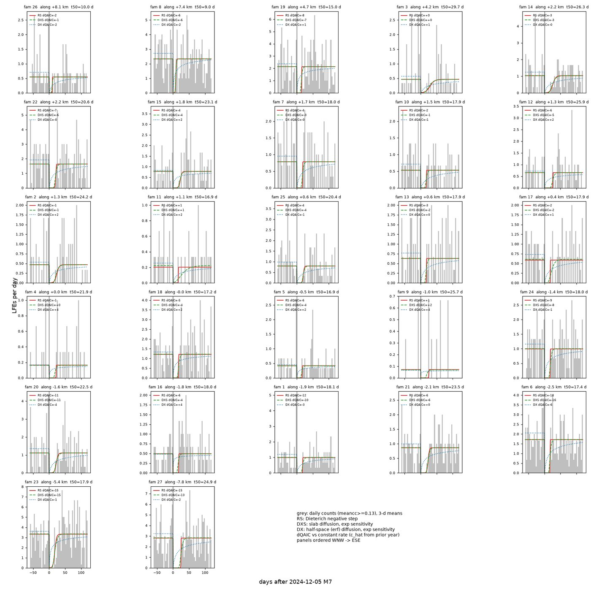<figcaption>Post-M7 recovery per family (panels ordered WNW to ESE; title gives along-strike position and half-recovery time t50). Grey: daily counts (3-day means); red: rate-and-state negative step; green dashed: slab diffusion; blue dotted: half-space diffusion. dQAIC is relative to a constant rate.</figcaption></figure>
<figure>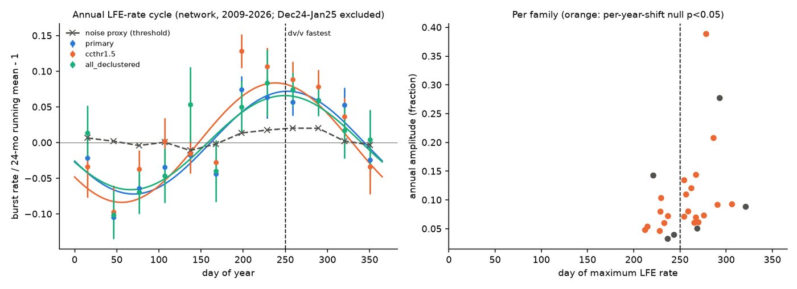<figcaption>Annual LFE-rate cycle (network, 2009-2026, M7 silence excluded). Left: monthly rate relative to a 24-month running mean for three event selections with sinusoid fits; dashed grey = detection-threshold proxy; vertical line = day of fastest dv/v. Right: per-family amplitude vs day of maximum (orange = significant).</figcaption></figure>
<figure><figcaption>Dynamic triggering by teleseismic surface waves. Left: observed/expected LFE burst onsets in the first hour vs dynamic stress measured at a local broadband (grey = 95% matched-control null; red = step fit, threshold 0.63 kPa, pink band = its 68% range; green = power law; orange and purple = rate-and-state predictions). Centre: excess probability of at least one onset in the hour. Right: stress scales at the LFEs; the a-sigma bar is the earlier ~0.5 kPa estimate (0.63 kPa with the converged ocean load).</figcaption></figure>
<div class="tbl"><table><tr><th>Family</th><th>Events (both halves)</th><th>Length (m)</th><th>Width (m)</th><th>Null 95% (m)</th><th>Long-axis azimuth</th><th>Std along strike (m)</th><th>Std down-dip (m)</th><th>Std normal (m)</th><th>Error horiz. (m)</th><th>Error vert. (m)</th><th>Resolved</th></tr>
<tr><td>1</td><td>304</td><td>425</td><td>212</td><td>352</td><td>80</td><td>111</td><td>78</td><td>0</td><td>170</td><td>395</td><td>yes</td></tr>
<tr><td>2</td><td>90</td><td>475</td><td>0</td><td>928</td><td>166</td><td>0</td><td>91</td><td>0</td><td>288</td><td>688</td><td>no</td></tr>
<tr><td>3</td><td>57</td><td>477</td><td>306</td><td>708</td><td>92</td><td>103</td><td>0</td><td>0</td><td>289</td><td>541</td><td>no</td></tr>
<tr><td>5</td><td>64</td><td>582</td><td>0</td><td>909</td><td>12</td><td>0</td><td>0</td><td>0</td><td>227</td><td>762</td><td>no</td></tr>
<tr><td>6</td><td>497</td><td>563</td><td>347</td><td>476</td><td>141</td><td>111</td><td>145</td><td>103</td><td>184</td><td>620</td><td>yes</td></tr>
<tr><td>7</td><td>154</td><td>182</td><td>0</td><td>573</td><td>113</td><td>54</td><td>0</td><td>0</td><td>225</td><td>483</td><td>no</td></tr>
<tr><td>8</td><td>1045</td><td>538</td><td>176</td><td>353</td><td>119</td><td>160</td><td>0</td><td>0</td><td>185</td><td>554</td><td>yes</td></tr>
<tr><td>10</td><td>171</td><td>603</td><td>271</td><td>623</td><td>173</td><td>95</td><td>152</td><td>0</td><td>299</td><td>488</td><td>no</td></tr>
<tr><td>12</td><td>190</td><td>486</td><td>406</td><td>481</td><td>94</td><td>139</td><td>47</td><td>111</td><td>211</td><td>466</td><td>yes</td></tr>
<tr><td>13</td><td>175</td><td>384</td><td>186</td><td>461</td><td>98</td><td>81</td><td>60</td><td>20</td><td>191</td><td>486</td><td>no</td></tr>
<tr><td>14</td><td>140</td><td>589</td><td>421</td><td>697</td><td>49</td><td>119</td><td>167</td><td>0</td><td>288</td><td>613</td><td>no</td></tr>
<tr><td>15</td><td>155</td><td>563</td><td>400</td><td>521</td><td>36</td><td>121</td><td>159</td><td>52</td><td>191</td><td>372</td><td>yes</td></tr>
<tr><td>16</td><td>212</td><td>619</td><td>237</td><td>618</td><td>28</td><td>34</td><td>186</td><td>0</td><td>214</td><td>513</td><td>yes</td></tr>
<tr><td>17</td><td>198</td><td>405</td><td>323</td><td>527</td><td>151</td><td>103</td><td>108</td><td>0</td><td>194</td><td>497</td><td>no</td></tr>
<tr><td>18</td><td>531</td><td>465</td><td>323</td><td>337</td><td>107</td><td>141</td><td>97</td><td>44</td><td>173</td><td>382</td><td>yes</td></tr>
<tr><td>19</td><td>532</td><td>444</td><td>277</td><td>500</td><td>74</td><td>103</td><td>93</td><td>0</td><td>293</td><td>504</td><td>no</td></tr>
<tr><td>20</td><td>378</td><td>823</td><td>470</td><td>531</td><td>61</td><td>139</td><td>212</td><td>148</td><td>215</td><td>471</td><td>yes</td></tr>
<tr><td>21</td><td>121</td><td>628</td><td>450</td><td>619</td><td>79</td><td>148</td><td>132</td><td>114</td><td>241</td><td>541</td><td>yes</td></tr>
<tr><td>22</td><td>243</td><td>633</td><td>367</td><td>642</td><td>85</td><td>160</td><td>136</td><td>0</td><td>299</td><td>694</td><td>no</td></tr>
<tr><td>23</td><td>669</td><td>699</td><td>514</td><td>434</td><td>108</td><td>211</td><td>97</td><td>151</td><td>208</td><td>458</td><td>yes</td></tr>
<tr><td>24</td><td>349</td><td>450</td><td>346</td><td>346</td><td>83</td><td>122</td><td>98</td><td>101</td><td>167</td><td>334</td><td>yes</td></tr>
<tr><td>25</td><td>168</td><td>646</td><td>405</td><td>651</td><td>154</td><td>132</td><td>80</td><td>175</td><td>229</td><td>540</td><td>no</td></tr>
<tr><td>26</td><td>83</td><td>293</td><td>0</td><td>829</td><td>7</td><td>0</td><td>84</td><td>0</td><td>329</td><td>549</td><td>no</td></tr>
<tr><td>27</td><td>187</td><td>730</td><td>476</td><td>786</td><td>118</td><td>197</td><td>154</td><td>0</td><td>250</td><td>674</td><td>no</td></tr>
</table></div></section>
<section><h2>Where the families are</h2>
<figure>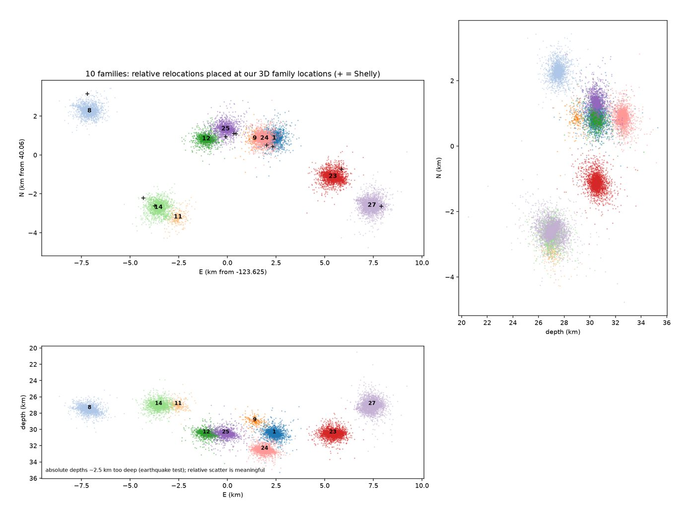<figcaption>Relative relocations of each family placed at its 3D location (+ = Shelly). Map view, E–W section and N–S section. Absolute depths are ~2.5 km too deep. The ~1 km raw cloud size is mostly single-event location error; the true patches, measured with independent station halves, are ~0.5–0.7 km along strike.</figcaption></figure>
<figure><figcaption>All families with sharpened (deconvolved) patch images at their 3D locations: (a) map, (b) view onto the 293°/40° fault plane, (c) zoom on the central cluster, (d) cross-section along the dip direction. Slab interfaces: McCrory et al. (2012; black), Slab2 (2018; red dashed) and the receiver-function model of Bloch, Bostock &amp; Audet (2023; blue: top of the low-velocity layer t at ~19-21 km and slab Moho m at ~30 km). In the 2023 model all 27 families lie between t and m (3-8 km below t, 1.5-7 km above m); the McCrory interface coincides with the Bloch slab Moho here. Contours at 20/50/80% of peak; resolution ~110 m along strike, ~90 m down dip; * = flatter than Gaussian.</figcaption></figure>
<figure>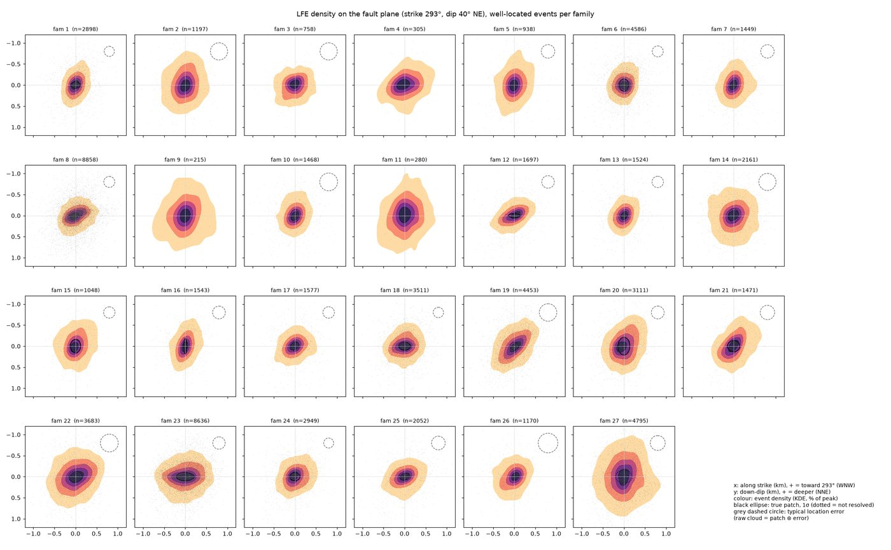<figcaption>LFE density on the fault plane per family (strike 293°, dip 40° NE; + along strike = WNW, + down-dip = deeper). Black ellipse = true patch (1σ, split-station A×B; dotted = not resolved); grey circle = typical location error. Every family is a single compact peak; the raw density is the true patch blurred by location error, and the diagonal elongation of several clouds follows the error, not the patch.</figcaption></figure>
<figure>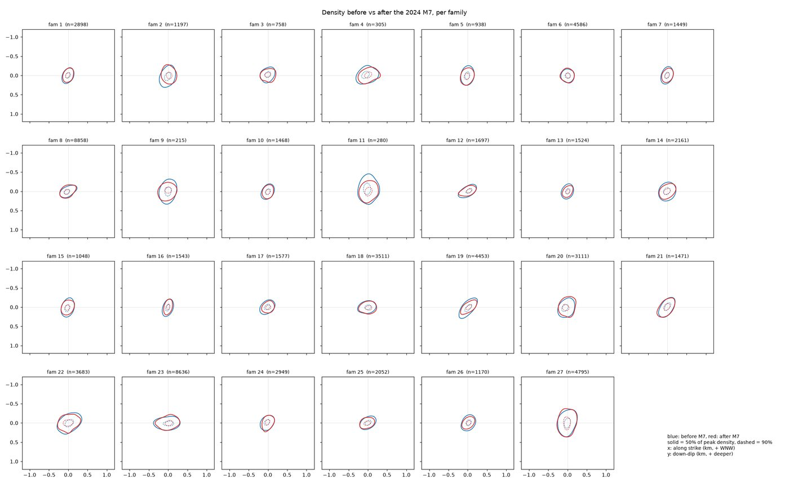<figcaption>Density before (blue) and after (red) the 2024 M7: contours at 50% and 90% of peak. Patch shape and size are unchanged; the small common shift of the centroids is the network-change artefact found earlier.</figcaption></figure>
</section>
<section><h2>All families at a glance</h2><p class="lede">Select a family number to jump to its report.</p><div class="tbl"><table><tr><th>Family</th><th>Events</th><th>Depth (km)</th><th>Offset from Shelly (km)</th><th>M7 gap (d)</th><th>Gap rank</th><th>30-day ratio after M7</th><th>dv/v channels</th><th>dv/v M7 step</th><th>dv/v M7 transient</th><th>Annual amp.</th></tr>
<tr><td><a href="#fam-1">1</a></td><td>7,457</td><td>30.5</td><td>0.45</td><td>19.0</td><td>1</td><td>0.34</td><td>62</td><td><span class="val">-0.040 ± 0.017</span> <span class="z weak">-2.4σ</span></td><td><span class="val">-0.061 ± 0.085</span> <span class="z none">-0.7σ</span></td><td>0.025</td></tr>
<tr><td><a href="#fam-2">2</a></td><td>4,837</td><td>29.0</td><td>0.50</td><td>13.8</td><td>5</td><td>0.39</td><td>35</td><td><span class="val">-0.089 ± 0.030</span> <span class="z weak">-2.9σ</span></td><td><span class="val">-0.421 ± 0.647</span> <span class="z none">-0.6σ</span></td><td>0.037</td></tr>
<tr><td><a href="#fam-3">3</a></td><td>2,526</td><td>22.0</td><td>0.68</td><td>20.4</td><td>18</td><td>0.30</td><td>30</td><td><span class="val">-0.060 ± 0.029</span> <span class="z weak">-2.0σ</span></td><td><span class="val">-0.202 ± 0.478</span> <span class="z none">-0.4σ</span></td><td>0.046</td></tr>
<tr><td><a href="#fam-4">4</a></td><td>3,023</td><td>33.0</td><td>1.43</td><td>25.0</td><td>1</td><td>0.62</td><td>17</td><td><span class="val">+0.031 ± 0.073</span> <span class="z none">+0.4σ</span></td><td><span class="val">+0.227 ± 4.662</span> <span class="z none">+0.0σ</span></td><td>0.028</td></tr>
<tr><td><a href="#fam-5">5</a></td><td>4,188</td><td>29.0</td><td>1.85</td><td>18.0</td><td>1</td><td>0.70</td><td>21</td><td><span class="val">+0.056 ± 0.045</span> <span class="z none">+1.2σ</span></td><td><span class="val">-0.380 ± 0.533</span> <span class="z none">-0.7σ</span></td><td>0.023</td></tr>
<tr><td><a href="#fam-6">6</a></td><td>11,039</td><td>30.5</td><td>1.02</td><td>18.0</td><td>1</td><td>0.60</td><td>65</td><td><span class="val">-0.037 ± 0.013</span> <span class="z weak">-2.8σ</span></td><td><span class="val">-0.108 ± 0.071</span> <span class="z none">-1.5σ</span></td><td>0.032</td></tr>
<tr><td><a href="#fam-7">7</a></td><td>5,233</td><td>29.5</td><td>0.96</td><td>21.0</td><td>1</td><td>0.66</td><td>37</td><td><span class="val">-0.027 ± 0.035</span> <span class="z none">-0.8σ</span></td><td><span class="val">-0.117 ± 0.425</span> <span class="z none">-0.3σ</span></td><td>0.033</td></tr>
<tr><td><a href="#fam-8">8</a></td><td>20,979</td><td>27.5</td><td>0.88</td><td>10.0</td><td>1</td><td>0.58</td><td>47</td><td><span class="val">-0.040 ± 0.015</span> <span class="z weak">-2.7σ</span></td><td><span class="val">-0.047 ± 0.048</span> <span class="z none">-1.0σ</span></td><td>0.032</td></tr>
<tr><td><a href="#fam-9">9</a></td><td>2,211</td><td>29.0</td><td>1.11</td><td>33.1</td><td>3</td><td>0.54</td><td>1</td><td colspan="3" class="na">too few clean channels</td></tr>
<tr><td><a href="#fam-10">10</a></td><td>4,801</td><td>31.0</td><td>0.94</td><td>21.0</td><td>1</td><td>0.45</td><td>46</td><td><span class="val">-0.025 ± 0.033</span> <span class="z none">-0.8σ</span></td><td><span class="val">-0.076 ± 6.767</span> <span class="z none">-0.0σ</span></td><td>0.022</td></tr>
<tr><td><a href="#fam-11">11</a></td><td>2,011</td><td>27.0</td><td>2.04</td><td>6.9</td><td>280</td><td>0.27</td><td>8</td><td><span class="val">-0.229 ± 0.157</span> <span class="z none">-1.5σ</span></td><td><span class="val">-0.692 ± 16.162</span> <span class="z none">-0.0σ</span></td><td>0.058</td></tr>
<tr><td><a href="#fam-12">12</a></td><td>6,413</td><td>30.5</td><td>1.00</td><td>27.1</td><td>1</td><td>0.30</td><td>48</td><td><span class="val">-0.021 ± 0.022</span> <span class="z none">-0.9σ</span></td><td><span class="val">-0.038 ± 0.145</span> <span class="z none">-0.3σ</span></td><td>0.037</td></tr>
<tr><td><a href="#fam-13">13</a></td><td>4,445</td><td>30.0</td><td>0.32</td><td>21.0</td><td>1</td><td>0.59</td><td>45</td><td><span class="val">-0.041 ± 0.025</span> <span class="z none">-1.6σ</span></td><td><span class="val">-0.352 ± 0.808</span> <span class="z none">-0.4σ</span></td><td>0.030</td></tr>
<tr><td><a href="#fam-14">14</a></td><td>7,102</td><td>27.0</td><td>0.21</td><td>20.0</td><td>1</td><td>0.33</td><td>39</td><td><span class="val">-0.069 ± 0.027</span> <span class="z weak">-2.6σ</span></td><td><span class="val">-0.059 ± 0.115</span> <span class="z none">-0.5σ</span></td><td>0.045</td></tr>
<tr><td><a href="#fam-15">15</a></td><td>5,712</td><td>28.5</td><td>0.97</td><td>21.0</td><td>1</td><td>0.39</td><td>36</td><td><span class="val">-0.041 ± 0.034</span> <span class="z none">-1.2σ</span></td><td><span class="val">-0.169 ± 0.250</span> <span class="z none">-0.7σ</span></td><td>0.027</td></tr>
<tr><td><a href="#fam-16">16</a></td><td>4,382</td><td>30.0</td><td>0.63</td><td>20.3</td><td>1</td><td>0.74</td><td>46</td><td><span class="val">-0.027 ± 0.031</span> <span class="z none">-0.9σ</span></td><td><span class="val">-0.184 ± 3.722</span> <span class="z none">-0.0σ</span></td><td>0.034</td></tr>
<tr><td><a href="#fam-17">17</a></td><td>4,872</td><td>29.5</td><td>0.57</td><td>21.0</td><td>1</td><td>0.43</td><td>39</td><td><span class="val">-0.049 ± 0.026</span> <span class="z none">-1.9σ</span></td><td><span class="val">-0.060 ± 4.149</span> <span class="z none">-0.0σ</span></td><td>0.034</td></tr>
<tr><td><a href="#fam-18">18</a></td><td>9,213</td><td>31.5</td><td>0.81</td><td>20.0</td><td>1</td><td>0.58</td><td>58</td><td><span class="val">-0.017 ± 0.021</span> <span class="z none">-0.8σ</span></td><td><span class="val">-0.087 ± 0.095</span> <span class="z none">-0.9σ</span></td><td>0.011</td></tr>
<tr><td><a href="#fam-19">19</a></td><td>13,552</td><td>26.5</td><td>0.67</td><td>16.8</td><td>1</td><td>0.56</td><td>41</td><td><span class="val">-0.041 ± 0.015</span> <span class="z weak">-2.7σ</span></td><td><span class="val">-0.120 ± 0.040</span> <span class="z strong">-3.0σ</span></td><td>0.040</td></tr>
<tr><td><a href="#fam-20">20</a></td><td>7,474</td><td>30.5</td><td>0.15</td><td>19.0</td><td>1</td><td>0.44</td><td>52</td><td><span class="val">-0.055 ± 0.025</span> <span class="z weak">-2.2σ</span></td><td><span class="val">-0.103 ± 0.177</span> <span class="z none">-0.6σ</span></td><td>0.028</td></tr>
<tr><td><a href="#fam-21">21</a></td><td>7,479</td><td>25.5</td><td>0.76</td><td>18.3</td><td>1</td><td>0.36</td><td>48</td><td><span class="val">-0.043 ± 0.021</span> <span class="z weak">-2.0σ</span></td><td><span class="val">-0.060 ± 0.989</span> <span class="z none">-0.1σ</span></td><td>0.043</td></tr>
<tr><td><a href="#fam-22">22</a></td><td>10,867</td><td>30.0</td><td>0.33</td><td>21.1</td><td>1</td><td>0.53</td><td>36</td><td><span class="val">-0.046 ± 0.019</span> <span class="z weak">-2.4σ</span></td><td><span class="val">-0.129 ± 0.074</span> <span class="z none">-1.7σ</span></td><td>0.029</td></tr>
<tr><td><a href="#fam-23">23</a></td><td>24,718</td><td>30.5</td><td>0.59</td><td>11.0</td><td>1</td><td>0.49</td><td>38</td><td><span class="val">-0.053 ± 0.017</span> <span class="z strong">-3.1σ</span></td><td><span class="val">-0.152 ± 0.042</span> <span class="z strong">-3.6σ</span></td><td>0.040</td></tr>
<tr><td><a href="#fam-24">24</a></td><td>7,210</td><td>32.5</td><td>0.37</td><td>19.0</td><td>1</td><td>0.62</td><td>56</td><td><span class="val">-0.047 ± 0.026</span> <span class="z none">-1.9σ</span></td><td><span class="val">-0.159 ± 0.144</span> <span class="z none">-1.1σ</span></td><td>0.024</td></tr>
<tr><td><a href="#fam-25">25</a></td><td>6,635</td><td>30.5</td><td>0.59</td><td>21.0</td><td>1</td><td>0.30</td><td>39</td><td><span class="val">-0.075 ± 0.036</span> <span class="z weak">-2.1σ</span></td><td><span class="val">-0.003 ± 0.348</span> <span class="z none">-0.0σ</span></td><td>0.016</td></tr>
<tr><td><a href="#fam-26">26</a></td><td>4,363</td><td>25.0</td><td>0.75</td><td>11.9</td><td>18</td><td>0.36</td><td>34</td><td><span class="val">+0.025 ± 0.031</span> <span class="z none">+0.8σ</span></td><td><span class="val">-0.041 ± 0.128</span> <span class="z none">-0.3σ</span></td><td>0.032</td></tr>
<tr><td><a href="#fam-27">27</a></td><td>24,968</td><td>27.0</td><td>0.48</td><td>26.0</td><td>1</td><td>0.22</td><td>46</td><td><span class="val">-0.045 ± 0.009</span> <span class="z strong">-4.7σ</span></td><td><span class="val">-0.204 ± 0.035</span> <span class="z strong">-5.8σ</span></td><td>0.029</td></tr>
</table></div></section>
<section><h2>Family reports</h2><nav class="famnav" aria-label="Families"><a href="#fam-1">1</a><a href="#fam-2">2</a><a href="#fam-3">3</a><a href="#fam-4">4</a><a href="#fam-5">5</a><a href="#fam-6">6</a><a href="#fam-7">7</a><a href="#fam-8">8</a><a href="#fam-9">9</a><a href="#fam-10">10</a><a href="#fam-11">11</a><a href="#fam-12">12</a><a href="#fam-13">13</a><a href="#fam-14">14</a><a href="#fam-15">15</a><a href="#fam-16">16</a><a href="#fam-17">17</a><a href="#fam-18">18</a><a href="#fam-19">19</a><a href="#fam-20">20</a><a href="#fam-21">21</a><a href="#fam-22">22</a><a href="#fam-23">23</a><a href="#fam-24">24</a><a href="#fam-25">25</a><a href="#fam-26">26</a><a href="#fam-27">27</a></nav>
<article class="fam" id="fam-1"><h3>Family 1</h3><div class="kv">
<div><span class="k">Events (v2)</span><span class="v">7,457 · 405/yr</span></div>
<div><span class="k">3D location</span><span class="v">40.068°N -123.597°E, 30.5 km (± 0.37/0.78 km)</span></div>
<div><span class="k">Offset from Shelly</span><span class="v">0.45 km horizontal, +2.3 km depth</span></div>
<div><span class="k">Picks P / S</span><span class="v">29 / 27</span></div>
<div><span class="k">Relocated events</span><span class="v">2,898 well constrained of 4,702</span></div>
<div><span class="k">Bin centroid scatter (E;N;Z m)</span><span class="v">13;14;18</span></div>
<div><span class="k">Fixed vs all-station agreement r</span><span class="v">0.82;0.89;0.85</span></div>
<div><span class="k">Activity after Petrolia 2021</span><span class="v">gap 3.9 d (rank 214), 30-day ratio 1.03</span></div>
<div><span class="k">Activity after Ferndale 2022</span><span class="v">gap 0.7 d (rank 2856), 30-day ratio 0.76</span></div>
<div><span class="k">Activity after M7.0 2024</span><span class="v">gap 19.0 d (rank 1), 30-day ratio 0.34</span></div>
<div><span class="k">Depth shift at M7 (fixed stations)</span><span class="v"><span class="val">-20 ± 7 m</span> <span class="z weak">-3.0σ</span></span></div>
<div><span class="k">Silence (M7 to 10th event)</span><span class="v">28.3 d; reversed detections 0.57/d vs 0.93/d before</span></div>
<div><span class="k">dv/v all channels (62 ch)</span><span class="v">M7 <span class="val">-0.040 ± 0.017</span> <span class="z weak">-2.4σ</span><br>transient <span class="val">-0.061 ± 0.085</span> <span class="z none">-0.7σ</span><br>annual 0.025% (day 252)</span></div>
<div><span class="k">dv/v borehole (22 ch)</span><span class="v">M7 <span class="val">-0.019 ± 0.021</span> <span class="z none">-0.9σ</span><br>transient <span class="val">+0.084 ± 0.097</span> <span class="z none">+0.9σ</span><br>annual 0.012% (day 234)</span></div>
<div><span class="k">dv/v surface (40 ch)</span><span class="v">M7 <span class="val">-0.044 ± 0.023</span> <span class="z none">-1.9σ</span><br>transient <span class="val">-0.096 ± 0.146</span> <span class="z none">-0.7σ</span><br>annual 0.043% (day 257)</span></div>
</div><div class="two">
<figure>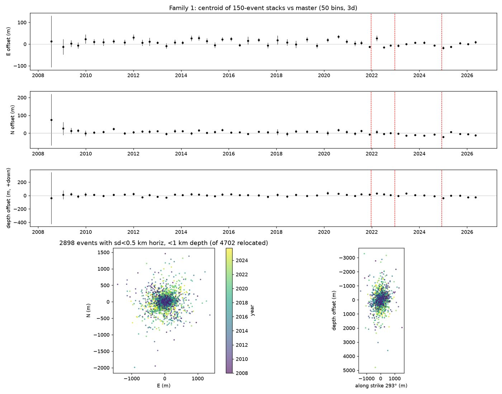<figcaption>Family 1: relocation of 150-event bins through time, and the well-constrained single events.</figcaption></figure>
<figure>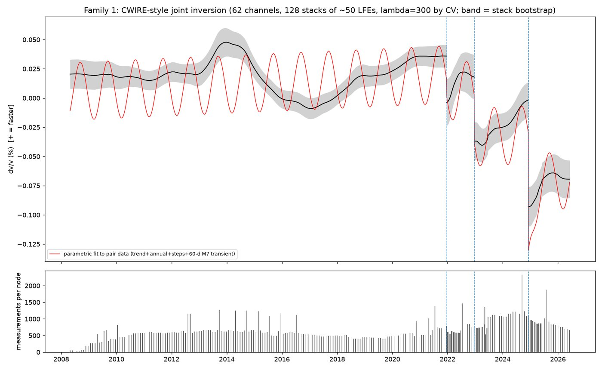<figcaption>Family 1: CWIRE-style dv/v from all channels (band = stack bootstrap; red = parametric fit).</figcaption></figure>
</div></article>
<article class="fam" id="fam-2"><h3>Family 2</h3><div class="kv">
<div><span class="k">Events (v2)</span><span class="v">4,837 · 264/yr</span></div>
<div><span class="k">3D location</span><span class="v">40.067°N -123.638°E, 29.0 km (± 0.57/1.12 km)</span></div>
<div><span class="k">Offset from Shelly</span><span class="v">0.50 km horizontal, +1.4 km depth</span></div>
<div><span class="k">Picks P / S</span><span class="v">18 / 28</span></div>
<div><span class="k">Relocated events</span><span class="v">1,197 well constrained of 2,064</span></div>
<div><span class="k">Bin centroid scatter (E;N;Z m)</span><span class="v">22;16;36</span></div>
<div><span class="k">Fixed vs all-station agreement r</span><span class="v">0.91;0.90;0.88</span></div>
<div><span class="k">Activity after Petrolia 2021</span><span class="v">gap 12.0 d (rank 8), 30-day ratio 1.05</span></div>
<div><span class="k">Activity after Ferndale 2022</span><span class="v">gap 2.1 d (rank 1171), 30-day ratio 0.44</span></div>
<div><span class="k">Activity after M7.0 2024</span><span class="v">gap 13.8 d (rank 5), 30-day ratio 0.39</span></div>
<div><span class="k">Depth shift at M7 (fixed stations)</span><span class="v"><span class="na">–</span></span></div>
<div><span class="k">Silence (M7 to 10th event)</span><span class="v">35.1 d; reversed detections 0.60/d vs 1.67/d before</span></div>
<div><span class="k">dv/v all channels (35 ch)</span><span class="v">M7 <span class="val">-0.089 ± 0.030</span> <span class="z weak">-2.9σ</span><br>transient <span class="val">-0.421 ± 0.647</span> <span class="z none">-0.6σ</span><br>annual 0.037% (day 226)</span></div>
<div><span class="k">dv/v borehole (16 ch)</span><span class="v">M7 <span class="val">-0.031 ± 0.033</span> <span class="z none">-1.0σ</span><br>transient <span class="val">-0.196 ± 0.203</span> <span class="z none">-1.0σ</span><br>annual 0.013% (day 203)</span></div>
<div><span class="k">dv/v surface (19 ch)</span><span class="v">M7 <span class="val">-0.117 ± 0.040</span> <span class="z weak">-2.9σ</span><br>transient <span class="val">-0.501 ± 0.243</span> <span class="z weak">-2.1σ</span><br>annual 0.066% (day 229)</span></div>
</div><div class="two">
<figure>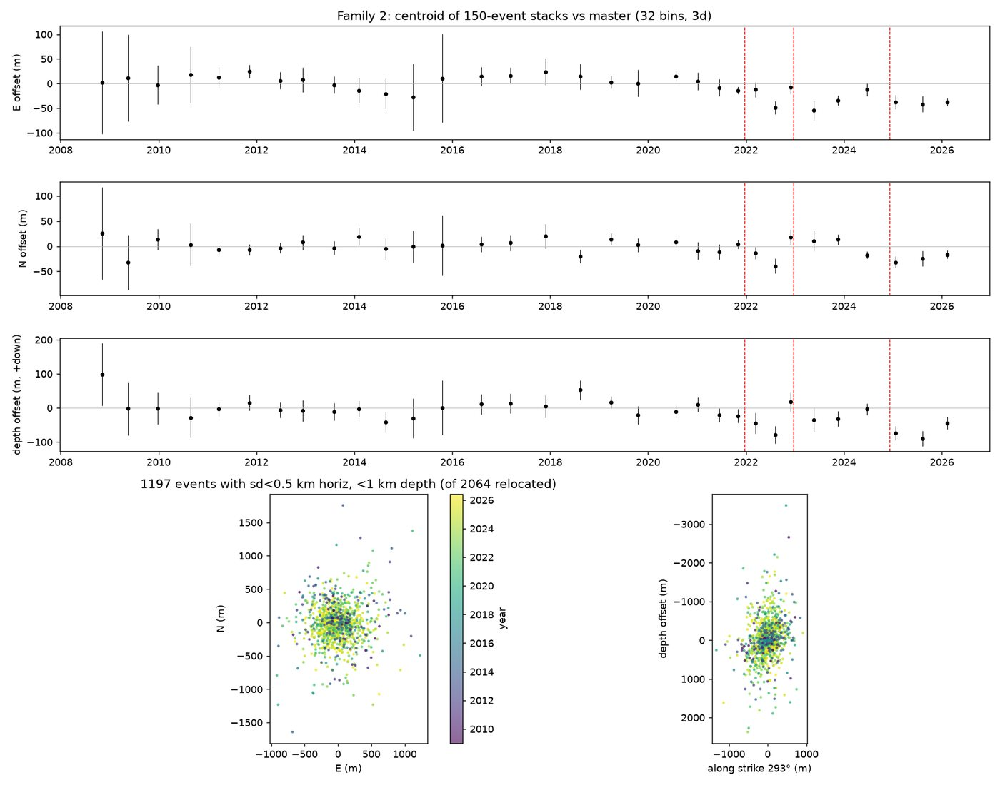<figcaption>Family 2: relocation of 150-event bins through time, and the well-constrained single events.</figcaption></figure>
<figure>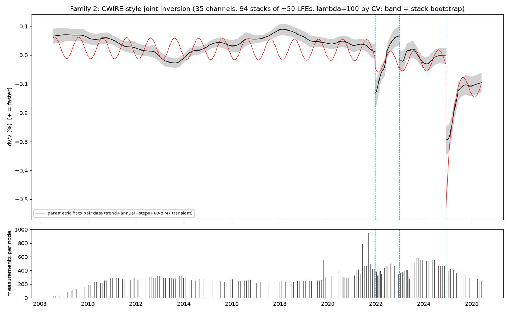<figcaption>Family 2: CWIRE-style dv/v from all channels (band = stack bootstrap; red = parametric fit).</figcaption></figure>
</div></article>
<article class="fam" id="fam-3"><h3>Family 3</h3><div class="kv">
<div><span class="k">Events (v2)</span><span class="v">2,526 · 137/yr</span></div>
<div><span class="k">3D location</span><span class="v">40.040°N -123.690°E, 22.0 km (± 0.84/1.04 km)</span></div>
<div><span class="k">Offset from Shelly</span><span class="v">0.68 km horizontal, -0.2 km depth</span></div>
<div><span class="k">Picks P / S</span><span class="v">11 / 26</span></div>
<div><span class="k">Relocated events</span><span class="v">758 well constrained of 988</span></div>
<div><span class="k">Bin centroid scatter (E;N;Z m)</span><span class="v">11;10;16</span></div>
<div><span class="k">Fixed vs all-station agreement r</span><span class="v">0.83;0.78;0.85</span></div>
<div><span class="k">Activity after Petrolia 2021</span><span class="v">gap 6.2 d (rank 326), 30-day ratio 1.74</span></div>
<div><span class="k">Activity after Ferndale 2022</span><span class="v">gap 2.6 d (rank 852), 30-day ratio 0.22</span></div>
<div><span class="k">Activity after M7.0 2024</span><span class="v">gap 20.4 d (rank 18), 30-day ratio 0.30</span></div>
<div><span class="k">Depth shift at M7 (fixed stations)</span><span class="v"><span class="val">+5 ± 16 m</span> <span class="z none">+0.3σ</span></span></div>
<div><span class="k">Silence (M7 to 10th event)</span><span class="v">31.4 d; reversed detections 1.27/d vs 1.36/d before</span></div>
<div><span class="k">dv/v all channels (30 ch)</span><span class="v">M7 <span class="val">-0.060 ± 0.029</span> <span class="z weak">-2.0σ</span><br>transient <span class="val">-0.202 ± 0.478</span> <span class="z none">-0.4σ</span><br>annual 0.046% (day 245)</span></div>
<div><span class="k">dv/v borehole (12 ch)</span><span class="v">M7 <span class="val">-0.056 ± 0.061</span> <span class="z none">-0.9σ</span><br>transient <span class="val">-0.052 ± 0.841</span> <span class="z none">-0.1σ</span><br>annual 0.041% (day 247)</span></div>
<div><span class="k">dv/v surface (18 ch)</span><span class="v">M7 <span class="val">-0.053 ± 0.039</span> <span class="z none">-1.3σ</span><br>transient <span class="val">-0.246 ± 0.450</span> <span class="z none">-0.5σ</span><br>annual 0.051% (day 245)</span></div>
</div><div class="two">
<figure>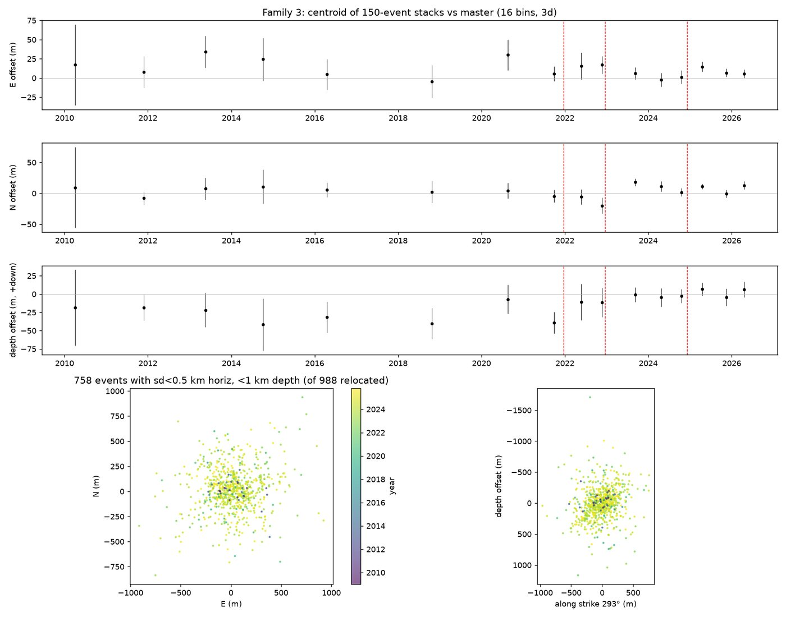<figcaption>Family 3: relocation of 150-event bins through time, and the well-constrained single events.</figcaption></figure>
<figure>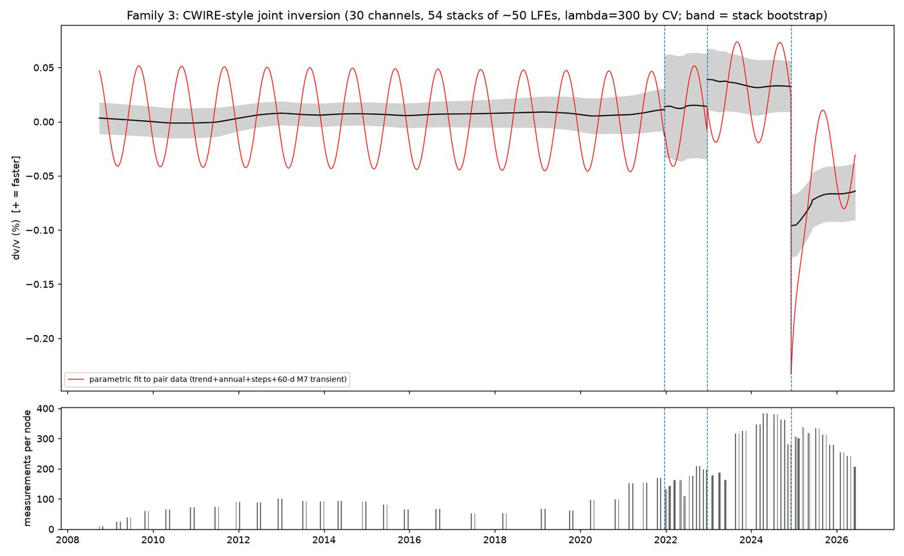<figcaption>Family 3: CWIRE-style dv/v from all channels (band = stack bootstrap; red = parametric fit).</figcaption></figure>
</div></article>
<article class="fam" id="fam-4"><h3>Family 4</h3><div class="kv">
<div><span class="k">Events (v2)</span><span class="v">3,023 · 165/yr</span></div>
<div><span class="k">3D location</span><span class="v">40.059°N -123.626°E, 33.0 km (± 1.07/1.81 km)</span></div>
<div><span class="k">Offset from Shelly</span><span class="v">1.43 km horizontal, +4.8 km depth</span></div>
<div><span class="k">Picks P / S</span><span class="v">9 / 24</span></div>
<div><span class="k">Relocated events</span><span class="v">305 well constrained of 469</span></div>
<div><span class="k">Bin centroid scatter (E;N;Z m)</span><span class="v">25;19;19</span></div>
<div><span class="k">Fixed vs all-station agreement r</span><span class="v">–</span></div>
<div><span class="k">Activity after Petrolia 2021</span><span class="v">gap 2.1 d (rank 1108), 30-day ratio 1.72</span></div>
<div><span class="k">Activity after Ferndale 2022</span><span class="v">gap 1.0 d (rank 1625), 30-day ratio 1.11</span></div>
<div><span class="k">Activity after M7.0 2024</span><span class="v">gap 25.0 d (rank 1), 30-day ratio 0.62</span></div>
<div><span class="k">Depth shift at M7 (fixed stations)</span><span class="v"><span class="na">–</span></span></div>
<div><span class="k">Silence (M7 to 10th event)</span><span class="v">36.2 d; reversed detections 0.80/d vs 0.81/d before</span></div>
<div><span class="k">dv/v all channels (17 ch)</span><span class="v">M7 <span class="val">+0.031 ± 0.073</span> <span class="z none">+0.4σ</span><br>transient <span class="val">+0.227 ± 4.662</span> <span class="z none">+0.0σ</span><br>annual 0.028% (day 170)</span></div>
<div><span class="k">dv/v borehole (12 ch)</span><span class="v">M7 <span class="val">+0.092 ± 0.089</span> <span class="z none">+1.0σ</span><br>transient <span class="val">+0.175 ± 6.876</span> <span class="z none">+0.0σ</span><br>annual 0.023% (day 154)</span></div>
<div><span class="k">dv/v surface (5 ch)</span><span class="v">M7 <span class="val">-0.092 ± 0.144</span> <span class="z none">-0.6σ</span><br>transient <span class="val">+0.244 ± 11.149</span> <span class="z none">+0.0σ</span><br>annual 0.116% (day 200)</span></div>
</div><div class="two">
<figure>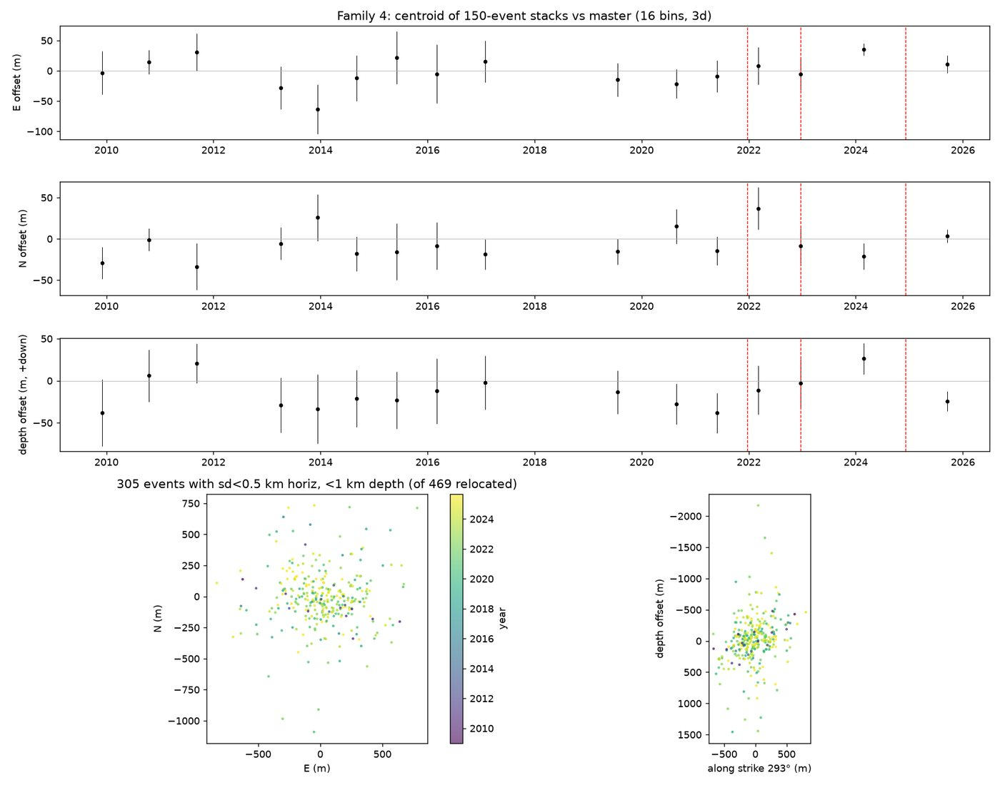<figcaption>Family 4: relocation of 150-event bins through time, and the well-constrained single events.</figcaption></figure>
<figure>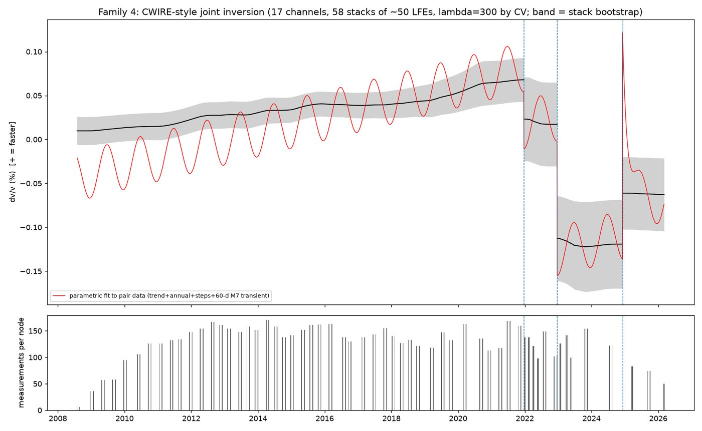<figcaption>Family 4: CWIRE-style dv/v from all channels (band = stack bootstrap; red = parametric fit).</figcaption></figure>
</div></article>
<article class="fam" id="fam-5"><h3>Family 5</h3><div class="kv">
<div><span class="k">Events (v2)</span><span class="v">4,188 · 227/yr</span></div>
<div><span class="k">3D location</span><span class="v">40.068°N -123.614°E, 29.0 km (± 0.65/1.42 km)</span></div>
<div><span class="k">Offset from Shelly</span><span class="v">1.85 km horizontal, +0.4 km depth</span></div>
<div><span class="k">Picks P / S</span><span class="v">17 / 26</span></div>
<div><span class="k">Relocated events</span><span class="v">938 well constrained of 1,800</span></div>
<div><span class="k">Bin centroid scatter (E;N;Z m)</span><span class="v">24;24;24</span></div>
<div><span class="k">Fixed vs all-station agreement r</span><span class="v">0.85;0.81;0.93</span></div>
<div><span class="k">Activity after Petrolia 2021</span><span class="v">gap 3.9 d (rank 458), 30-day ratio 0.77</span></div>
<div><span class="k">Activity after Ferndale 2022</span><span class="v">gap 3.7 d (rank 498), 30-day ratio 0.66</span></div>
<div><span class="k">Activity after M7.0 2024</span><span class="v">gap 18.0 d (rank 1), 30-day ratio 0.70</span></div>
<div><span class="k">Depth shift at M7 (fixed stations)</span><span class="v"><span class="na">–</span></span></div>
<div><span class="k">Silence (M7 to 10th event)</span><span class="v">26.5 d; reversed detections 0.60/d vs 1.36/d before</span></div>
<div><span class="k">dv/v all channels (21 ch)</span><span class="v">M7 <span class="val">+0.056 ± 0.045</span> <span class="z none">+1.2σ</span><br>transient <span class="val">-0.380 ± 0.533</span> <span class="z none">-0.7σ</span><br>annual 0.023% (day 256)</span></div>
<div><span class="k">dv/v borehole (11 ch)</span><span class="v">M7 <span class="val">-0.004 ± 0.099</span> <span class="z none">-0.0σ</span><br>transient <span class="val">-0.216 ± 1.812</span> <span class="z none">-0.1σ</span><br>annual 0.009% (day 334)</span></div>
<div><span class="k">dv/v surface (10 ch)</span><span class="v">M7 <span class="val">+0.087 ± 0.074</span> <span class="z none">+1.2σ</span><br>transient <span class="val">-0.417 ± 2.648</span> <span class="z none">-0.2σ</span><br>annual 0.060% (day 243)</span></div>
</div><div class="two">
<figure>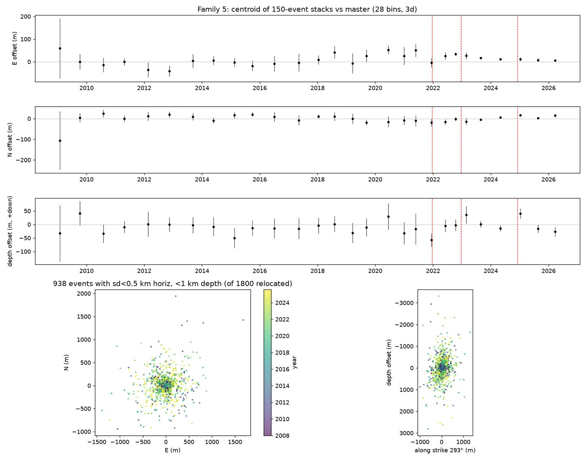<figcaption>Family 5: relocation of 150-event bins through time, and the well-constrained single events.</figcaption></figure>
<figure>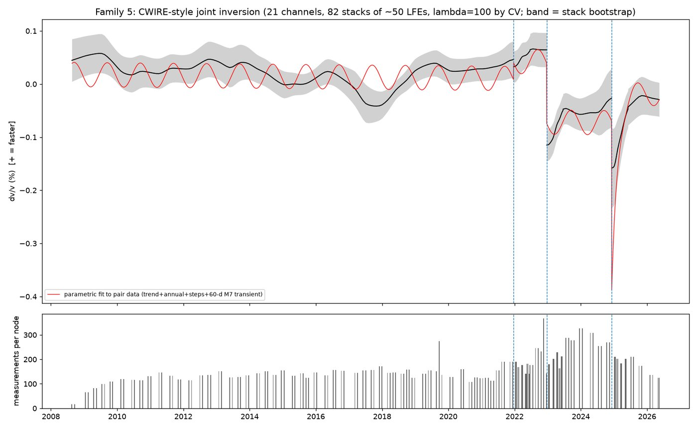<figcaption>Family 5: CWIRE-style dv/v from all channels (band = stack bootstrap; red = parametric fit).</figcaption></figure>
</div></article>
<article class="fam" id="fam-6"><h3>Family 6</h3><div class="kv">
<div><span class="k">Events (v2)</span><span class="v">11,039 · 601/yr</span></div>
<div><span class="k">3D location</span><span class="v">40.054°N -123.597°E, 30.5 km (± 0.37/0.67 km)</span></div>
<div><span class="k">Offset from Shelly</span><span class="v">1.02 km horizontal, +2.3 km depth</span></div>
<div><span class="k">Picks P / S</span><span class="v">33 / 27</span></div>
<div><span class="k">Relocated events</span><span class="v">4,586 well constrained of 7,446</span></div>
<div><span class="k">Bin centroid scatter (E;N;Z m)</span><span class="v">15;12;16</span></div>
<div><span class="k">Fixed vs all-station agreement r</span><span class="v">0.82;0.82;0.80</span></div>
<div><span class="k">Activity after Petrolia 2021</span><span class="v">gap 3.9 d (rank 117), 30-day ratio 1.29</span></div>
<div><span class="k">Activity after Ferndale 2022</span><span class="v">gap 2.6 d (rank 544), 30-day ratio 0.41</span></div>
<div><span class="k">Activity after M7.0 2024</span><span class="v">gap 18.0 d (rank 1), 30-day ratio 0.60</span></div>
<div><span class="k">Depth shift at M7 (fixed stations)</span><span class="v"><span class="val">-3 ± 5 m</span> <span class="z none">-0.6σ</span></span></div>
<div><span class="k">Silence (M7 to 10th event)</span><span class="v">19.5 d; reversed detections 0.41/d vs 0.85/d before</span></div>
<div><span class="k">dv/v all channels (65 ch)</span><span class="v">M7 <span class="val">-0.037 ± 0.013</span> <span class="z weak">-2.8σ</span><br>transient <span class="val">-0.108 ± 0.071</span> <span class="z none">-1.5σ</span><br>annual 0.032% (day 249)</span></div>
<div><span class="k">dv/v borehole (19 ch)</span><span class="v">M7 <span class="val">-0.016 ± 0.020</span> <span class="z none">-0.8σ</span><br>transient <span class="val">-0.028 ± 0.107</span> <span class="z none">-0.3σ</span><br>annual 0.021% (day 252)</span></div>
<div><span class="k">dv/v surface (46 ch)</span><span class="v">M7 <span class="val">-0.045 ± 0.017</span> <span class="z weak">-2.7σ</span><br>transient <span class="val">-0.108 ± 0.073</span> <span class="z none">-1.5σ</span><br>annual 0.043% (day 247)</span></div>
</div><div class="two">
<figure>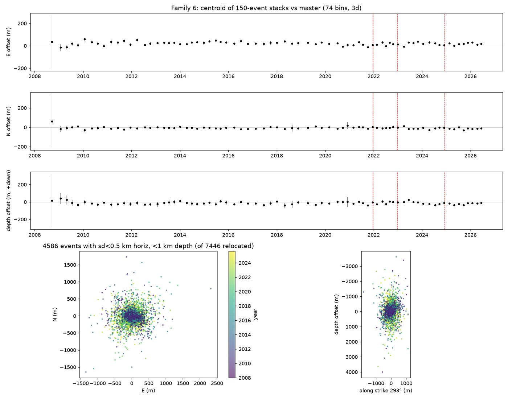<figcaption>Family 6: relocation of 150-event bins through time, and the well-constrained single events.</figcaption></figure>
<figure>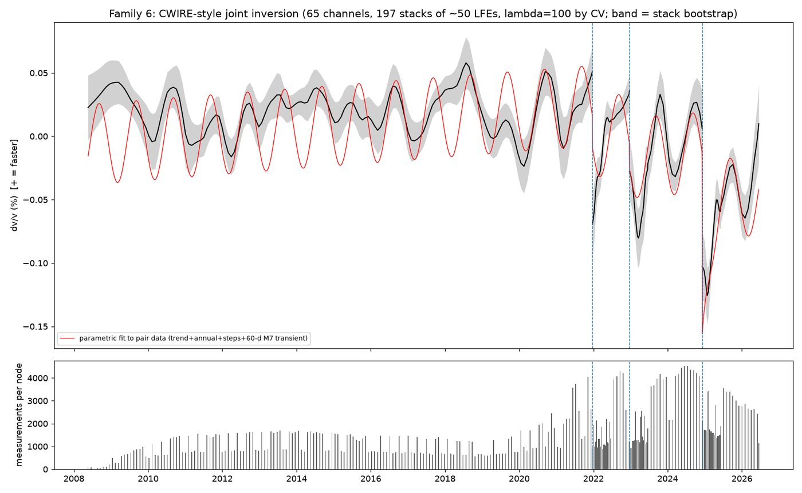<figcaption>Family 6: CWIRE-style dv/v from all channels (band = stack bootstrap; red = parametric fit).</figcaption></figure>
</div></article>
<article class="fam" id="fam-7"><h3>Family 7</h3><div class="kv">
<div><span class="k">Events (v2)</span><span class="v">5,233 · 284/yr</span></div>
<div><span class="k">3D location</span><span class="v">40.076°N -123.638°E, 29.5 km (± 0.39/0.79 km)</span></div>
<div><span class="k">Offset from Shelly</span><span class="v">0.96 km horizontal, +1.8 km depth</span></div>
<div><span class="k">Picks P / S</span><span class="v">18 / 28</span></div>
<div><span class="k">Relocated events</span><span class="v">1,449 well constrained of 2,321</span></div>
<div><span class="k">Bin centroid scatter (E;N;Z m)</span><span class="v">15;10;23</span></div>
<div><span class="k">Fixed vs all-station agreement r</span><span class="v">0.89;0.83;0.92</span></div>
<div><span class="k">Activity after Petrolia 2021</span><span class="v">gap 5.1 d (rank 400), 30-day ratio 1.53</span></div>
<div><span class="k">Activity after Ferndale 2022</span><span class="v">gap 3.8 d (rank 716), 30-day ratio 0.57</span></div>
<div><span class="k">Activity after M7.0 2024</span><span class="v">gap 21.0 d (rank 1), 30-day ratio 0.66</span></div>
<div><span class="k">Depth shift at M7 (fixed stations)</span><span class="v"><span class="na">–</span></span></div>
<div><span class="k">Silence (M7 to 10th event)</span><span class="v">26.5 d; reversed detections 0.53/d vs 0.81/d before</span></div>
<div><span class="k">dv/v all channels (37 ch)</span><span class="v">M7 <span class="val">-0.027 ± 0.035</span> <span class="z none">-0.8σ</span><br>transient <span class="val">-0.117 ± 0.425</span> <span class="z none">-0.3σ</span><br>annual 0.033% (day 251)</span></div>
<div><span class="k">dv/v borehole (15 ch)</span><span class="v">M7 <span class="val">-0.081 ± 0.047</span> <span class="z none">-1.7σ</span><br>transient <span class="val">+0.011 ± 0.237</span> <span class="z none">+0.0σ</span><br>annual 0.007% (day 235)</span></div>
<div><span class="k">dv/v surface (22 ch)</span><span class="v">M7 <span class="val">-0.001 ± 0.043</span> <span class="z none">-0.0σ</span><br>transient <span class="val">-0.133 ± 0.343</span> <span class="z none">-0.4σ</span><br>annual 0.065% (day 252)</span></div>
</div><div class="two">
<figure>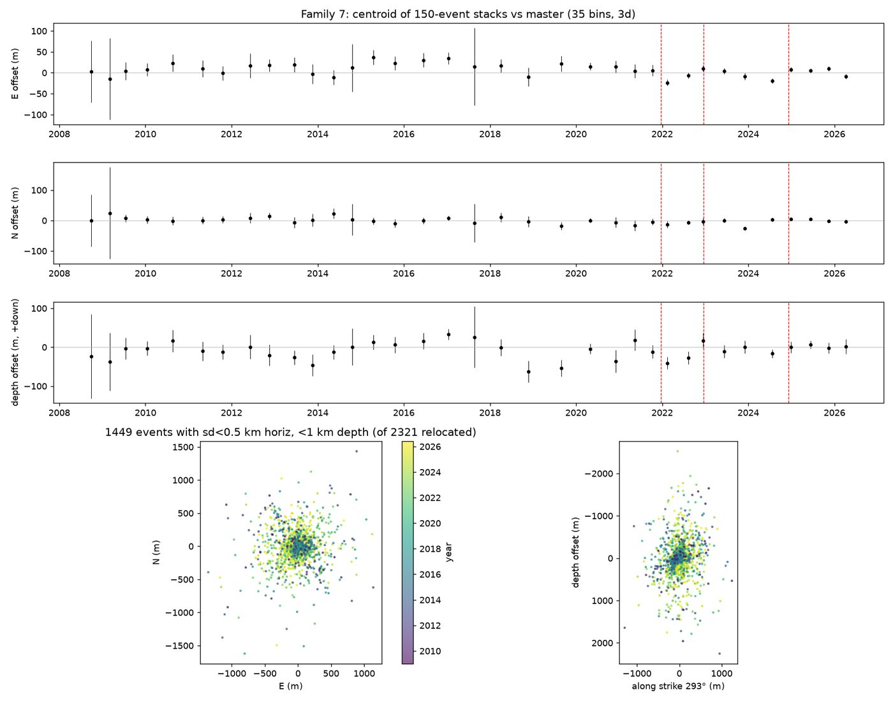<figcaption>Family 7: relocation of 150-event bins through time, and the well-constrained single events.</figcaption></figure>
<figure>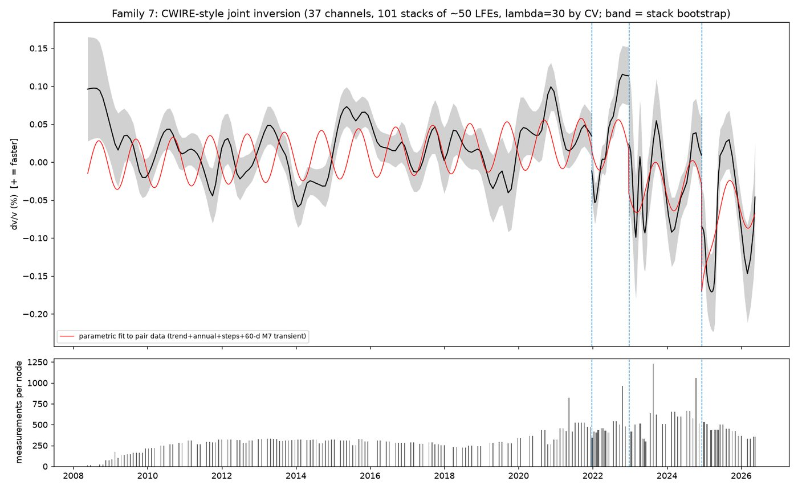<figcaption>Family 7: CWIRE-style dv/v from all channels (band = stack bootstrap; red = parametric fit).</figcaption></figure>
</div></article>
<article class="fam" id="fam-8"><h3>Family 8</h3><div class="kv">
<div><span class="k">Events (v2)</span><span class="v">20,979 · 1135/yr</span></div>
<div><span class="k">3D location</span><span class="v">40.080°N -123.708°E, 27.5 km (± 0.35/0.80 km)</span></div>
<div><span class="k">Offset from Shelly</span><span class="v">0.88 km horizontal, +3.3 km depth</span></div>
<div><span class="k">Picks P / S</span><span class="v">32 / 28</span></div>
<div><span class="k">Relocated events</span><span class="v">8,858 well constrained of 13,278</span></div>
<div><span class="k">Bin centroid scatter (E;N;Z m)</span><span class="v">15;11;17</span></div>
<div><span class="k">Fixed vs all-station agreement r</span><span class="v">0.88;0.90;0.83</span></div>
<div><span class="k">Activity after Petrolia 2021</span><span class="v">gap 4.3 d (rank 8), 30-day ratio 1.23</span></div>
<div><span class="k">Activity after Ferndale 2022</span><span class="v">gap 1.9 d (rank 1268), 30-day ratio 0.37</span></div>
<div><span class="k">Activity after M7.0 2024</span><span class="v">gap 10.0 d (rank 1), 30-day ratio 0.58</span></div>
<div><span class="k">Depth shift at M7 (fixed stations)</span><span class="v"><span class="val">-13 ± 7 m</span> <span class="z none">-1.9σ</span></span></div>
<div><span class="k">Silence (M7 to 10th event)</span><span class="v">11.3 d; reversed detections 0.44/d vs 0.58/d before</span></div>
<div><span class="k">dv/v all channels (47 ch)</span><span class="v">M7 <span class="val">-0.040 ± 0.015</span> <span class="z weak">-2.7σ</span><br>transient <span class="val">-0.047 ± 0.048</span> <span class="z none">-1.0σ</span><br>annual 0.032% (day 241)</span></div>
<div><span class="k">dv/v borehole (13 ch)</span><span class="v">M7 <span class="val">-0.024 ± 0.016</span> <span class="z none">-1.5σ</span><br>transient <span class="val">+0.058 ± 0.065</span> <span class="z none">+0.9σ</span><br>annual 0.016% (day 249)</span></div>
<div><span class="k">dv/v surface (34 ch)</span><span class="v">M7 <span class="val">-0.038 ± 0.017</span> <span class="z weak">-2.2σ</span><br>transient <span class="val">-0.055 ± 0.058</span> <span class="z none">-0.9σ</span><br>annual 0.046% (day 238)</span></div>
</div><div class="two">
<figure>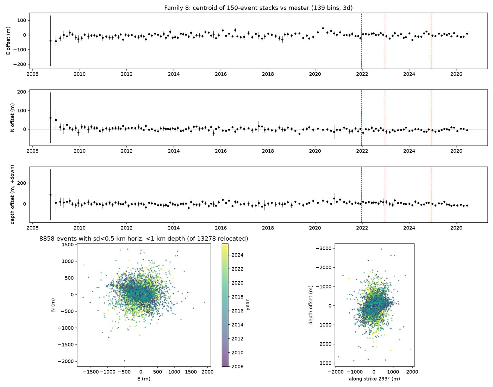<figcaption>Family 8: relocation of 150-event bins through time, and the well-constrained single events.</figcaption></figure>
<figure>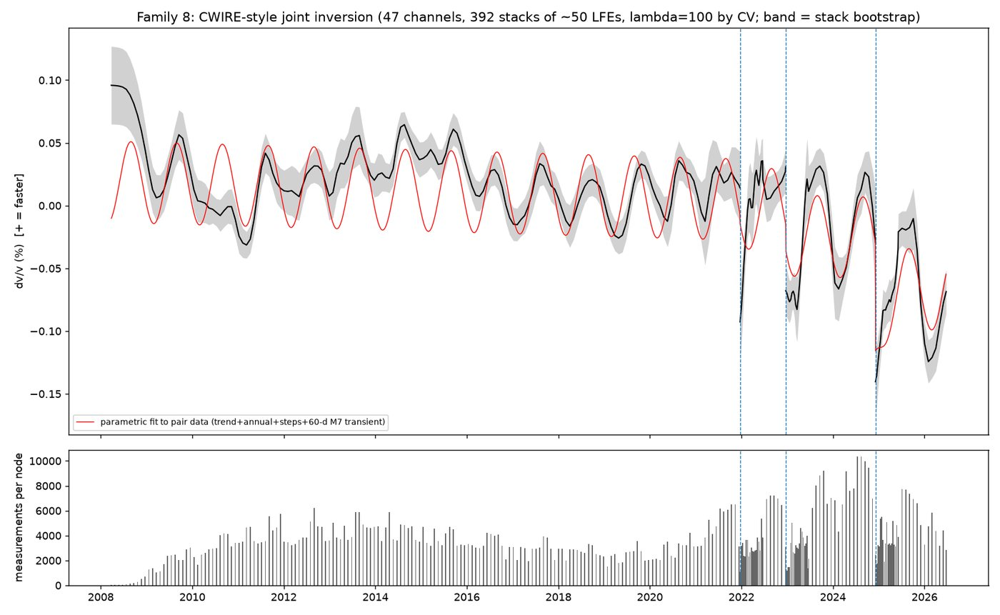<figcaption>Family 8: CWIRE-style dv/v from all channels (band = stack bootstrap; red = parametric fit).</figcaption></figure>
</div></article>
<article class="fam" id="fam-9"><h3>Family 9</h3><div class="kv">
<div><span class="k">Events (v2)</span><span class="v">2,211 · 122/yr</span></div>
<div><span class="k">3D location</span><span class="v">40.068°N -123.608°E, 29.0 km (± 0.61/1.47 km)</span></div>
<div><span class="k">Offset from Shelly</span><span class="v">1.11 km horizontal, +0.9 km depth</span></div>
<div><span class="k">Picks P / S</span><span class="v">5 / 22</span></div>
<div><span class="k">Relocated events</span><span class="v">215 well constrained of 369</span></div>
<div><span class="k">Bin centroid scatter (E;N;Z m)</span><span class="v">42;36;39</span></div>
<div><span class="k">Fixed vs all-station agreement r</span><span class="v">0.88;0.94;0.94</span></div>
<div><span class="k">Activity after Petrolia 2021</span><span class="v">gap 6.2 d (rank 282), 30-day ratio 0.92</span></div>
<div><span class="k">Activity after Ferndale 2022</span><span class="v">gap 4.4 d (rank 470), 30-day ratio 1.10</span></div>
<div><span class="k">Activity after M7.0 2024</span><span class="v">gap 33.1 d (rank 3), 30-day ratio 0.54</span></div>
<div><span class="k">Depth shift at M7 (fixed stations)</span><span class="v"><span class="na">–</span></span></div>
<div><span class="k">Silence (M7 to 10th event)</span><span class="v">36.2 d; reversed detections 1.88/d vs 2.09/d before</span></div>
<div><span class="k">dv/v all channels</span><span class="v"><span class="na">not measurable (1 clean channels)</span></span></div>
<div><span class="k">dv/v borehole</span><span class="v"><span class="na">not measurable (0 clean channels)</span></span></div>
<div><span class="k">dv/v surface</span><span class="v"><span class="na">not measurable (1 clean channels)</span></span></div>
</div><div class="two">
<figure>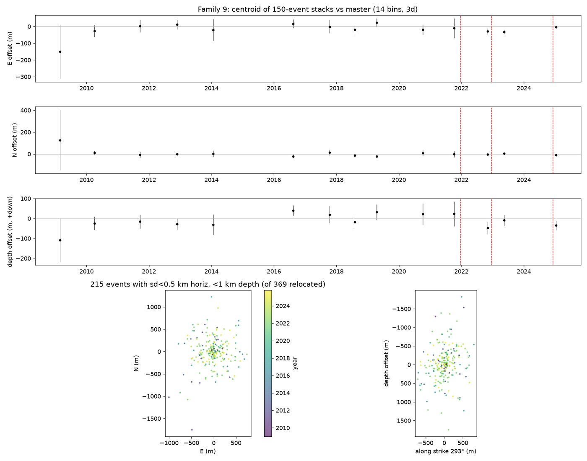<figcaption>Family 9: relocation of 150-event bins through time, and the well-constrained single events.</figcaption></figure>
<figure>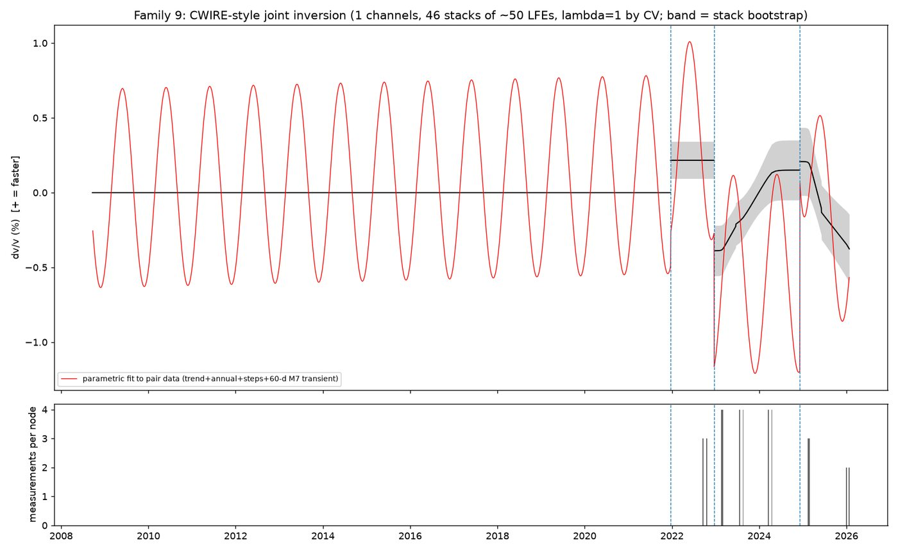<figcaption>Family 9: CWIRE-style dv/v from all channels (band = stack bootstrap; red = parametric fit).</figcaption></figure>
</div></article>
<article class="fam" id="fam-10"><h3>Family 10</h3><div class="kv">
<div><span class="k">Events (v2)</span><span class="v">4,801 · 260/yr</span></div>
<div><span class="k">3D location</span><span class="v">40.072°N -123.638°E, 31.0 km (± 0.73/1.18 km)</span></div>
<div><span class="k">Offset from Shelly</span><span class="v">0.94 km horizontal, +3.2 km depth</span></div>
<div><span class="k">Picks P / S</span><span class="v">24 / 28</span></div>
<div><span class="k">Relocated events</span><span class="v">1,468 well constrained of 2,487</span></div>
<div><span class="k">Bin centroid scatter (E;N;Z m)</span><span class="v">17;11;21</span></div>
<div><span class="k">Fixed vs all-station agreement r</span><span class="v">0.93;0.90;0.91</span></div>
<div><span class="k">Activity after Petrolia 2021</span><span class="v">gap 4.4 d (rank 505), 30-day ratio 1.29</span></div>
<div><span class="k">Activity after Ferndale 2022</span><span class="v">gap 1.9 d (rank 1292), 30-day ratio 0.88</span></div>
<div><span class="k">Activity after M7.0 2024</span><span class="v">gap 21.0 d (rank 1), 30-day ratio 0.45</span></div>
<div><span class="k">Depth shift at M7 (fixed stations)</span><span class="v"><span class="na">–</span></span></div>
<div><span class="k">Silence (M7 to 10th event)</span><span class="v">35.1 d; reversed detections 0.54/d vs 0.74/d before</span></div>
<div><span class="k">dv/v all channels (46 ch)</span><span class="v">M7 <span class="val">-0.025 ± 0.033</span> <span class="z none">-0.8σ</span><br>transient <span class="val">-0.076 ± 6.767</span> <span class="z none">-0.0σ</span><br>annual 0.022% (day 252)</span></div>
<div><span class="k">dv/v borehole (19 ch)</span><span class="v">M7 <span class="val">-0.000 ± 0.035</span> <span class="z none">-0.0σ</span><br>transient <span class="val">-0.132 ± 3.839</span> <span class="z none">-0.0σ</span><br>annual 0.022% (day 248)</span></div>
<div><span class="k">dv/v surface (27 ch)</span><span class="v">M7 <span class="val">-0.037 ± 0.051</span> <span class="z none">-0.7σ</span><br>transient <span class="val">-0.052 ± 8.556</span> <span class="z none">-0.0σ</span><br>annual 0.022% (day 258)</span></div>
</div><div class="two">
<figure>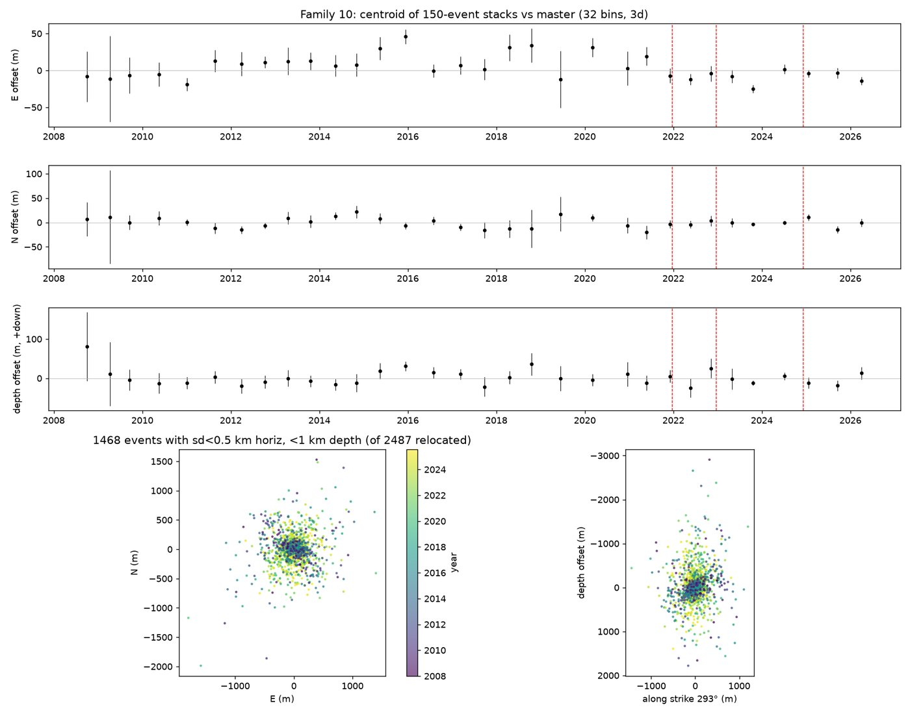<figcaption>Family 10: relocation of 150-event bins through time, and the well-constrained single events.</figcaption></figure>
<figure><figcaption>Family 10: CWIRE-style dv/v from all channels (band = stack bootstrap; red = parametric fit).</figcaption></figure>
</div></article>
<article class="fam" id="fam-11"><h3>Family 11</h3><div class="kv">
<div><span class="k">Events (v2)</span><span class="v">2,011 · 110/yr</span></div>
<div><span class="k">3D location</span><span class="v">40.031°N -123.655°E, 27.0 km (± 0.87/1.82 km)</span></div>
<div><span class="k">Offset from Shelly</span><span class="v">2.04 km horizontal, +4.6 km depth</span></div>
<div><span class="k">Picks P / S</span><span class="v">6 / 24</span></div>
<div><span class="k">Relocated events</span><span class="v">280 well constrained of 434</span></div>
<div><span class="k">Bin centroid scatter (E;N;Z m)</span><span class="v">12;18;46</span></div>
<div><span class="k">Fixed vs all-station agreement r</span><span class="v">–</span></div>
<div><span class="k">Activity after Petrolia 2021</span><span class="v">gap 5.1 d (rank 424), 30-day ratio 1.89</span></div>
<div><span class="k">Activity after Ferndale 2022</span><span class="v">gap 4.3 d (rank 527), 30-day ratio 0.19</span></div>
<div><span class="k">Activity after M7.0 2024</span><span class="v">gap 6.9 d (rank 280), 30-day ratio 0.27</span></div>
<div><span class="k">Depth shift at M7 (fixed stations)</span><span class="v"><span class="na">–</span></span></div>
<div><span class="k">Silence (M7 to 10th event)</span><span class="v">36.2 d; reversed detections 1.71/d vs 2.56/d before</span></div>
<div><span class="k">dv/v all channels (8 ch)</span><span class="v">M7 <span class="val">-0.229 ± 0.157</span> <span class="z none">-1.5σ</span><br>transient <span class="val">-0.692 ± 16.162</span> <span class="z none">-0.0σ</span><br>annual 0.058% (day 285)</span></div>
<div><span class="k">dv/v borehole</span><span class="v"><span class="na">not measurable (1 clean channels)</span></span></div>
<div><span class="k">dv/v surface (7 ch)</span><span class="v">M7 <span class="val">-0.245 ± 0.198</span> <span class="z none">-1.2σ</span><br>transient <span class="val">-0.638 ± 11.438</span> <span class="z none">-0.1σ</span><br>annual 0.065% (day 282)</span></div>
</div><div class="two">
<figure><figcaption>Family 11: relocation of 150-event bins through time, and the well-constrained single events.</figcaption></figure>
<figure><figcaption>Family 11: CWIRE-style dv/v from all channels (band = stack bootstrap; red = parametric fit).</figcaption></figure>
</div></article>
<article class="fam" id="fam-12"><h3>Family 12</h3><div class="kv">
<div><span class="k">Events (v2)</span><span class="v">6,413 · 353/yr</span></div>
<div><span class="k">3D location</span><span class="v">40.067°N -123.638°E, 30.5 km (± 0.79/1.21 km)</span></div>
<div><span class="k">Offset from Shelly</span><span class="v">1.00 km horizontal, +2.7 km depth</span></div>
<div><span class="k">Picks P / S</span><span class="v">22 / 28</span></div>
<div><span class="k">Relocated events</span><span class="v">1,697 well constrained of 2,705</span></div>
<div><span class="k">Bin centroid scatter (E;N;Z m)</span><span class="v">28;14;22</span></div>
<div><span class="k">Fixed vs all-station agreement r</span><span class="v">0.94;0.85;0.93</span></div>
<div><span class="k">Activity after Petrolia 2021</span><span class="v">gap 5.8 d (rank 111), 30-day ratio 1.31</span></div>
<div><span class="k">Activity after Ferndale 2022</span><span class="v">gap 3.1 d (rank 716), 30-day ratio 1.07</span></div>
<div><span class="k">Activity after M7.0 2024</span><span class="v">gap 27.1 d (rank 1), 30-day ratio 0.30</span></div>
<div><span class="k">Depth shift at M7 (fixed stations)</span><span class="v"><span class="val">+12 ± 10 m</span> <span class="z none">+1.2σ</span></span></div>
<div><span class="k">Silence (M7 to 10th event)</span><span class="v">35.1 d; reversed detections 0.37/d vs 0.74/d before</span></div>
<div><span class="k">dv/v all channels (48 ch)</span><span class="v">M7 <span class="val">-0.021 ± 0.022</span> <span class="z none">-0.9σ</span><br>transient <span class="val">-0.038 ± 0.145</span> <span class="z none">-0.3σ</span><br>annual 0.037% (day 265)</span></div>
<div><span class="k">dv/v borehole (18 ch)</span><span class="v">M7 <span class="val">-0.027 ± 0.035</span> <span class="z none">-0.8σ</span><br>transient <span class="val">+0.067 ± 0.231</span> <span class="z none">+0.3σ</span><br>annual 0.022% (day 261)</span></div>
<div><span class="k">dv/v surface (30 ch)</span><span class="v">M7 <span class="val">-0.015 ± 0.028</span> <span class="z none">-0.5σ</span><br>transient <span class="val">-0.077 ± 0.173</span> <span class="z none">-0.4σ</span><br>annual 0.060% (day 268)</span></div>
</div><div class="two">
<figure><figcaption>Family 12: relocation of 150-event bins through time, and the well-constrained single events.</figcaption></figure>
<figure><figcaption>Family 12: CWIRE-style dv/v from all channels (band = stack bootstrap; red = parametric fit).</figcaption></figure>
</div></article>
<article class="fam" id="fam-13"><h3>Family 13</h3><div class="kv">
<div><span class="k">Events (v2)</span><span class="v">4,445 · 242/yr</span></div>
<div><span class="k">3D location</span><span class="v">40.072°N -123.626°E, 30.0 km (± 0.46/0.96 km)</span></div>
<div><span class="k">Offset from Shelly</span><span class="v">0.32 km horizontal, +2.0 km depth</span></div>
<div><span class="k">Picks P / S</span><span class="v">25 / 28</span></div>
<div><span class="k">Relocated events</span><span class="v">1,524 well constrained of 2,505</span></div>
<div><span class="k">Bin centroid scatter (E;N;Z m)</span><span class="v">14;7;18</span></div>
<div><span class="k">Fixed vs all-station agreement r</span><span class="v">0.83;0.82;0.84</span></div>
<div><span class="k">Activity after Petrolia 2021</span><span class="v">gap 2.7 d (rank 1019), 30-day ratio 1.30</span></div>
<div><span class="k">Activity after Ferndale 2022</span><span class="v">gap 4.7 d (rank 492), 30-day ratio 0.98</span></div>
<div><span class="k">Activity after M7.0 2024</span><span class="v">gap 21.0 d (rank 1), 30-day ratio 0.59</span></div>
<div><span class="k">Depth shift at M7 (fixed stations)</span><span class="v"><span class="val">-4 ± 11 m</span> <span class="z none">-0.4σ</span></span></div>
<div><span class="k">Silence (M7 to 10th event)</span><span class="v">26.5 d; reversed detections 0.26/d vs 0.58/d before</span></div>
<div><span class="k">dv/v all channels (45 ch)</span><span class="v">M7 <span class="val">-0.041 ± 0.025</span> <span class="z none">-1.6σ</span><br>transient <span class="val">-0.352 ± 0.808</span> <span class="z none">-0.4σ</span><br>annual 0.030% (day 281)</span></div>
<div><span class="k">dv/v borehole (19 ch)</span><span class="v">M7 <span class="val">-0.028 ± 0.040</span> <span class="z none">-0.7σ</span><br>transient <span class="val">-0.384 ± 0.227</span> <span class="z none">-1.7σ</span><br>annual 0.024% (day 294)</span></div>
<div><span class="k">dv/v surface (26 ch)</span><span class="v">M7 <span class="val">-0.048 ± 0.031</span> <span class="z none">-1.5σ</span><br>transient <span class="val">-0.306 ± 0.886</span> <span class="z none">-0.3σ</span><br>annual 0.041% (day 266)</span></div>
</div><div class="two">
<figure><figcaption>Family 13: relocation of 150-event bins through time, and the well-constrained single events.</figcaption></figure>
<figure><figcaption>Family 13: CWIRE-style dv/v from all channels (band = stack bootstrap; red = parametric fit).</figcaption></figure>
</div></article>
<article class="fam" id="fam-14"><h3>Family 14</h3><div class="kv">
<div><span class="k">Events (v2)</span><span class="v">7,102 · 384/yr</span></div>
<div><span class="k">3D location</span><span class="v">40.036°N -123.667°E, 27.0 km (± 0.75/1.97 km)</span></div>
<div><span class="k">Offset from Shelly</span><span class="v">0.21 km horizontal, +3.7 km depth</span></div>
<div><span class="k">Picks P / S</span><span class="v">20 / 28</span></div>
<div><span class="k">Relocated events</span><span class="v">2,161 well constrained of 3,833</span></div>
<div><span class="k">Bin centroid scatter (E;N;Z m)</span><span class="v">15;10;29</span></div>
<div><span class="k">Fixed vs all-station agreement r</span><span class="v">0.78;0.85;0.81</span></div>
<div><span class="k">Activity after Petrolia 2021</span><span class="v">gap 6.9 d (rank 78), 30-day ratio 1.56</span></div>
<div><span class="k">Activity after Ferndale 2022</span><span class="v">gap 2.7 d (rank 1050), 30-day ratio 0.38</span></div>
<div><span class="k">Activity after M7.0 2024</span><span class="v">gap 20.0 d (rank 1), 30-day ratio 0.33</span></div>
<div><span class="k">Depth shift at M7 (fixed stations)</span><span class="v"><span class="val">-45 ± 19 m</span> <span class="z weak">-2.4σ</span></span></div>
<div><span class="k">Silence (M7 to 10th event)</span><span class="v">25.0 d; reversed detections 0.32/d vs 0.62/d before</span></div>
<div><span class="k">dv/v all channels (39 ch)</span><span class="v">M7 <span class="val">-0.069 ± 0.027</span> <span class="z weak">-2.6σ</span><br>transient <span class="val">-0.059 ± 0.115</span> <span class="z none">-0.5σ</span><br>annual 0.045% (day 251)</span></div>
<div><span class="k">dv/v borehole (14 ch)</span><span class="v">M7 <span class="val">-0.035 ± 0.031</span> <span class="z none">-1.1σ</span><br>transient <span class="val">+0.159 ± 0.096</span> <span class="z none">+1.6σ</span><br>annual 0.025% (day 243)</span></div>
<div><span class="k">dv/v surface (25 ch)</span><span class="v">M7 <span class="val">-0.075 ± 0.027</span> <span class="z weak">-2.8σ</span><br>transient <span class="val">-0.118 ± 0.141</span> <span class="z none">-0.8σ</span><br>annual 0.056% (day 253)</span></div>
</div><div class="two">
<figure><figcaption>Family 14: relocation of 150-event bins through time, and the well-constrained single events.</figcaption></figure>
<figure><figcaption>Family 14: CWIRE-style dv/v from all channels (band = stack bootstrap; red = parametric fit).</figcaption></figure>
</div></article>
<article class="fam" id="fam-15"><h3>Family 15</h3><div class="kv">
<div><span class="k">Events (v2)</span><span class="v">5,712 · 310/yr</span></div>
<div><span class="k">3D location</span><span class="v">40.067°N -123.644°E, 28.5 km (± 0.80/1.25 km)</span></div>
<div><span class="k">Offset from Shelly</span><span class="v">0.97 km horizontal, +0.8 km depth</span></div>
<div><span class="k">Picks P / S</span><span class="v">17 / 27</span></div>
<div><span class="k">Relocated events</span><span class="v">1,048 well constrained of 1,586</span></div>
<div><span class="k">Bin centroid scatter (E;N;Z m)</span><span class="v">17;14;23</span></div>
<div><span class="k">Fixed vs all-station agreement r</span><span class="v">0.89;0.91;0.95</span></div>
<div><span class="k">Activity after Petrolia 2021</span><span class="v">gap 7.8 d (rank 69), 30-day ratio 1.65</span></div>
<div><span class="k">Activity after Ferndale 2022</span><span class="v">gap 1.2 d (rank 1579), 30-day ratio 0.82</span></div>
<div><span class="k">Activity after M7.0 2024</span><span class="v">gap 21.0 d (rank 1), 30-day ratio 0.39</span></div>
<div><span class="k">Depth shift at M7 (fixed stations)</span><span class="v"><span class="val">-8 ± 19 m</span> <span class="z none">-0.4σ</span></span></div>
<div><span class="k">Silence (M7 to 10th event)</span><span class="v">26.5 d; reversed detections 0.45/d vs 1.71/d before</span></div>
<div><span class="k">dv/v all channels (36 ch)</span><span class="v">M7 <span class="val">-0.041 ± 0.034</span> <span class="z none">-1.2σ</span><br>transient <span class="val">-0.169 ± 0.250</span> <span class="z none">-0.7σ</span><br>annual 0.027% (day 273)</span></div>
<div><span class="k">dv/v borehole (15 ch)</span><span class="v">M7 <span class="val">-0.051 ± 0.042</span> <span class="z none">-1.2σ</span><br>transient <span class="val">+0.097 ± 0.994</span> <span class="z none">+0.1σ</span><br>annual 0.021% (day 285)</span></div>
<div><span class="k">dv/v surface (21 ch)</span><span class="v">M7 <span class="val">-0.037 ± 0.048</span> <span class="z none">-0.8σ</span><br>transient <span class="val">-0.254 ± 0.350</span> <span class="z none">-0.7σ</span><br>annual 0.039% (day 264)</span></div>
</div><div class="two">
<figure><figcaption>Family 15: relocation of 150-event bins through time, and the well-constrained single events.</figcaption></figure>
<figure><figcaption>Family 15: CWIRE-style dv/v from all channels (band = stack bootstrap; red = parametric fit).</figcaption></figure>
</div></article>
<article class="fam" id="fam-16"><h3>Family 16</h3><div class="kv">
<div><span class="k">Events (v2)</span><span class="v">4,382 · 238/yr</span></div>
<div><span class="k">3D location</span><span class="v">40.059°N -123.602°E, 30.0 km (± 0.69/1.56 km)</span></div>
<div><span class="k">Offset from Shelly</span><span class="v">0.63 km horizontal, +1.8 km depth</span></div>
<div><span class="k">Picks P / S</span><span class="v">19 / 26</span></div>
<div><span class="k">Relocated events</span><span class="v">1,543 well constrained of 2,327</span></div>
<div><span class="k">Bin centroid scatter (E;N;Z m)</span><span class="v">14;14;19</span></div>
<div><span class="k">Fixed vs all-station agreement r</span><span class="v">0.87;0.89;0.90</span></div>
<div><span class="k">Activity after Petrolia 2021</span><span class="v">gap 4.4 d (rank 327), 30-day ratio 1.09</span></div>
<div><span class="k">Activity after Ferndale 2022</span><span class="v">gap 2.6 d (rank 941), 30-day ratio 0.53</span></div>
<div><span class="k">Activity after M7.0 2024</span><span class="v">gap 20.3 d (rank 1), 30-day ratio 0.74</span></div>
<div><span class="k">Depth shift at M7 (fixed stations)</span><span class="v"><span class="na">–</span></span></div>
<div><span class="k">Silence (M7 to 10th event)</span><span class="v">26.5 d; reversed detections 0.98/d vs 1.24/d before</span></div>
<div><span class="k">dv/v all channels (46 ch)</span><span class="v">M7 <span class="val">-0.027 ± 0.031</span> <span class="z none">-0.9σ</span><br>transient <span class="val">-0.184 ± 3.722</span> <span class="z none">-0.0σ</span><br>annual 0.034% (day 272)</span></div>
<div><span class="k">dv/v borehole (19 ch)</span><span class="v">M7 <span class="val">+0.005 ± 0.072</span> <span class="z none">+0.1σ</span><br>transient <span class="val">-0.065 ± 8.634</span> <span class="z none">-0.0σ</span><br>annual 0.013% (day 253)</span></div>
<div><span class="k">dv/v surface (27 ch)</span><span class="v">M7 <span class="val">-0.029 ± 0.038</span> <span class="z none">-0.8σ</span><br>transient <span class="val">-0.241 ± 14.319</span> <span class="z none">-0.0σ</span><br>annual 0.062% (day 275)</span></div>
</div><div class="two">
<figure><figcaption>Family 16: relocation of 150-event bins through time, and the well-constrained single events.</figcaption></figure>
<figure><figcaption>Family 16: CWIRE-style dv/v from all channels (band = stack bootstrap; red = parametric fit).</figcaption></figure>
</div></article>
<article class="fam" id="fam-17"><h3>Family 17</h3><div class="kv">
<div><span class="k">Events (v2)</span><span class="v">4,872 · 264/yr</span></div>
<div><span class="k">3D location</span><span class="v">40.068°N -123.626°E, 29.5 km (± 0.47/1.30 km)</span></div>
<div><span class="k">Offset from Shelly</span><span class="v">0.57 km horizontal, +1.4 km depth</span></div>
<div><span class="k">Picks P / S</span><span class="v">25 / 28</span></div>
<div><span class="k">Relocated events</span><span class="v">1,577 well constrained of 2,569</span></div>
<div><span class="k">Bin centroid scatter (E;N;Z m)</span><span class="v">22;9;20</span></div>
<div><span class="k">Fixed vs all-station agreement r</span><span class="v">0.86;0.83;0.85</span></div>
<div><span class="k">Activity after Petrolia 2021</span><span class="v">gap 4.7 d (rank 423), 30-day ratio 0.95</span></div>
<div><span class="k">Activity after Ferndale 2022</span><span class="v">gap 1.2 d (rank 1662), 30-day ratio 1.41</span></div>
<div><span class="k">Activity after M7.0 2024</span><span class="v">gap 21.0 d (rank 1), 30-day ratio 0.43</span></div>
<div><span class="k">Depth shift at M7 (fixed stations)</span><span class="v"><span class="val">+6 ± 7 m</span> <span class="z none">+0.9σ</span></span></div>
<div><span class="k">Silence (M7 to 10th event)</span><span class="v">35.1 d; reversed detections 0.65/d vs 0.39/d before</span></div>
<div><span class="k">dv/v all channels (39 ch)</span><span class="v">M7 <span class="val">-0.049 ± 0.026</span> <span class="z none">-1.9σ</span><br>transient <span class="val">-0.060 ± 4.149</span> <span class="z none">-0.0σ</span><br>annual 0.034% (day 248)</span></div>
<div><span class="k">dv/v borehole (18 ch)</span><span class="v">M7 <span class="val">-0.000 ± 0.037</span> <span class="z none">-0.0σ</span><br>transient <span class="val">-0.124 ± 0.791</span> <span class="z none">-0.2σ</span><br>annual 0.027% (day 249)</span></div>
<div><span class="k">dv/v surface (21 ch)</span><span class="v">M7 <span class="val">-0.075 ± 0.030</span> <span class="z weak">-2.5σ</span><br>transient <span class="val">-0.017 ± 0.440</span> <span class="z none">-0.0σ</span><br>annual 0.046% (day 246)</span></div>
</div><div class="two">
<figure><figcaption>Family 17: relocation of 150-event bins through time, and the well-constrained single events.</figcaption></figure>
<figure><figcaption>Family 17: CWIRE-style dv/v from all channels (band = stack bootstrap; red = parametric fit).</figcaption></figure>
</div></article>
<article class="fam" id="fam-18"><h3>Family 18</h3><div class="kv">
<div><span class="k">Events (v2)</span><span class="v">9,213 · 500/yr</span></div>
<div><span class="k">3D location</span><span class="v">40.068°N -123.620°E, 31.5 km (± 0.38/0.61 km)</span></div>
<div><span class="k">Offset from Shelly</span><span class="v">0.81 km horizontal, +3.3 km depth</span></div>
<div><span class="k">Picks P / S</span><span class="v">28 / 28</span></div>
<div><span class="k">Relocated events</span><span class="v">3,511 well constrained of 5,258</span></div>
<div><span class="k">Bin centroid scatter (E;N;Z m)</span><span class="v">17;12;19</span></div>
<div><span class="k">Fixed vs all-station agreement r</span><span class="v">0.89;0.84;0.86</span></div>
<div><span class="k">Activity after Petrolia 2021</span><span class="v">gap 3.9 d (rank 424), 30-day ratio 1.39</span></div>
<div><span class="k">Activity after Ferndale 2022</span><span class="v">gap 5.2 d (rank 128), 30-day ratio 0.74</span></div>
<div><span class="k">Activity after M7.0 2024</span><span class="v">gap 20.0 d (rank 1), 30-day ratio 0.58</span></div>
<div><span class="k">Depth shift at M7 (fixed stations)</span><span class="v"><span class="val">+15 ± 9 m</span> <span class="z none">+1.7σ</span></span></div>
<div><span class="k">Silence (M7 to 10th event)</span><span class="v">22.3 d; reversed detections 0.58/d vs 1.01/d before</span></div>
<div><span class="k">dv/v all channels (58 ch)</span><span class="v">M7 <span class="val">-0.017 ± 0.021</span> <span class="z none">-0.8σ</span><br>transient <span class="val">-0.087 ± 0.095</span> <span class="z none">-0.9σ</span><br>annual 0.011% (day 266)</span></div>
<div><span class="k">dv/v borehole (19 ch)</span><span class="v">M7 <span class="val">+0.026 ± 0.023</span> <span class="z none">+1.1σ</span><br>transient <span class="val">+0.009 ± 0.113</span> <span class="z none">+0.1σ</span><br>annual 0.008% (day 36)</span></div>
<div><span class="k">dv/v surface (39 ch)</span><span class="v">M7 <span class="val">-0.027 ± 0.024</span> <span class="z none">-1.1σ</span><br>transient <span class="val">-0.120 ± 0.135</span> <span class="z none">-0.9σ</span><br>annual 0.044% (day 248)</span></div>
</div><div class="two">
<figure><figcaption>Family 18: relocation of 150-event bins through time, and the well-constrained single events.</figcaption></figure>
<figure><figcaption>Family 18: CWIRE-style dv/v from all channels (band = stack bootstrap; red = parametric fit).</figcaption></figure>
</div></article>
<article class="fam" id="fam-19"><h3>Family 19</h3><div class="kv">
<div><span class="k">Events (v2)</span><span class="v">13,552 · 742/yr</span></div>
<div><span class="k">3D location</span><span class="v">40.072°N -123.679°E, 26.5 km (± 0.57/1.34 km)</span></div>
<div><span class="k">Offset from Shelly</span><span class="v">0.67 km horizontal, +0.8 km depth</span></div>
<div><span class="k">Picks P / S</span><span class="v">26 / 28</span></div>
<div><span class="k">Relocated events</span><span class="v">4,453 well constrained of 7,192</span></div>
<div><span class="k">Bin centroid scatter (E;N;Z m)</span><span class="v">23;15;19</span></div>
<div><span class="k">Fixed vs all-station agreement r</span><span class="v">0.83;0.87;0.81</span></div>
<div><span class="k">Activity after Petrolia 2021</span><span class="v">gap 0.3 d (rank 2946), 30-day ratio 1.49</span></div>
<div><span class="k">Activity after Ferndale 2022</span><span class="v">gap 1.0 d (rank 2357), 30-day ratio 0.50</span></div>
<div><span class="k">Activity after M7.0 2024</span><span class="v">gap 16.8 d (rank 1), 30-day ratio 0.56</span></div>
<div><span class="k">Depth shift at M7 (fixed stations)</span><span class="v"><span class="val">-30 ± 15 m</span> <span class="z none">-2.0σ</span></span></div>
<div><span class="k">Silence (M7 to 10th event)</span><span class="v">17.6 d; reversed detections 0.34/d vs 0.85/d before</span></div>
<div><span class="k">dv/v all channels (41 ch)</span><span class="v">M7 <span class="val">-0.041 ± 0.015</span> <span class="z weak">-2.7σ</span><br>transient <span class="val">-0.120 ± 0.040</span> <span class="z strong">-3.0σ</span><br>annual 0.040% (day 254)</span></div>
<div><span class="k">dv/v borehole (13 ch)</span><span class="v">M7 <span class="val">+0.001 ± 0.026</span> <span class="z none">+0.0σ</span><br>transient <span class="val">-0.082 ± 0.072</span> <span class="z none">-1.1σ</span><br>annual 0.018% (day 253)</span></div>
<div><span class="k">dv/v surface (28 ch)</span><span class="v">M7 <span class="val">-0.048 ± 0.020</span> <span class="z weak">-2.5σ</span><br>transient <span class="val">-0.113 ± 0.048</span> <span class="z weak">-2.4σ</span><br>annual 0.053% (day 253)</span></div>
</div><div class="two">
<figure><figcaption>Family 19: relocation of 150-event bins through time, and the well-constrained single events.</figcaption></figure>
<figure><figcaption>Family 19: CWIRE-style dv/v from all channels (band = stack bootstrap; red = parametric fit).</figcaption></figure>
</div></article>
<article class="fam" id="fam-20"><h3>Family 20</h3><div class="kv">
<div><span class="k">Events (v2)</span><span class="v">7,474 · 406/yr</span></div>
<div><span class="k">3D location</span><span class="v">40.063°N -123.603°E, 30.5 km (± 0.42/1.07 km)</span></div>
<div><span class="k">Offset from Shelly</span><span class="v">0.15 km horizontal, +2.3 km depth</span></div>
<div><span class="k">Picks P / S</span><span class="v">28 / 28</span></div>
<div><span class="k">Relocated events</span><span class="v">3,111 well constrained of 4,965</span></div>
<div><span class="k">Bin centroid scatter (E;N;Z m)</span><span class="v">30;15;39</span></div>
<div><span class="k">Fixed vs all-station agreement r</span><span class="v">0.88;0.90;0.90</span></div>
<div><span class="k">Activity after Petrolia 2021</span><span class="v">gap 4.6 d (rank 177), 30-day ratio 1.18</span></div>
<div><span class="k">Activity after Ferndale 2022</span><span class="v">gap 2.4 d (rank 1005), 30-day ratio 0.46</span></div>
<div><span class="k">Activity after M7.0 2024</span><span class="v">gap 19.0 d (rank 1), 30-day ratio 0.44</span></div>
<div><span class="k">Depth shift at M7 (fixed stations)</span><span class="v"><span class="val">-6 ± 21 m</span> <span class="z none">-0.3σ</span></span></div>
<div><span class="k">Silence (M7 to 10th event)</span><span class="v">26.6 d; reversed detections 0.68/d vs 1.32/d before</span></div>
<div><span class="k">dv/v all channels (52 ch)</span><span class="v">M7 <span class="val">-0.055 ± 0.025</span> <span class="z weak">-2.2σ</span><br>transient <span class="val">-0.103 ± 0.177</span> <span class="z none">-0.6σ</span><br>annual 0.028% (day 251)</span></div>
<div><span class="k">dv/v borehole (19 ch)</span><span class="v">M7 <span class="val">-0.050 ± 0.022</span> <span class="z weak">-2.3σ</span><br>transient <span class="val">+0.038 ± 0.228</span> <span class="z none">+0.2σ</span><br>annual 0.005% (day 319)</span></div>
<div><span class="k">dv/v surface (33 ch)</span><span class="v">M7 <span class="val">-0.056 ± 0.029</span> <span class="z none">-1.9σ</span><br>transient <span class="val">-0.107 ± 0.133</span> <span class="z none">-0.8σ</span><br>annual 0.054% (day 245)</span></div>
</div><div class="two">
<figure><figcaption>Family 20: relocation of 150-event bins through time, and the well-constrained single events.</figcaption></figure>
<figure><figcaption>Family 20: CWIRE-style dv/v from all channels (band = stack bootstrap; red = parametric fit).</figcaption></figure>
</div></article>
<article class="fam" id="fam-21"><h3>Family 21</h3><div class="kv">
<div><span class="k">Events (v2)</span><span class="v">7,479 · 404/yr</span></div>
<div><span class="k">3D location</span><span class="v">40.032°N -123.614°E, 25.5 km (± 0.68/1.48 km)</span></div>
<div><span class="k">Offset from Shelly</span><span class="v">0.76 km horizontal, +1.8 km depth</span></div>
<div><span class="k">Picks P / S</span><span class="v">14 / 28</span></div>
<div><span class="k">Relocated events</span><span class="v">1,471 well constrained of 2,195</span></div>
<div><span class="k">Bin centroid scatter (E;N;Z m)</span><span class="v">29;18;24</span></div>
<div><span class="k">Fixed vs all-station agreement r</span><span class="v">–</span></div>
<div><span class="k">Activity after Petrolia 2021</span><span class="v">gap 1.4 d (rank 1921), 30-day ratio 1.10</span></div>
<div><span class="k">Activity after Ferndale 2022</span><span class="v">gap 2.6 d (rank 979), 30-day ratio 0.34</span></div>
<div><span class="k">Activity after M7.0 2024</span><span class="v">gap 18.3 d (rank 1), 30-day ratio 0.36</span></div>
<div><span class="k">Depth shift at M7 (fixed stations)</span><span class="v"><span class="na">–</span></span></div>
<div><span class="k">Silence (M7 to 10th event)</span><span class="v">25.1 d; reversed detections 0.32/d vs 0.39/d before</span></div>
<div><span class="k">dv/v all channels (48 ch)</span><span class="v">M7 <span class="val">-0.043 ± 0.021</span> <span class="z weak">-2.0σ</span><br>transient <span class="val">-0.060 ± 0.989</span> <span class="z none">-0.1σ</span><br>annual 0.043% (day 261)</span></div>
<div><span class="k">dv/v borehole (17 ch)</span><span class="v">M7 <span class="val">-0.023 ± 0.032</span> <span class="z none">-0.7σ</span><br>transient <span class="val">+0.024 ± 0.357</span> <span class="z none">+0.1σ</span><br>annual 0.016% (day 269)</span></div>
<div><span class="k">dv/v surface (31 ch)</span><span class="v">M7 <span class="val">-0.039 ± 0.025</span> <span class="z none">-1.6σ</span><br>transient <span class="val">-0.050 ± 0.079</span> <span class="z none">-0.6σ</span><br>annual 0.075% (day 257)</span></div>
</div><div class="two">
<figure><figcaption>Family 21: relocation of 150-event bins through time, and the well-constrained single events.</figcaption></figure>
<figure><figcaption>Family 21: CWIRE-style dv/v from all channels (band = stack bootstrap; red = parametric fit).</figcaption></figure>
</div></article>
<article class="fam" id="fam-22"><h3>Family 22</h3><div class="kv">
<div><span class="k">Events (v2)</span><span class="v">10,867 · 594/yr</span></div>
<div><span class="k">3D location</span><span class="v">40.076°N -123.644°E, 30.0 km (± 0.56/0.87 km)</span></div>
<div><span class="k">Offset from Shelly</span><span class="v">0.33 km horizontal, +2.5 km depth</span></div>
<div><span class="k">Picks P / S</span><span class="v">25 / 28</span></div>
<div><span class="k">Relocated events</span><span class="v">3,683 well constrained of 6,302</span></div>
<div><span class="k">Bin centroid scatter (E;N;Z m)</span><span class="v">30;17;24</span></div>
<div><span class="k">Fixed vs all-station agreement r</span><span class="v">0.87;0.88;0.90</span></div>
<div><span class="k">Activity after Petrolia 2021</span><span class="v">gap 6.8 d (rank 33), 30-day ratio 1.49</span></div>
<div><span class="k">Activity after Ferndale 2022</span><span class="v">gap 2.9 d (rank 822), 30-day ratio 0.70</span></div>
<div><span class="k">Activity after M7.0 2024</span><span class="v">gap 21.1 d (rank 1), 30-day ratio 0.53</span></div>
<div><span class="k">Depth shift at M7 (fixed stations)</span><span class="v"><span class="val">-27 ± 20 m</span> <span class="z none">-1.4σ</span></span></div>
<div><span class="k">Silence (M7 to 10th event)</span><span class="v">24.7 d; reversed detections 0.32/d vs 0.58/d before</span></div>
<div><span class="k">dv/v all channels (36 ch)</span><span class="v">M7 <span class="val">-0.046 ± 0.019</span> <span class="z weak">-2.4σ</span><br>transient <span class="val">-0.129 ± 0.074</span> <span class="z none">-1.7σ</span><br>annual 0.029% (day 260)</span></div>
<div><span class="k">dv/v borehole (15 ch)</span><span class="v">M7 <span class="val">-0.007 ± 0.023</span> <span class="z none">-0.3σ</span><br>transient <span class="val">-0.065 ± 0.084</span> <span class="z none">-0.8σ</span><br>annual 0.016% (day 284)</span></div>
<div><span class="k">dv/v surface (21 ch)</span><span class="v">M7 <span class="val">-0.062 ± 0.023</span> <span class="z weak">-2.6σ</span><br>transient <span class="val">-0.142 ± 0.089</span> <span class="z none">-1.6σ</span><br>annual 0.051% (day 248)</span></div>
</div><div class="two">
<figure><figcaption>Family 22: relocation of 150-event bins through time, and the well-constrained single events.</figcaption></figure>
<figure><figcaption>Family 22: CWIRE-style dv/v from all channels (band = stack bootstrap; red = parametric fit).</figcaption></figure>
</div></article>
<article class="fam" id="fam-23"><h3>Family 23</h3><div class="kv">
<div><span class="k">Events (v2)</span><span class="v">24,718 · 1349/yr</span></div>
<div><span class="k">3D location</span><span class="v">40.050°N -123.561°E, 30.5 km (± 0.66/1.14 km)</span></div>
<div><span class="k">Offset from Shelly</span><span class="v">0.59 km horizontal, +3.5 km depth</span></div>
<div><span class="k">Picks P / S</span><span class="v">28 / 28</span></div>
<div><span class="k">Relocated events</span><span class="v">8,636 well constrained of 14,355</span></div>
<div><span class="k">Bin centroid scatter (E;N;Z m)</span><span class="v">25;15;23</span></div>
<div><span class="k">Fixed vs all-station agreement r</span><span class="v">0.88;0.83;0.86</span></div>
<div><span class="k">Activity after Petrolia 2021</span><span class="v">gap 5.2 d (rank 7), 30-day ratio 1.41</span></div>
<div><span class="k">Activity after Ferndale 2022</span><span class="v">gap 4.2 d (rank 30), 30-day ratio 0.42</span></div>
<div><span class="k">Activity after M7.0 2024</span><span class="v">gap 11.0 d (rank 1), 30-day ratio 0.49</span></div>
<div><span class="k">Depth shift at M7 (fixed stations)</span><span class="v"><span class="val">-28 ± 15 m</span> <span class="z none">-1.9σ</span></span></div>
<div><span class="k">Silence (M7 to 10th event)</span><span class="v">17.6 d; reversed detections 0.57/d vs 1.01/d before</span></div>
<div><span class="k">dv/v all channels (38 ch)</span><span class="v">M7 <span class="val">-0.053 ± 0.017</span> <span class="z strong">-3.1σ</span><br>transient <span class="val">-0.152 ± 0.042</span> <span class="z strong">-3.6σ</span><br>annual 0.040% (day 244)</span></div>
<div><span class="k">dv/v borehole (14 ch)</span><span class="v">M7 <span class="val">-0.002 ± 0.017</span> <span class="z none">-0.1σ</span><br>transient <span class="val">-0.079 ± 0.043</span> <span class="z none">-1.8σ</span><br>annual 0.022% (day 259)</span></div>
<div><span class="k">dv/v surface (24 ch)</span><span class="v">M7 <span class="val">-0.070 ± 0.025</span> <span class="z weak">-2.8σ</span><br>transient <span class="val">-0.139 ± 0.052</span> <span class="z weak">-2.7σ</span><br>annual 0.061% (day 236)</span></div>
</div><div class="two">
<figure><figcaption>Family 23: relocation of 150-event bins through time, and the well-constrained single events.</figcaption></figure>
<figure><figcaption>Family 23: CWIRE-style dv/v from all channels (band = stack bootstrap; red = parametric fit).</figcaption></figure>
</div></article>
<article class="fam" id="fam-24"><h3>Family 24</h3><div class="kv">
<div><span class="k">Events (v2)</span><span class="v">7,210 · 390/yr</span></div>
<div><span class="k">3D location</span><span class="v">40.068°N -123.603°E, 32.5 km (± 0.74/1.19 km)</span></div>
<div><span class="k">Offset from Shelly</span><span class="v">0.37 km horizontal, +4.3 km depth</span></div>
<div><span class="k">Picks P / S</span><span class="v">27 / 28</span></div>
<div><span class="k">Relocated events</span><span class="v">2,949 well constrained of 4,570</span></div>
<div><span class="k">Bin centroid scatter (E;N;Z m)</span><span class="v">17;12;14</span></div>
<div><span class="k">Fixed vs all-station agreement r</span><span class="v">0.83;0.85;0.83</span></div>
<div><span class="k">Activity after Petrolia 2021</span><span class="v">gap 8.2 d (rank 6), 30-day ratio 0.58</span></div>
<div><span class="k">Activity after Ferndale 2022</span><span class="v">gap 1.1 d (rank 2269), 30-day ratio 0.56</span></div>
<div><span class="k">Activity after M7.0 2024</span><span class="v">gap 19.0 d (rank 1), 30-day ratio 0.62</span></div>
<div><span class="k">Depth shift at M7 (fixed stations)</span><span class="v"><span class="val">-19 ± 11 m</span> <span class="z none">-1.7σ</span></span></div>
<div><span class="k">Silence (M7 to 10th event)</span><span class="v">26.5 d; reversed detections 0.41/d vs 0.66/d before</span></div>
<div><span class="k">dv/v all channels (56 ch)</span><span class="v">M7 <span class="val">-0.047 ± 0.026</span> <span class="z none">-1.9σ</span><br>transient <span class="val">-0.159 ± 0.144</span> <span class="z none">-1.1σ</span><br>annual 0.024% (day 276)</span></div>
<div><span class="k">dv/v borehole (21 ch)</span><span class="v">M7 <span class="val">-0.004 ± 0.025</span> <span class="z none">-0.1σ</span><br>transient <span class="val">-0.006 ± 0.183</span> <span class="z none">-0.0σ</span><br>annual 0.017% (day 293)</span></div>
<div><span class="k">dv/v surface (35 ch)</span><span class="v">M7 <span class="val">-0.060 ± 0.037</span> <span class="z none">-1.6σ</span><br>transient <span class="val">-0.216 ± 0.230</span> <span class="z none">-0.9σ</span><br>annual 0.036% (day 264)</span></div>
</div><div class="two">
<figure><figcaption>Family 24: relocation of 150-event bins through time, and the well-constrained single events.</figcaption></figure>
<figure><figcaption>Family 24: CWIRE-style dv/v from all channels (band = stack bootstrap; red = parametric fit).</figcaption></figure>
</div></article>
<article class="fam" id="fam-25"><h3>Family 25</h3><div class="kv">
<div><span class="k">Events (v2)</span><span class="v">6,635 · 362/yr</span></div>
<div><span class="k">3D location</span><span class="v">40.072°N -123.626°E, 30.5 km (± 0.70/0.85 km)</span></div>
<div><span class="k">Offset from Shelly</span><span class="v">0.59 km horizontal, +2.3 km depth</span></div>
<div><span class="k">Picks P / S</span><span class="v">26 / 28</span></div>
<div><span class="k">Relocated events</span><span class="v">2,052 well constrained of 3,622</span></div>
<div><span class="k">Bin centroid scatter (E;N;Z m)</span><span class="v">17;9;20</span></div>
<div><span class="k">Fixed vs all-station agreement r</span><span class="v">0.89;0.89;0.92</span></div>
<div><span class="k">Activity after Petrolia 2021</span><span class="v">gap 8.2 d (rank 24), 30-day ratio 1.01</span></div>
<div><span class="k">Activity after Ferndale 2022</span><span class="v">gap 3.0 d (rank 826), 30-day ratio 0.69</span></div>
<div><span class="k">Activity after M7.0 2024</span><span class="v">gap 21.0 d (rank 1), 30-day ratio 0.30</span></div>
<div><span class="k">Depth shift at M7 (fixed stations)</span><span class="v"><span class="val">-6 ± 7 m</span> <span class="z none">-0.9σ</span></span></div>
<div><span class="k">Silence (M7 to 10th event)</span><span class="v">35.1 d; reversed detections 0.40/d vs 0.47/d before</span></div>
<div><span class="k">dv/v all channels (39 ch)</span><span class="v">M7 <span class="val">-0.075 ± 0.036</span> <span class="z weak">-2.1σ</span><br>transient <span class="val">-0.003 ± 0.348</span> <span class="z none">-0.0σ</span><br>annual 0.016% (day 249)</span></div>
<div><span class="k">dv/v borehole (15 ch)</span><span class="v">M7 <span class="val">-0.049 ± 0.050</span> <span class="z none">-1.0σ</span><br>transient <span class="val">-0.097 ± 0.411</span> <span class="z none">-0.2σ</span><br>annual 0.016% (day 256)</span></div>
<div><span class="k">dv/v surface (24 ch)</span><span class="v">M7 <span class="val">-0.088 ± 0.054</span> <span class="z none">-1.6σ</span><br>transient <span class="val">+0.053 ± 0.333</span> <span class="z none">+0.2σ</span><br>annual 0.018% (day 232)</span></div>
</div><div class="two">
<figure><figcaption>Family 25: relocation of 150-event bins through time, and the well-constrained single events.</figcaption></figure>
<figure><figcaption>Family 25: CWIRE-style dv/v from all channels (band = stack bootstrap; red = parametric fit).</figcaption></figure>
</div></article>
<article class="fam" id="fam-26"><h3>Family 26</h3><div class="kv">
<div><span class="k">Events (v2)</span><span class="v">4,363 · 236/yr</span></div>
<div><span class="k">3D location</span><span class="v">40.076°N -123.720°E, 25.0 km (± 0.70/1.78 km)</span></div>
<div><span class="k">Offset from Shelly</span><span class="v">0.75 km horizontal, +0.9 km depth</span></div>
<div><span class="k">Picks P / S</span><span class="v">17 / 26</span></div>
<div><span class="k">Relocated events</span><span class="v">1,170 well constrained of 1,970</span></div>
<div><span class="k">Bin centroid scatter (E;N;Z m)</span><span class="v">15;9;15</span></div>
<div><span class="k">Fixed vs all-station agreement r</span><span class="v">0.82;0.89;0.86</span></div>
<div><span class="k">Activity after Petrolia 2021</span><span class="v">gap 6.6 d (rank 138), 30-day ratio 1.23</span></div>
<div><span class="k">Activity after Ferndale 2022</span><span class="v">gap 4.9 d (rank 273), 30-day ratio 0.28</span></div>
<div><span class="k">Activity after M7.0 2024</span><span class="v">gap 11.9 d (rank 18), 30-day ratio 0.36</span></div>
<div><span class="k">Depth shift at M7 (fixed stations)</span><span class="v"><span class="val">-21 ± 12 m</span> <span class="z none">-1.7σ</span></span></div>
<div><span class="k">Silence (M7 to 10th event)</span><span class="v">29.5 d; reversed detections 0.44/d vs 0.70/d before</span></div>
<div><span class="k">dv/v all channels (34 ch)</span><span class="v">M7 <span class="val">+0.025 ± 0.031</span> <span class="z none">+0.8σ</span><br>transient <span class="val">-0.041 ± 0.128</span> <span class="z none">-0.3σ</span><br>annual 0.032% (day 234)</span></div>
<div><span class="k">dv/v borehole (14 ch)</span><span class="v">M7 <span class="val">+0.001 ± 0.032</span> <span class="z none">+0.0σ</span><br>transient <span class="val">+0.009 ± 0.288</span> <span class="z none">+0.0σ</span><br>annual 0.018% (day 258)</span></div>
<div><span class="k">dv/v surface (20 ch)</span><span class="v">M7 <span class="val">+0.029 ± 0.048</span> <span class="z none">+0.6σ</span><br>transient <span class="val">-0.010 ± 0.177</span> <span class="z none">-0.1σ</span><br>annual 0.052% (day 225)</span></div>
</div><div class="two">
<figure><figcaption>Family 26: relocation of 150-event bins through time, and the well-constrained single events.</figcaption></figure>
<figure><figcaption>Family 26: CWIRE-style dv/v from all channels (band = stack bootstrap; red = parametric fit).</figcaption></figure>
</div></article>
<article class="fam" id="fam-27"><h3>Family 27</h3><div class="kv">
<div><span class="k">Events (v2)</span><span class="v">24,968 · 1353/yr</span></div>
<div><span class="k">3D location</span><span class="v">40.037°N -123.538°E, 27.0 km (± 0.49/0.92 km)</span></div>
<div><span class="k">Offset from Shelly</span><span class="v">0.48 km horizontal, +1.1 km depth</span></div>
<div><span class="k">Picks P / S</span><span class="v">26 / 28</span></div>
<div><span class="k">Relocated events</span><span class="v">4,795 well constrained of 10,937</span></div>
<div><span class="k">Bin centroid scatter (E;N;Z m)</span><span class="v">31;21;38</span></div>
<div><span class="k">Fixed vs all-station agreement r</span><span class="v">0.88;0.91;0.95</span></div>
<div><span class="k">Activity after Petrolia 2021</span><span class="v">gap 5.4 d (rank 11), 30-day ratio 1.85</span></div>
<div><span class="k">Activity after Ferndale 2022</span><span class="v">gap 3.2 d (rank 194), 30-day ratio 0.30</span></div>
<div><span class="k">Activity after M7.0 2024</span><span class="v">gap 26.0 d (rank 1), 30-day ratio 0.22</span></div>
<div><span class="k">Depth shift at M7 (fixed stations)</span><span class="v"><span class="val">-11 ± 17 m</span> <span class="z none">-0.6σ</span></span></div>
<div><span class="k">Silence (M7 to 10th event)</span><span class="v">25.3 d; reversed detections 0.24/d vs 0.97/d before</span></div>
<div><span class="k">dv/v all channels (46 ch)</span><span class="v">M7 <span class="val">-0.045 ± 0.009</span> <span class="z strong">-4.7σ</span><br>transient <span class="val">-0.204 ± 0.035</span> <span class="z strong">-5.8σ</span><br>annual 0.029% (day 257)</span></div>
<div><span class="k">dv/v borehole (15 ch)</span><span class="v">M7 <span class="val">-0.013 ± 0.015</span> <span class="z none">-0.9σ</span><br>transient <span class="val">-0.142 ± 0.050</span> <span class="z weak">-2.8σ</span><br>annual 0.013% (day 264)</span></div>
<div><span class="k">dv/v surface (31 ch)</span><span class="v">M7 <span class="val">-0.053 ± 0.012</span> <span class="z strong">-4.3σ</span><br>transient <span class="val">-0.210 ± 0.044</span> <span class="z strong">-4.8σ</span><br>annual 0.044% (day 255)</span></div>
</div><div class="two">
<figure><figcaption>Family 27: relocation of 150-event bins through time, and the well-constrained single events.</figcaption></figure>
<figure><figcaption>Family 27: CWIRE-style dv/v from all channels (band = stack bootstrap; red = parametric fit).</figcaption></figure>
</div></article>
</section>
<section><h2>Methods and caveats</h2><ul>
<li><b>Data.</b> Shelly v2 catalog (27 families, 2008–2026). Waveforms −15 to +45 s around every repeat on NC, BK and PB stations within 65 km
(PB 2008–2022 from the local PNWstore archive, everything else from NCEDC).</li>
<li><b>Locations.</b> Picks on stacked templates, 3D and 1D models, station statics from earthquakes. An earthquake test showed our depths ~2.5 km too deep.</li>
<li><b>Relocation.</b> Cross-correlation differential times of 150-event bins and single events relative to the family master; the fixed-station
runs use 15 stations recording 2008–2026, and an availability-matched subset tests station-outage artefacts. True patch size comes from
relocating every event twice with two azimuth-interleaved, disjoint station halves: the A×B covariance is the real spread, half the variance
of A−B is the error. Of 217,710 catalog LFEs, 113,249 (52%) relocated, 68,333 (31%) with errors below 0.5 km horizontal and 1 km depth.
Formal location errors overstate the error, so they must not be subtracted from raw clouds.</li>
<li><b>dv/v.</b> Isolated repeats (no LFE of any family within ±5 s), stacks of 50, alignment on direct S (removes catalog-time jitter), stretching
about S on a ±1% grid at 200 Hz, all stack pairs within 2 years plus each stack against the family reference. Curves: CWIRE design matrix,
control points every 30 days (10 days after quakes), first- and second-difference damping with breaks at the quakes, damping chosen by
leave-channels-out (or leave-families-out) cross-validation. Hypothesis tests are fitted directly to the measurements.</li>
<li><b>Fault frame.</b> Along-strike axes and receiver faults use strike 293°, dip 40° NE, rake 180° (right-lateral). This is the tidal optimum of
Shelly et al. (2026, Science), used as the receiver by Shelly &amp; Materna (2026, GRL); both papers confirm it. Their hypocentral plane is 293°/48°
and their composite P mechanism 292/34/177; Lu, Ide &amp; Ren’s very-low-frequency moment tensor is steeper (284/76/177). Our data agree: the
family-centroid plane gives strike ~294–298°, the pooled patch shape ~286°, the tidal strike scan peaks at 280–290°; results do not change
between 283° and 298°. Positive along-strike is toward 293° (WNW) and down-dip toward ~23° (NNE) in all analyses except two: the in-patch
dynamics analysis uses the pooled patch axis at 102°, so its positive along-strike points ESE (its west-led/east-led counts are labelled
geographically and are unaffected), and the early-coda source-location test uses 290°/45°.</li>
<li><b>Station detections.</b> A repeat counts as detected at a station when its template correlation exceeds that station’s 99th percentile
on noise windows (1% false alarms). Events have data at a median of ~20 stations but are individually detected at a median of only one
(best stations 15–22% of repeats), so locations, relocations and dv/v all rely on stacks or matched-filter measurements.</li>
<li><b>Tidal analysis.</b> One unit per burst (first event, gap &gt; 1 h, mean CC ≥ 0.137; 43,772 units); nulls from whole-day time shifts and phase
scrambling. Body tide from our own lunar/solar ephemeris (validated to 0.0006° and within 0.5% on 8 constituents) with degree-2 Love
numbers, as plane stress on the 293°/40° fault. Rates are fitted with an exponential (Poisson) model; overdispersion inflates log-likelihoods
~8×, so bootstrap ranges are quoted.</li>
<li><b>Ocean loading at depth.</b> SPOTL 3.3 with the OSU usawest regional model inside TPXO7.2 (best of 9 ocean models on 11 NOAA tide gauges:
M2 misfit 1.8 cm). Stress at the LFEs: a layered finite-element point-load Green’s function (Furlong 1-D model) within 2°, and SPOTL/Farrell
loading with a depth correction beyond; converged to 2–4% (normal and mean stress) and ~10% (shear). Validated on 4 PBO strainmeters (adding
the load cuts the tidal calibration residual from 0.36 to 0.21). A homogeneous half-space, used earlier, never converges. Local modulus
54.6 GPa at 29 km. Poroelastic test: CFS = τ + μ(σn − B·mean stress), tension positive, over a (B, μ) grid. Caveats: 1-D layering, plane-stress
body tide, instantaneous undrained poroelasticity.</li>
<li><b>Dose-response.</b> Okada (1992) dislocations ported to numpy and validated against analytic solutions. Receiver 293°/40° right-lateral;
12 quake dates (13 M≥5.5 within 200 km since 2008). USGS finite faults for the M7 and Ferndale, Wells &amp; Coppersmith rectangles otherwise;
an ensemble over nodal planes, source depth ±5 km, receiver geometry and Skempton B 0.5–0.9. PGV from BSSA14. Absolute stresses are uncertain
by ~2×.</li>
<li><b>Moments.</b> Relative moments from matched-filter projection of each event's S window onto the stack, on 15 long-running stations, with
gain screening; completeness from the noisiest epoch (~15% of events retained). Assumes moment ∝ amplitude.</li>
<li><b>Triggering.</b> 793 M≥6.5 quakes beyond 300 km, controls matched in tidal phase and time of day. A waveform check classifies every catalog
event as real or not (template correlation, polarity and lag consistency vs noise windows). Dynamic stress = μ·PGV/c, with PGV measured at
BK.JCC or BK.HOPS (0.01–0.45 Hz) for 789 quakes.</li>
<li><b>Strainmeters.</b> Gladwin strainmeters B045, B933, B934, B935 (EarthScope, 10-min gauges and barometer, 2008–2026); per window trend, tides
and pressure removed; step and ramp over the 200 largest episodes; null from 32,000 random windows; Okada potency inversion with unit gauge
coupling (probably conservative by up to ~2×).</li>
<li><b>GNSS.</b> NGL IGS20 daily positions at 56 stations within 110 km; per-station trajectory model (offsets, seasonal terms, log and velocity
terms at the three quakes); common mode = daily median of 100 far stations (150–400 km); right-lateral slip on a 16 × 15.6 km patch at
22–32 km; placebo dates for all errors.</li>
<li><b>Ambient-noise dv/v.</b> 2 h per night, 2019–2026, at KMPB, BRIC, B045 and HAYF; one-bit normalisation, whitening and notching of persistent
spectral lines; single-station cross-component and autocorrelations; stretching of the 2–20 s coda (1–4 and 2–8 Hz) against a 2019–Nov 2021
reference; block bootstrap and ~200 placebo dates.</li>
<li><b>dv/v placebo calibration.</b> Steps are compared with fits at 200 random pre-M7 dates, the annual cycle with 100 off-period sinusoids, the
long-term decline with all pre-2021 4-year windows. The pooled curves are smoothed except at quake dates, so step and decline significance is
taken from unsmoothed monthly refits.</li>
<li><b>Patch images.</b> Richardson–Lucy deconvolution of the all-station locations with a per-event kernel: scale from the formal error,
shape from the empirical split-station error, which is non-Gaussian (sharper core, heavier tails; Gaussian kernels give false sharpness).
Iterations by burst-grouped cross-validation. Synthetic tests: two sources 200 m apart always separated; resolution ~110 m along strike,
~85–90 m down dip; a uniform disc returns edge “horns”, so only a central dip &gt; ~0.6 means separate sub-patches. Run with and without
overlapping events.</li>
<li><b>Slab models.</b> McCrory et al. (2012), Slab2 (Hayes et al. 2018) and the receiver-function model of Bloch, Bostock &amp; Audet (2023, G3),
which has control stations at the LFEs. Interpretation of LFE depth relative to “the interface” depends on the model.</li>
<li><b>Shared stations.</b> All families are recorded on the same stations, so per-family dv/v and relocation errors are not independent; the
per-station pooled inversion is the primary dv/v result, and cross-family combinations of relocation shifts should be read as upper bounds on significance.</li>
<li><b>Small families.</b> Families with ~2,000–3,000 repeats (e.g. 9, 11) give too few clean channels for their own dv/v curve; they still contribute to the pooled curves.</li>
<li><b>Related work.</b> All four directly relevant papers have been read in full: Shelly &amp; Materna (2026, GRL); Shelly, Thomas, Materna &amp;
Skoumal (2026, Science; main text, the supplement with their tidal-stress method is not available); Lu &amp; Ide (2026, GRL; tremor across
California); and Lu, Ide &amp; Ren (2026, GRL). Shelly &amp; Materna attribute the post-M7 cessation to clamping plus an undrained pore-pressure
drop (B ≈ 1, intrinsic friction 0.6), not shear stress. The Science paper finds right-lateral slip on a fault dipping ~40° NE at the edge of a
captured slab fragment. Lu &amp; Ide map the same zone as tremor cluster I and its shutdown after the M7. Lu, Ide &amp; Ren find the tremor in
positive Coulomb stress, fit the tides with intrinsic friction ~0.1, report suppression after each of the three M6+ quakes and propose dilatancy,
drainage and recharge with east-to-west recovery. Relative to these, we: test the pore-pressure mechanism on all 13 M≥5.5 quakes (only the M7
lowers pore pressure at the LFEs, and only the M7 silenced them); show a graded response (Petrolia a 1–2-day dip, Ferndale a halving, only the
M7 a cessation); find that the tides favour friction ~0.1 and reject B ≈ 1, μ = 0.6 while the M7 needs them, so no single static model fits
both; find a synchronous restart with no east–west order; find that the 7–25-day spread in cessation time is not explained by patch size, time
since the last LFE, background rate, longitude or depth (all p &gt; 0.1); confirm right-lateral slip with a converged ocean load; and bound
dynamically triggered slip, Shelly &amp; Materna’s main caveat, by the strainmeter and GNSS limits and the repaid moment deficit.</li>
</ul></section>
</main>